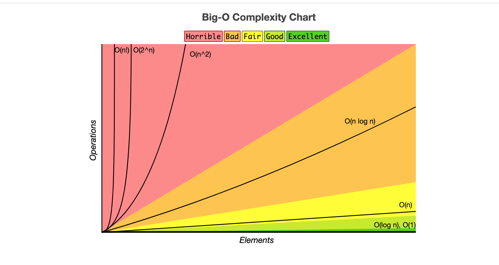
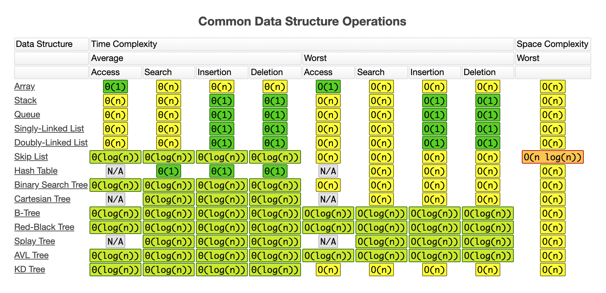
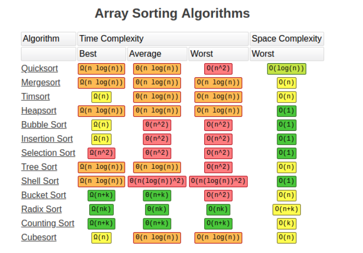
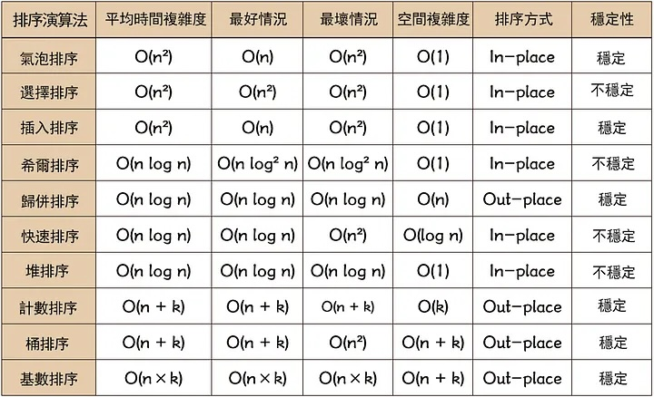
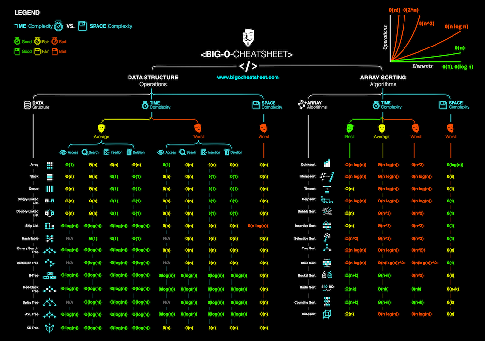
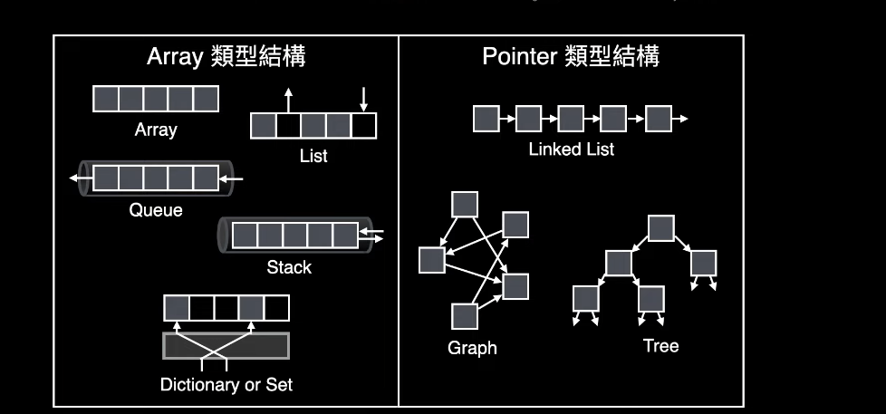
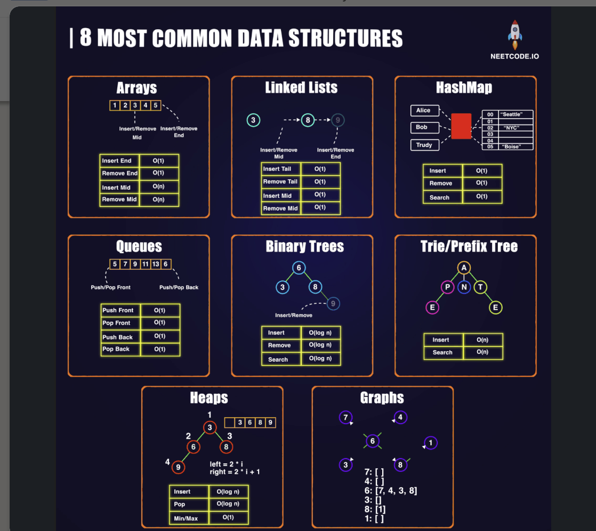
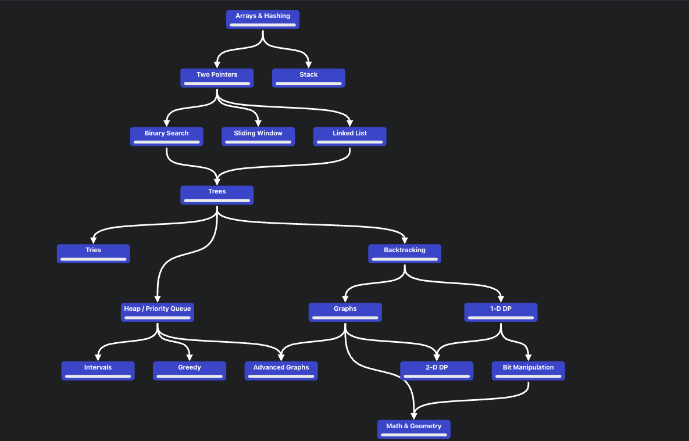

CS_BASICS
pic_source








Cmd
bash
# 1) (claude code) add time, space complexity to java class
claude
/add-time-space BinarySearch
/add-time-space BFS
# ....
Resource
-
LC classics problems
- Blind Curated 75
- Grind 75
- Grind 169
- leetcode wiki repo
- leetcode wiki
- LC 官神Github題目分類整理
- LC top 100 likes
- neetcode 150 LC list
- jiakaobo LC : LC code & video
- LC pattern @ blind : Curated-List-of-Top-100-LeetCode-Questions-to-Save-Your-Time
- LC Algorithm Problem Classification
- cheatsheet-leetcode-a4
- 14-patterns-to-ace-any-coding-interview-question
- grokking-the-coding-interview
-
LC experiences
- LC難度表
- 數字越高, 題目越難, 挑與自己LC排名接近的題庫
- (e.g. LC rank ~= 1600, pick 1600 problem)
- 代碼隨想錄
- Leetcode cookbook
- fucking-algorithm
- fucking-algorithm website
- FAANG 面試準備經驗與建議（一）
- FAANG 面試準備經驗與建議（二）
- LC 小知識
- Meta SWE isnterview prep
- 0到100的軟體工程師面試之路
- 來和大家聊聊我是如何刷題的 : pt1, pt2, pt3
- LC難度表
-
LC Flow
- high level idea : data structure, algorithm
- offer time & space complexity
- code implementation
- offer test case (consider edge case)
- discussion & follow up
- Resource.md -
Resourcefor coding interview (keep updating) - Teach yourself CS
- MindMapCodeInterview - Mind map for coding interview
- CodeInterviewCheatsheet - Coding interview cheetsheet
- repl.it - Coding online!
{kind=link}
- Visualization
- Algorithms viz
- visualgo - DFS / BFS - DFS, BFS visualization
- visualgo - linkedlist - Linkedlist visualization
- visualgo - BST - binary search tree visualization
- toptal-sorting-algorithms- sorting algorithms online
- How to: Work at Google — Example Coding/Engineering Interview
- bit_manipulation.md - Bit Manipulation Cheat Sheet
- Py TimeComplexity - Py basic data structure
Time Complexityref - Py data model - Python data model doc
- pgexercises - Postgre exercises
- sqlservertutorial
- Books
- freecodecamp - data-structures
- LC interview-experience
- Cheatsheet
-
Data structure
-
System design
-
Tools
-
LC SQL resources
Algorithms content
- Bit Manipulation
- Array
- String
- Linked List
- Stack
- Queue
- Heap
- Tree
- Hash Table
- Math
- Two Pointers
- Scan Line
- Sort
- Recursion
- Binary Search
- Binary Search Tree
- Breadth-First Search
- Depth-First Search
- Backtracking
- Dynamic Programming
- Greedy
- Graph
- Geometry
- Prefix Sum
- Simulation
- Design
- Concurrency
Database
Shell
Progress
Data Structure
| # | Title | Solution | Use case | Comment | Status |
|---|---|---|---|---|---|
Linear |
|||||
| Array | Py | AGAIN* | |||
| Queue | Py (array), Py (linkedlist), JS | AGAIN* | |||
| Stack | Py, JS (linkedlist), JS (array) | OK | |||
| Hash table | Py, JS | usually for improving time complexity B(O) via extra space complexity (time-space tradeoff) |
good basic |
AGAIN**** | |
Linear, Pointer |
|||||
| LinkedList | Py, JS, Java | OK** | |||
| Doubly LinkedList | Python, JS | AGAIN | |||
Non Linear, Pointer |
|||||
| Tree | Py | AGAIN** | |||
| Binary search Tree (BST) | Python, JS, Java | AGAIN | |||
| Binary Tree | Py | AGAIN** | |||
| Trie | Py | AGAIN | |||
| Heap | heap.py, MinHeap.py, MaxHeap.py, MinHeap.java, MaxHeap.java | AGAIN | |||
| Priority Queue (PQ) | Py 1, Py 2, Py 3 | AGAIN | |||
Graph |
|||||
| Graph | Py, JS. Java1, Java2 | OK*** | |||
| DirectedEdge | Java | AGAIN |
Algorithm
| # | Title | Solution | Use case | Comment | Time complexity | Space complexity | Status |
|---|---|---|---|---|---|---|---|
| Binary search | Python | complexity ref | Best : O(1), Avg : O(log N), Worst : O(log N) |
AGAIN | |||
| Linear search | Python | AGAIN | |||||
| Breadth-first search (BFS) | Python | FIND SHORTEST PATH |
AGAIN*** | ||||
| Depth-first search (DFS) | Python | TO CHECK IF SOMETHING EXIST |
inorder, postorder, postorder (can recreate a tree) |
Adjacency List: O(V+E), Adjacency Matrix: O(V^2) |
O(V) (V:Vertices, E:Edges) |
AGAIN*** | |
| Bubble sort | Python | OK* (3) | |||||
| Insertion sort | Python, InsertionSort.java | stable sort |
work very fast for nearly sorted array |
Best :O(n), Average : O(n^2), Worst : O(n^2) |
Worst : O(1) | AGAIN | |
| Bucket sort | Python, BucketSort.java | AGAIN | |||||
| Quick sort | quick_sort.py, quick_sort_v2.py, QuickSort.java, QuickSortV2.java, QuickSortV3.java | NOTE !!!, avg is NLogN, worst is N**2, big O ref, big O ref 2 |
Best : O(N Log N), Avg : O(N Log N), Worst : O(N^2) |
AGAIN*** | |||
| Heap sort | Python | big O ref | Best : O(N Log N), Avg : O(N Log N), Worst : O(N Log N) |
AGAIN** | |||
| Merge sort | merge_sort.py, merge_sort_topdown.py, mergesort_bottomup.py, MergeSortTopDown.java, MergeSort.java SQL | Best : O(N Log N), Avg : O(N Log N), Worst : O(N Log N) |
O(N) | OK* (2) | |||
| Pancake sort | Python | AGAIN | |||||
| Selection sort | Python, JS | AGAIN | |||||
| Topological sort | Python, Java, Java V2 | Topological Sort is a algorithm can find “ordering” on an “order dependency” graph | AGAIN | ||||
| md5 | Python | AGAIN | |||||
| Union Find | Python 1, Python 2, Java 1, Java 2, Java 3 | AGAIN | |||||
| Dynamic programming | JS 1, fibonacci_dp JS | AGAIN | |||||
| Dijkstra | Python,Java 1, Java 2 | AGAIN*** | |||||
| Floyd-Warshall | Python, Java 1, Java 2 | LC 2642 | not start | ||||
| Bellman-Ford | Python | not start | |||||
| Quick Find | Python, Java | init : O(N), union : O(N), find : O(1) | simple, but slow | AGAIN | |||
| Quick Union | Java, Java v2 | init : O(N), union : O(N), find : O(N) | lazy approach, route compression, optimized Quick Find | AGAIN | |||
| Quick Union (Improvements) | lazy approach, path compression | AGAIN | |||||
Priority Queue (unsorted) |
Java | AGAIN | |||||
| LRU cache | Python | LC 146 | AGAIN | ||||
| LFU Cache | Python | LC 460 | AGAIN | ||||
| DifferenceArray | Java | LC 1109, 370 | AGAIN | ||||
| Kadane Algo | Java | LC 53, 152,918 | AGAIN |
Array
| # | Title | Solution | Time | Space | Difficulty | Note | Status |
|---|---|---|---|---|---|---|---|
| 015 | 3 Sum | Python, Java | O(n^2) | O(1) | Medium | two pointers, Curated Top 75, good basic, check with # 001 Two Sum, #018 4 sum, amazon, fb |
OK******* (7) |
| 16 | 3 Sum Closest | Python, Java | O(n^2) | O(1) | Medium | two pointers, basic, good trick, 3 sum, google, fb, apple, m$, GS, amazon |
AGAIN******* (3) |
| 018 | 4 Sum | Python, Java | O(n^3) | O(1) | Medium | two pointers, k sum, check #016 3 sum, # 454 4 SUM II, good trick, fb |
AGAIN******** (4) |
| 26 | Remove Duplicates from Sorted Array | Python, Scala, Java | O(n) | O(1) | Easy | two pointers, MUST, basic, good trick, M$, fb |
AGAIN************** (11) |
| 27 | Remove Element | Python, Java | O(n) | O(1) | Easy | two pointers, MUST, amazon |
AGAIN****** (2)(MUST) |
| 31 | Next Permutation | Python, Scala, Java | O(n) | O(1) | Medium | array, good trick, 2 pointers, Uber, GS, google, amazon, fb |
AGAIN****************** (9) (MUST) |
| 41 | First Missing Positive | Python, Java | O(n) | O(1) | Hard | array, good trick, hash key, LC top 100 like, amazon, fb, google, apple, uber |
OK** (2) |
| 048 | Rotate Image | Python, Java | O(n^2) | O(1) | Medium | array, Curated Top 75, basic, i, j->j, i transpose matrix, garena, amazon, apple |
AGAIN************* (5) (MUST) |
| 054 | Spiral Matrix | Python, Java | O(m * n) | O(1) | Medium | array, Curated Top 75, good basic, array boundary, matrix, amazon |
AGAIN**** (4) |
| 057 | Insert Interval | Python, Java | O(n) | O(n) | Medium | interval, Curated Top 75, good basic, 056 Merge Intervals, java array, list basic |
AGAIN********** (5) (MUST!) |
| 059 | Spiral Matrix II | Python, Java | O(n^2) | O(1) | Medium | array, check # 054 Spiral Matrix, amazon |
AGAIN** (2) |
| 066 | Plus One | Python, Java | O(n) | O(1) | Easy | array, basic, digit, google |
AGAIN** (3) |
| 073 | Set Matrix Zeroes | Python, Java | O(m * n) | O(1) | Medium | array, Curated Top 75, matrix, amazon |
OK* (4) |
| 080 | Remove Duplicates from Sorted Array II | Python, Java | O(n) | O(1) | Medium | array, two pointers, AGAIN, basic, trick, fb, #26 Remove Duplicates from Sorted Array |
AGAIN************ (8) |
| 118 | Pascal’s Triangle | Python, Java | O(n^2) | O(1) excluding output | Easy | array, trick, basic |
AGAIN** (2) |
| 119 | Pascal’s Triangle II | Python, Java | O(n^2) | O(n) | Easy | array, check with # 118 Pascal's Triangle, amazon |
OK** (4) |
| 121 | Best Time to Buy and Sell Stock | Python, Java | O(n) | O(1) | Easy | array, Curated Top 75, dp, basic, greedy, UBER, M$, amazon, fb |
OK****** (7) (but again) |
| 157 | Read N Characters Given Read4 | Python, Java | O(n) | O(1) | Easy | array, 🔒, buffer, google, amazon, fb |
AGAIN**** (3) |
| 163 | Missing Ranges | Python, Java | O(n) | O(1) | Medium | array, two pointer, 🔒, google, amazon |
OK******* (4) |
| 169 | Majority Element | Python, Java | O(n) | O(1) | Easy | array, Boyer-Moore majority vote, LC 229, basic, amazon |
OK* |
| 189 | Rotate Array | Python, Java | O(n) | O(1) | Medium | array, k % len(nums), good basic, amazon |
OK* (7) (but again) |
| 209 | Minimum Size Subarray Sum | Python, Java | O(n) | O(1) | Medium | array, good basic, sliding window, Binary Search, trick, 2 pointers, fb |
OK********** (7) (but again) |
| 215 | Kth Largest Element in an Array | Python, Java | O(n) ~ O(n^2) | O(1) | Medium | array, EPI, quick sort, bubble sort, sort, amazon, fb |
OK* (2) |
| 228 | Summary Ranges | Python, Java | O(n) | O(1) | Easy | array, check # 163 Missing Ranges, good basic, google |
OK********* (5) |
| 229 | Majority Element II | Python, Java | O(n) | O(1) | Medium | array, Boyer-Moore majority vote (2 candidates), LC 169, good trick, amazon |
OK |
| 238 | Product of Array Except Self | Python, Java | O(n) | O(1) | Medium | array, Curated Top 75, left, right array, LintCode, good trick, Apple, M$, amazon, fb |
OK******* (but again)(6) |
| 240 | Search a 2D Matrix II | Python, Java | O(m + n) | O(1) | Medium | array, LintCode, basic, matrix, trick, binary search, check # 74 Search a 2D Matrix, amazon, apple |
OK***** (7) (but again) |
| 243 | Shortest Word Distance | Python, Java | O(n) | O(1) | Easy | array, 🔒, basic |
OK* |
| 245 | Shortest Word Distance III | Python, Java | O(n) | O(1) | Medium | array, 🔒, check Shortest Word Distance I II III |
OK* |
| 251 | Flatten 2D Vector | Python, Java | ctor: O(1), next: O(1) amortized | O(1) | Medium | design, 🔒, good basic, check# 341 Flatten Nested List Iterator, google, airbnb, twitter, amazon |
AGAIN******** (5) |
| 277 | Find the Celebrity | Python, Java | O(n) | O(1) | Medium | array, graph, 🔒, fb, amazon, trick |
AGAIN********** (5) |
| 287 | Find the Duplicate Number | Python, Java | O(n) | O(1) | Medium | two pointers, good trick, Floyd cycle detection, binary search on value, check # 142 Linked List Cycle II, amazon |
OK* (2) |
| 289 | Game of Life | Python, Java | O(m * n) | O(1) | Medium | array, simultaneous, matrix, complex, google, amazon |
AGAIN*** (4) |
| 293 | Flip Game | Python, Java | O(n^2) | O(n) | Easy | array, 🔒, basic |
AGAIN* |
| 308 | Range Sum Query 2D - Mutable | Python, Java | ctor: O(m * n), update: O(logm * logn), query: O(logm * logn) | O(m * n) | Hard | array, LC 303, LC 304, pre-sum, binary indexed tree (BIT), segment tree, 🔒, google | AGAIN(1)***** not start |
| 311 | Sparse Matrix Multiplication | Python, Java | O(m * n * l) | O(m * l) | Medium | array, 🔒, matrix, basic, fb, google |
OK**** (5) |
| 334 | Increasing Triplet Subsequence | Python, Java | O(n) | O(1) | Medium | array, AGAIN, check LC 300, trick, fb, google |
OK***** (but again) (4) |
| 335 | Self Crossing | Java | O(n) | O(1) | Hard | array, geometry, google | Again (not start) |
| 370 | Range Addition | Python, Java | O(k + n) | O(n) | Medium | prefix sum, prefix, diff array, check # 598 Range Addition II, amazon, LC 1109, LC 1094, google |
AGAIN************** (4) (MUST) |
| 384 | Shuffle an Array | Python, Java | ctor: O(n), shuffle: O(n) | O(n) | Medium | design, EPI, trick |
OK* |
| 396 | Rotate Function | Python, Java | O(n) | O(1) | Medium | array, can pass, math, trick, amazon |
AGAIN*** (3) |
| 412 | Fizz Buzz | Python, Scala, Java | O(n) | O(1) | Easy | array, basic, string, simulation, LC 1195 |
OK |
| 414 | Third Maximum Number | Python, Java | O(n) | O(1) | Easy | array, good basic, amazon |
OK* (4) |
| 419 | Battleships in a Board | Python, Java | O(m * n) | O(1) | Medium | array, matrix, count only top-left cell of each ship, no extra space, LC 200, amazon |
AGAIN* |
| 422 | Valid Word Square | Python, Java | O(m * n) | O(1) | Easy | array, 🔒, basic, matrix |
AGAIN* |
| 442 | Find All Duplicates in an Array | Python, Java | O(n) | O(1) | Medium | array, index-as-hash (negative marking), LC 448, LC 41, good trick, amazon |
OK* |
| 448 | Find All Numbers Disappeared in an Array | Python, Java | O(n) | O(1) | Easy | array, index-as-hash (negative marking), LC 442, LC 41, good basic |
OK |
| 498 | Diagonal Traverse | Python, Java | O(m * n) | O(1) excluding output | Medium | array, matrix, Diagonal, google, fb |
AGAIN****** (5) |
| 531 | Lonely Pixel I | Python, Java | O(m * n) | O(m + n) | Medium | array, 🔒, matrix, basic |
AGAIN* |
| 533 | Lonely Pixel II | Python, Java | O(m * n) | O(m * n) | Medium | array, 🔒, matrix, row-pattern hashing, LC 531 |
AGAIN (not start*) |
| 565 | Array Nesting | Python, Java | O(n) | O(1) | Medium | array, union find, dfs, apple |
AGAIN**** (1) |
| 566 | Reshape the Matrix | Python, Java | O(m * n) | O(m * n) | Easy | array, basic, matrix |
AGAIN** |
| 581 | Shortest Unsorted Continuous Subarray | Python, Java | O(n) | O(1) | Easy | array, basic |
AGAIN* |
| 605 | Can Place Flowers | Python, Java | O(n) | O(1) | Easy | array, pass vs continue |
OK* |
| 624 | Maximum Distance in Arrays | Python, Java | O(n) | O(1) | Easy | array, 🔒, track running max excluding the current array, good trick |
AGAIN* |
| 643 | Maximum Average Subarray I | Python, Java | O(n) | O(1) | Easy | array, Math, basic |
AGAIN* |
| 661 | Image Smoother | Python, Java | O(m * n) | O(m * n) | Easy | array, matrix, basic, amazon |
OK***** (4) (but again!) |
| 665 | Non-decreasing Array | Python, Java | O(n) | O(1) | Easy | array, greedy, at most one modification, decide nums[i-1] vs nums[i+1], good trick |
AGAIN (not start) |
| 667 | Beautiful Arrangement II | Python, Java | O(n) | O(1) | Medium | array, math, construct k distinct diffs then run out, trick |
AGAIN (not start) |
| 670 | Maximum Swap | Python, Java | O(n) | O(n) | Medium | array, good basic, n = number of digits, last-occurrence index, string + pointers, fb |
AGAIN************ (9) (MUST) |
| 674 | Longest Continuous Increasing Subsequence | Python, Java | O(n) | O(1) | Easy | array, good basic, dp, 2 pointers, fb |
OK*** (5) |
| 697 | Degree of an Array | Python, Java | O(n) | O(n) | Easy | array, hash table, degree + first/last index, good basic |
AGAIN (not start) |
| 713 | Subarray Product Less Than K | Python, Java | O(n) | O(1) | Medium | array, basic, sliding window, good trick |
OK****** (3) (but again) |
| 717 | 1-bit and 2-bit Characters | Python, Java | O(n) | O(1) | Easy | array, Greedy | AGAIN (not start) |
| 723 | Candy Crush | Python, Java | O((R * C)^2) | O(1) | Medium | array, complex |
AGAIN (not start) |
| 724 | Find Pivot Index | Python, Java | O(n) | O(1) | Easy | array, good basic, prefix-sum | OK**** (2) |
| 729 | My Calendar I | Python, Java | O(nlogn) | O(n) | Medium | array, good basic, interval, google | AGAIN**** (1) |
| 731 | My Calendar II | Python, Java | O(n^2) | O(n) | Medium | array, trick, good trick, scanning line, google |
AGAIN******** (4) |
| 747 | Largest Number At Least Twice of Others | Python, Java | O(n) | O(1) | Easy | array, good basic, data structure |
OK* |
| 755 | Pour Water | Python, Java | O(v * n) | O(1) | Medium | array, complex |
AGAIN (not start) |
| 766 | Toeplitz Matrix | Python, Java | O(m * n) | O(1) | Easy | array, basic, matrix, google |
AGAIN* (2) |
| 769 | Max Chunks To Make Sorted | Python, Java | O(n) | O(1) | Medium | prefix sum, LC 768, good trick, stack, array, google | AGAIN*** (2) |
| 792 | Number of Matching Subsequences | Python, Java | O(n + w) | O(w) | Medium | hash table, basic, hash map, google | AGAIN**** (2) |
| 794 | Valid Tic-Tac-Toe State | Python, Java | O(1) | O(1) | Medium | array, complex |
AGAIN |
| 795 | Number of Subarrays with Bounded Maximum | Python, Java | O(n) | O(1) | Medium | array, count subarrays with max in [left, right], two pointers, trick |
AGAIN (not start*) |
| 807 | Max Increase to Keep City Skyline | Python, Java | O(n^2) | O(n) | Medium | array, matrix, row max + col max, greedy, good basic |
AGAIN* |
| 821 | Shortest Distance to a Character | Python, Java | O(n) | O(1) excluding output | Easy | array, basic, trick |
AGAIN** |
| 830 | Positions of Large Groups | Python, Java | O(n) | O(1) | Easy | array, basic |
AGAIN* |
| 832 | Flipping an Image | Python, Java | O(n^2) | O(1) | Easy | array, matrix, reverse each row then invert, two pointers, basic |
AGAIN* |
| 835 | Image Overlap | Python, Java | O(n^4) | O(n^2) | Medium | array, matrix, brute-force all shifts, count overlaps with a delta hashmap |
AGAIN (not start) |
| 840 | Magic Squares In Grid | Python, Java | O(m * n) | O(1) | Easy | array, complex |
AGAIN (not start) |
| 842 | Split Array into Fibonacci Sequence | Python, Java | O(n^3) | O(n) | Medium | array, check # 306 Addictive Number, basic, dfs, fibonacci |
AGAIN* (not start) |
| 845 | Longest Mountain in Array | Python, Java | O(n) | O(1) | Medium | array, basic, 2 pointers expansion, google |
AGAIN************ (2)(MUST) |
| 849 | Maximize Distance to Closest Person | Python, Java | O(n) | O(1) | Medium | array, basic, 2 pointers, LC 855, google |
AGAIN********* (2) |
| 860 | Lemonade Change | Python, Java | O(n) | O(1) | Easy | array, amazon | OK* (2) |
| 868 | Transpose Matrix | Python, Java | O(r * c) | O(r * c) | Easy | array, basic |
OK* |
| 885 | Spiral Matrix III | Python, Java | O(max(m, n)^2) | O(1) | Medium | array, basic |
AGAIN* (not start) |
| 888 | Fair Candy Swap | Python, Java | O(m + n) | O(m + n) | Easy | array, basic, trick |
OK* |
| 896 | Monotonic Array | Python, Java | O(n) | O(1) | Easy | array, all, fb |
OK |
| 905 | Sort Array By Parity | Python, Java | O(n) | O(1) | Easy | array, custom sort, 2 pointers | AGAIN***** (1)(MUST) |
| 909 | Snakes and Ladders | Python, Java | O(n^2) | O(n^2) | Medium | array, matrix, bfs, complex, amazon |
AGAIN***** (3) |
| 915 | Partition Array into Disjoint Intervals | Python, Java | O(n) | O(n) | Medium | array, basic, trick |
AGAIN* (not start) |
| 918 | Maximum Sum Circular Subarray | Python, Java | O(n) | O(1) | Medium | array, check # 053 Maximum Subarray, basic, trick |
AGAIN** (2) |
| 921 | Minimum Add to Make Parentheses Valid | Python, Java | O(n) | O(1) | Medium | array, basic, trick |
AGAIN** |
| 922 | Sort Array By Parity II | Python, Java | O(n) | O(1) | Easy | array, basic |
AGAIN* |
| 923 | 3Sum With Multiplicity | Python, Java | O(n^2) | O(n) | Medium | array, LC 15, count pairs with a Counter, combination math, trick |
AGAIN (not start) |
| 932 | Beautiful Array | Python, Java | O(nlogn) | O(n) | Medium | array, divide and conquer, odd/even split, trick, google |
AGAIN** (not start) (1) |
| 941 | Valid Mountain Array | Python, Java | O(n) | O(1) | Easy | array, basic, good basic |
AGAIN* |
| 945 | Minimum Increment to Make Array Unique | Python, Java | O(nlogn) | O(n) | Medium | array, trick, good |
AGAIN** |
| 947 | Most Stones Removed with Same Row or Column | Python, Java | O(n * a(n)) | O(n) | Medium | array, Union Find on row/col keys, dfs, trick, google |
AGAIN** (1) (not start) |
| 949 | Largest Time for Given Digits | Python, Java | O(1) | O(1) | Easy | array, brute force all 4! digit permutations, math, basic |
OK* |
| 950 | Reveal Cards In Increasing Order | Python, Java | O(nlogn) | O(n) | Medium | array, sort + deque simulation, queue, 2 pointers, google | AGAIN (not start) (2) |
| 954 | Array of Doubled Pairs | Python, Java | O(n + klogk) | O(k) | Medium | array, counter, dict, trick |
AGAIN** |
| 961 | N-Repeated Element in Size 2N Array | Python, Java | O(n) | O(1) | Easy | array, LC 217, hash table / count, basic |
OK |
| 989 | Add to Array-Form of Integer | Python, Java | O(n) | O(1) | Easy | array, add xxx to sum, fb | AGAIN (not start) |
| 004 | Median of Two Sorted Arrays | Python, Java | O(log(min(m, n))) | O(1) | Hard | binary search, binary search on partition, median, heapq (brute), LC top 100 like, amazon, google, apple | AGAIN* (1) |
| 10 | Regular Expression Matching | Python, Java | O(m * n) | O(m * n) | Hard | dp, recursion, 2D dp, LC 44, fb |
AGAIN (not start) |
| 056 | Merge Intervals | Python, Java | O(nlogn) | O(n) | Medium | interval, Curated Top 75, good trick, 057 Insert Interval, twitter, M$, UBER, google, amazon, fb |
OK********* (6) (but AGAIN) |
| 759 | Employee Free Time | Python, Java | O(nlogn) | O(n) | Hard | interval, LC 56 and LC 986, heap, merger intervals, scanning line, amazon, fb, google, uber, airbnb |
AGAIN********** (2) (not start) |
| 1007 | Minimum Domino Rotations For Equal Row | Java | O(n) | O(1) | Medium | array, google, dp | AGAIN (1) |
| 1014 | Best Sightseeing Pair | Python, Java | O(n) | O(1) | Medium | array, dp, good basic, Spotify | AGAIN (not start) |
| 1027 | Longest Arithmetic Subsequence | Python, Java | O(n^2) | O(n^2) | Medium | array, dp, hash table, trick, google, amazon | AGAIN*** (not start) |
| 1031 | Maximum Sum of Two Non-Overlapping Subarrays | Python, Java | O(n) | O(n) | Medium | array, prefix sum+slide window, good trick, google |
AGAIN*************** (3)(MUST) |
| 1041 | Robot Bounded In Circle | Python, Java | O(n) | O(1) | Medium | array, math, amazon |
AGAIN** (2) |
| 1074 | Number of Submatrices That Sum to Target | Java | O(m^2 * n) | O(n) | Hard | array, hashmap, prefix sum | AGAIN (not start) |
| 1089 | Duplicate Zeros | Java | O(n) | O(1) | Easy | array, two pointers, in-place shift from the back, good trick |
AGAIN (not start) |
| 1094 | Car Pooling | Python, Java | O(n + k) | O(k) | Medium | array, range addition, prefix sum, LC 370 | AGAIN********** (5) (MUST) |
| 1109 | Corporate Flight Bookings | Python, Java | O(n + k) | O(n) | Medium | array, LC 370, difference array, good basic, amazon, google |
AGAIN********* (MUST) (3) |
| 1248 | Count Number of Nice Subarrays | Python, Java | O(n) | O(n) | Medium | array, LC 828, map, Prefix sum, exactly K with at most K, amazon |
AGAIN********************* (4) (MUST) |
| 1272 | Remove Interval | Java | O(n) | O(n) | Medium | array, google | AGAIN (not start) |
| 1275 | Find Winner on a Tic Tac Toe Game | Python, Java | O(1) | O(1) | Easy | array, amazon |
AGAIN (not start) |
| 1288 | Remove Covered Intervals | Java | O(nlogn) | O(1) | Medium | array, greedy, interval | AGAIN (not start) |
| 1314 | Matrix Block Sum | Java | O(m * n) | O(m * n) | Medium | array, prefix sum, dp, matrix sum | AGAIN (not start) |
| 1431 | Kids With the Greatest Number of Candies | Java | O(n) | O(1) excluding output | Easy | array, compare each candy count with the max, basic |
AGAIN (not start) |
| 1470 | Shuffle the Array | Java | O(n) | O(1) excluding output | Easy | array, index mapping, 2 pointers, basic |
AGAIN (not start) |
| 1564 | Put Boxes Into the Warehouse I | Java | O(nlogn) | O(m) | Medium | array, google |
AGAIN (not start) |
| 1567 | Maximum Length of Subarray With Positive Product | Python, Java | O(n) | O(1) | Medium | array, good trick, dp, 2 pointers, amazon | AGAIN**** (1) (not start) |
| 1672 | Richest Customer Wealth | Java | O(m * n) | O(1) | Easy | array, row sum then max, matrix, basic |
OK |
| 1806 | Minimum Number of Operations to Reinitialize a Permutation | Java | O(n) | O(n) | Medium | array, brute force, google | AGAIN (not start) |
| 1914 | Cyclically Rotating a Grid | Python, Java | O(m * n) | O(m * n) | Medium | array, brute force, dequeueamazon |
AGAIN (not start) |
| 1920 | Build Array from Permutation | Java | O(n) | O(1) excluding output | Easy | array, index mapping, basic |
AGAIN (not start) |
| 1929 | Concatenation of Array | Java | O(n) | O(1) excluding output | Easy | array, concatenate, basic |
AGAIN (not start) |
| 1991 | Find the Middle Index in Array | Java | O(n) | O(1) | Easy | array, prefix sum, LC 724, good basic |
AGAIN (not start) |
| 2079 | Watering Plants | Java | O(n) | O(1) | Medium | array, google | AGAIN (not start) |
| 2640 | Find the Score of All Prefixes of an Array | Java | O(n) | O(1) excluding output | Medium | array, lc weekly 102 | OK (1) |
| 2644 | Find the Maximum Divisibility Score | Java | O(n * m) | O(1) | Easy | array, sort | Again (1) |
| 2553 | Separate the Digits in an Array | Java | O(n * d) | O(1) excluding output | Easy | array, weekly 97 | OK |
| 3195 | Find the Minimum Area to Cover All Ones I | Java | O(m * n) | O(1) | Medium | array, LC weekly | AGAIN (1) |
| 3964 | Minimum Lights to Illuminate a Road | Python, Java | O(n) | O(n) | Medium | array, diff array, LC bi weekly | AGAIN (1) |
Set
| # | Title | Solution | Time | Space | Difficulty | Note | Status |
|---|---|---|---|---|---|---|---|
| 1436 | Destination City | Java | O(n) | O(n) | Easy | set, set of outgoing cities, find the city with no outgoing path, basic |
Again (1) |
| 2357 | Make Array Zero by Subtracting Equal Amounts | Java | O(n) | O(n) | Easy | set, count distinct non-zero values, good trick |
Again (1) |
| 1316 | Distinct Echo Substrings | Java | O(n^2) | O(n^2) | Hard | set, set of substrings, rolling hash / Rabin-Karp for O(n^2), trick |
Again (not start) |
| 2657 | Find the Prefix Common Array of Two Arrays | Java | O(n) | O(n) | Medium | set, frequency array + running common count, good trick, weekly_103 | Again**** (1) |
| 2682 | Find the Losers of the Circular Game | Java | O(n) | O(n) | Easy | set, simulate the circular jumps until a friend repeats, hashset, basic |
Again (1) |
Slide Window
| # | Title | Solution | Time | Space | Difficulty | Note | Status |
|---|---|---|---|---|---|---|---|
| 30 | Substring with Concatenation of All Words | Java | O(n * l) | O(m * l) | Hard | sliding window, hashmap word count, fixed-size window of l chars, LC 76, good trick |
AGAIN(not start) |
| 768 | Max Chunks To Make Sorted II | Java | O(n) | O(n) | Hard | sliding window, LC 769, prefix max vs suffix min, monotonic stack, good trick |
AGAIN(not start) |
| 1004 | Max Consecutive Ones III | Java | O(n) | O(1) | Medium | sliding window, longest window with at most k zeros, LC 487, LC 424, good basic |
Again (1) |
| 1658 | Minimum Operations to Reduce X to Zero | Python, Java | O(n) | O(1) | Medium | sliding window, turn “remove from both ends” into “longest middle subarray with sum total-x”, good trick, google |
AGAIN******** (1)(MUST) |
| 1838 | Frequency of the Most Frequent Element | Java, Python | O(nlogn) | O(1) | Medium | sliding window, sort + sliding window with sum, binary search on the answer, good trick |
AGAIN******** (1)(good) |
| 1839 | Longest Substring Of All Vowels in Order | Python, Java | O(n) | O(1) | Medium | sliding window, window must be non-decreasing and cover all 5 vowels, basic |
AGAIN** (1)(good) |
| 2555 | Maximize Win From Two Segments | Java | O(n) | O(n) | Medium | sliding window, best window ending at i + best window before i, prefix dp, weekly 97 | AGAIN (not start) |
| 2962 | Count Subarrays Where Max Element Appears at Least K Times | Java | O(n) | O(1) | Medium | sliding window, count windows containing the max at least k times, good trick, weekly 375 |
AGAIN************ (3) |
| 3090 | Maximum Length Substring With Two Occurrences | Java | O(n) | O(1) | Easy | sliding window, longest window where every char appears at most twice, weekly 390 | AGAIN (1) |
Hash Table
| # | Title | Solution | Time | Space | Difficulty | Note | Status |
|---|---|---|---|---|---|---|---|
| 001 | Two Sum | Python, Java,Scala | O(n) | O(n) | Easy | hash table, good basic, apple, amazon, UBER, grab, fb |
OK*** (6) (but again) |
| 003 | Longest Substring Without Repeating Characters | Python, Java | O(n) | O(1) | Medium | hash table, Curated Top 75, 2 pointers, optimized (SLIDING WINDOW + DICT), good trick, hashMap, MUST, apple, amazon, fb |
AGAIN**************** (12) (but AGAIN) |
| 36 | Valid Sudoku | Python, Java | O(9^2) | O(9^2) | Medium | hash table, array, hashset, UBER, apple, amazon |
OK**** (3) (again) |
| 49 | Group Anagrams | Python, Scala, Java | O(n * glogg) | O(n * g) | Medium | hash table, Curated Top 75, good basic, dict, trick, dict + sort, UBER, amazon, fb |
OK ********** (6) |
| 170 | Two Sum III - Data structure design | Python , Java | add: O(1), find: O(n) | O(n) | Easy | hash table, 🔒, trick, good basic, linkedin, fb |
OK*** (4) |
| 187 | Repeated DNA Sequences | Python , Java | O(n) | O(n) | Medium | hash table, basic, trick, set, linkedin, google |
AGAIN** |
| 202 | Happy Number | Python , Java | O(k) | O(k) | Easy | hash table, twitter, airbnb, UBER |
AGAIN** (4) |
| 204 | Count Primes | Python , Java | O(nloglogn) | O(n) | Medium | hash table, Sieve of Eratosthenes, good trick, cache, M$, amazon |
AGAIN******** (5) |
| 205 | Isomorphic Strings | Python, Java | O(n) | O(1) | Easy | hash table, basic, trick, bloomberg |
AGAIN** |
| 217 | Contains Duplicate | Python , Java | O(n) | O(n) | Easy | hash table, Curated Top 75, yahoo, airbnb |
OK |
| 219 | Contains Duplicate II | Python ,Java | O(n) | O(n) | Easy | hash table, basic, trick |
AGAIN* |
| 244 | Shortest Word Distance II | Python , Java | ctor: O(n), lookup: O(a + b) | O(n) | Medium | hash table, 🔒 | AGAIN (not start*) |
| 246 | Strobogrammatic Number | Python, Java | O(n) | O(1) | Easy | hash table, 🔒, google, fb |
OK* (5) |
| 249 | Group Shifted Strings | Python , Java | O(n * l) | O(n * l) | Medium | hash table, LC 49, 🔒, hashmap, char, apple, UBER, google |
OK *****(6) (but again) |
| 266 | Palindrome Permutation | Python , Java | O(n) | O(1) | Easy | hash table, 🔒 | OK |
| 288 | Unique Word Abbreviation | Python , Java | ctor: O(n), lookup: O(1) | O(k) | Medium | hash table, 🔒, ?, google | AGAIN (2)(not start) |
| 290 | Word Pattern | Python , Java | O(n) | O© | Easy | hash table, basic, chcek # 205 Isomorphic Strings, good basic, for ptn, word in zip(pattern, words), dropbox, UBER |
AGAIN* (3) |
| 299 | Bulls and Cows | Python , Java | O(n) | O(1) | Easy | hash table, trick, map(operator.eq, a, b), amazon, airbnb, google |
AGAIN* (3) |
| 314 | Binary Tree Vertical Order Traversal | Python , Java | O(n) | O(n) | Medium | hash table, LC 987, 🔒, BFS, DFS, tree, trick, google, amazon, fb, m$ |
OK**** (6) |
| 325 | Maximum Size Subarray Sum Equals k | Python, Java | O(n) | O(n) | Medium | hash table, prefix sum, 🔒, hashmap, good trick, dict, fb |
AGAIN***************** (8) (MUST) |
| 336 | Palindrome Pairs | Java | O(n * l^2) | O(n * l) | Hard | hash table, LC 49, Anagrams, string op, hashmap, sub-string | Again******* (2)(again) |
| 356 | Line Reflection | Python , Java | O(n) | O(n) | Medium | hash table, 🔒, Hash, Two Pointers, math, google |
AGAIN (not start) |
| 359 | Logger Rate Limiter | Python, Java | O(1), amortized | O(k) | Easy | hash table, 🔒, google | OK |
| 387 | First Unique Character in a String | Python , Java | O(n) | O(n) | Easy | hash table, amazon, apple, fb |
OK |
| 388 | Longest Absolute File Path | Python , Java | O(n) | O(d) | Medium | hash table, stack, good trick, file system, google |
AGAIN******* (3) |
| 409 | Longest Palindrome | Python , Java | O(n) | O(1) | Easy | hash table, count char pairs, add 1 if any odd count remains, basic |
OK* |
| 424 | Longest Repeating Character Replacement | Python, Java | O(n) | O(1) | Medium | hash table, Curated Top 75, hash map, max_freq, silding window, good trick, LC blind pattern |
AGAIN**************** (10) (MUST) |
| 438 | Find All Anagrams in a String | Python , Java | O(n) | O(1) | Medium | hash table, trick, AGAIN, sliding window, acc Counter, amazon, fb, apple, google, uber, yahoo |
AGAIN************** (11)(must) |
| 447 | Number of Boomerangs | Python , Java | O(n^2) | O(n) | Easy | hash table, trick, google |
AGAIN (3) (not start) |
| 454 | 4Sum II | Python , Java | O(n^2) | O(n^2) | Medium | hash table, check LC 018 4SUM, trick, basic, amazon |
AGAIN** |
| 463 | Island Perimeter | Python , Java | O(m * n) | O(1) | Easy | hash table, count cells then subtract shared edges, matrix, basic, google, fb, amazon |
AGAIN** (2) |
| 470 | Implement Rand10() Using Rand7() | Python , Java | O(1) | O(1) | Medium | hash table, trick, google |
AGAIN** (3) |
| 473 | Matchsticks to Square | Python , Java | O(n * s * 2^n) | O(n * (2^n + s)) | Medium | hash table, good trick, backtrack | AGAIN****** (2) |
| 523 | Continuous Subarray Sum | Python , Java | O(n) | O(k) | Medium | hash table, sub array sum, check # 560 Subarray Sum Equals K, good trick, substring, AGAIN, M$, fb, apple |
AGAIN*************** (10) (MUST) |
| 525 | Contiguous Array | Python, Java | O(n) | O(n) | Medium | hash table, sub-array sum, LC 560, 525, 974, good basic, array, hashmap, fb, amazon |
AGAIN****************** (12) (MUST) |
| 532 | K-diff Pairs in an Array | Python , Java | O(n) | O(n) | Medium | hash table, basic, collections.Counter(), a-b =k -> a = k + b , amazon |
AGAIN********** (6) |
| 554 | Brick Wall | Python , Java | O(n) | O(m) | Medium | hash table, LC 252, gap map, trick, hash map, bloomberg, fb, grab |
AGAIN******** (6) |
| 560 | Subarray Sum Equals K | Python, Java | O(n) | O(n) | Medium | hash table, LC 560, 525, 974, prefix sum, must check, check # 523 Continuous Subarray Sum, LC 1268, basic, substring, good trick, google, fb |
AGAIN***************** (8) (MUST) |
| 561 | Array Partition I | Python , Java | O(nlogn) | O(1) | Easy | hash table, sort then sum every other element, greedy, good trick |
OK |
| 575 | Distribute Candies | Python , Java | O(n) | O(n) | Easy | hash table, min(distinct kinds, n / 2), hashset, basic |
OK |
| 594 | Longest Harmonious Subsequence | Python , Java | O(n) | O(n) | Easy | hash table, basic, good trick |
OK* (3) |
| 599 | Minimum Index Sum of Two Lists | Python , Java | O((m + n) * l) | O(m * l) | Easy | hash table, yelp |
OK* |
| 609 | Find Duplicate File in System | Python , Java | O(n * l) | O(n * l) | Medium | hash table, collections.defaultdict(list), dropbox |
OK* |
| 657 | Robot Return to Origin | Python , Java | O(n) | O(1) | Easy | hash table, amazon |
OK (2) |
| 710 | Random Pick with Blacklist | Java | ctor: O(b), pick: O(1) | O(b) | Hard | hash table, hashmap, google | AGAIN (not start) |
| 748 | Shortest Completing Word | Python , Java | O(n) | O(1) | Easy | hash table, collections.Counter, google |
AGAIN* (3) |
| 760 | Find Anagram Mappings | Python , Java | O(n) | O(n) | Easy | hash table, basic, collections.defaultdict |
OK |
| 771 | Jewels and Stones | Python , Java | O(m + n) | O(n) | Easy | hash table, amazon |
OK (2) |
| 811 | Subdomain Visit Count | Python , Java | O(n) | O(n) | Easy | hash table, indeed, bloomberg |
AGAIN (not start) |
| 822 | Card Flipping Game | Python , Java | O(n) | O(n) | Medium | hash table, good basic |
AGAIN* (3) |
| 825 | Friends Of Appropriate Ages | Python , Java | O(a^2 + n) | O(a) | Medium | hash table, good basic, counter, AGAIN, fb |
AGAIN***** (5) |
| 869 | Reordered Power of 2 | Python , Java | O(1) | O(1) | Medium | hash table, trick, basic, bit manipulation, bit |
AGAIN* |
| 873 | Length of Longest Fibonacci Subsequence | Python , Java | O(n^2) | O(n) | Medium | hash table, trick, DP, Fibonacci, set |
AGAIN** |
| 957 | Prison Cells After N Days | Python , Java | O(1) | O(1) | Medium | hash table, trick, DP, mod |
AGAIN (not start) |
| 966 | Vowel Spellchecker | Python , Java | O(n) | O(w) | Medium | hash table, trick, dict, set |
AGAIN (not start) |
| 974 | Subarray Sums Divisible by K | Python , Java | O(n) | O(k) | Medium | hash table, LC 560, 525, 974, prefix, hashmap | AGAIN*************** (7)(MUST) |
| 992 | Subarrays with K Different Integers | Python , Java | O(n) | O(k) | Hard | hash table, trick, hashmap, slide window, amazon | AGAIN**** (1) |
| 1010 | Pairs of Songs With Total Durations Divisible by 60 | Python , Java | O(n) | O(1) | Medium | hash table, good basicm dict, array, amazon |
AGAIN********* (4) (MUST) |
| 1099 | Two Sum Less Than K | Python , Java | O(nlogn) | O(1) | Medium | hash table, dict, sort, amazon |
AGAIN* (1) (not start) |
| 1121 | Divide Array Into Increasing Sequences | Java | O(n) | O(1) | Hard | hash table, dict, google | Again (not start) |
| 1131 | Rank Transform of an Array | Python , Java | O(nlogn) | O(n) | Easy | hash table, dict, array, amazon |
OK* (1) |
| 1170 | Compare Strings by Frequency of the Smallest Character | Java | O((m + n) * l + nlogn) | O(n) | Medium | hash table, hashmap, binary search, google |
AGAIN*** (1)s |
| 1257 | Smallest Common Region | Java | O(n) | O(n) | Medium | hash table, hashmap, good trick, lowest common ancestor (LCA) | AGAIN (not start) |
| 1296 | Divide Array in Sets of K Consecutive Numbers | Python , Java | O(nlogn) | O(n) | Medium | hash table, LC 846, dict, google |
AGAIN (not start) |
| 1726 | Tuple with Same Product | Python , Java | O(n^2) | O(n^2) | Medium | hash table, hashmap, sort, 2 pointers, brute force, good basic, google |
AGAIN**** (1)(MUST) |
| 1794 | Count Pairs of Equal Substrings With Minimum Difference | Java | O(m + n) | O(1) | Medium | hash table, first, last idx, hashmap, trick, google |
AGAIN**** (1)(not start) |
| 1923 | Longest Common Subpath | Python, Java | O(m * nlogn) | O(n) | Hard | hash table, hash, bit, amazon |
AGAIN (not start) |
| 2506 | Count Pairs Of Similar Strings | Java | O(n * l) | O(n) | Easy | hash table, hashmap, LC weekly | AGAIN (1) |
| 2592 | Maximize Greatness of an Array | Java | O(nlogn) | O(1) | Medium | hash table, Treemap, 2 pointers, LC weekly | AGAIN (1) |
| 2615 | Sum of Distances | Java | O(n) | O(n) | Medium | hash table, good trick, prefix sum, hashmap, LC weekly | AGAIN**** (1) |
| 2766 | Relocate Marbles | Java | O(n + m) | O(n) | Medium | hash table, hashset, hashmap LC weekly, good trick | AGAIN******(1) |
| 2768 | Number of Black Blocks | Java | O(n) | O(n) | Medium | hash table, hashmap, LC weekly | AGAIN(1) (not srart) |
| 2870 | Minimum Number of Operations to Make Array Empty | Java | O(n) | O(n) | Medium | hash table, LC 2244, hashmap, count, LC weekly | AGAIN (1) |
| 2963 | Count the Number of Good Partitions | Java | O(n) | O(n) | Hard | hash table, LC weekly | AGAIN (1) (not start) |
| 3121 | Count the Number of Special Characters II | Java | O(n) | O(1) | Medium | hash table, greedy, hashmap | AGAIN(1) (not srart) |
| 4007 | Minimum Initial Strength to Defeat All Monsters | Python, Java | O(nlogM) | O(1) | Medium | hash table, good trick, hashmap pair, LC weekly | AGAIN(1) (not srart) |
Linked list
| # | Title | Solution | Time | Space | Difficulty | Note | Status |
|---|---|---|---|---|---|---|---|
| 002 | Add Two Numbers | Python, Java | O(n) | O(1) | Medium | linked list, Curated Top 75, check # 445 Add Two Numbers II, basic, airbnb, amazon, fb |
OK**** (6) (but again) |
| 021 | Merge Two Sorted Lists | Python, Java | O(n) | O(1) | Easy | linked list, Curated Top 75, UBER, amazon, apple, fb |
OK******** (6) (but again) |
| 023 | Merge k sorted lists | Python, Java | O(nlogk) | O(k) | Hard | linked list, Curated Top 75, check #21 Merge Two Sorted Lists, amazon |
OK**** (2) (but again !!! |
| 024 | Swap Nodes in Pairs | Python, Java | O(n) | O(1) | Medium | linked list, GOOD basic, LC 100 like, UBER, amazon, fb |
AGAIN**************** (8) (MUST) |
| 025 | Reverse Nodes in k-Group | Python, Java | O(n) | O(1) | Hard | linked list, good trick, reverse linkedlist, reverse K linkedlist, amazon, google, fb, m$ | AGAIN********** (4) |
| 061 | Rotate List | Python, Java | O(n) | O(1) | Medium | linked list, basic |
AGAIN (2) |
| 082 | Remove Duplicates from Sorted List II | Python, Java | O(n) | O(1) | Medium | linked list, good basic, check # 083 Remove Duplicates from Sorted List |
AGAIN (3) ***** |
| 083 | Remove Duplicates from Sorted List | Python, Java | O(n) | O(1) | Easy | linked list, basic |
OK* |
| 92 | Reverse Linked List II | Python, Java | O(n) | O(1) | Medium | linked list, LC 206, reverse k nodes, good trick, fb, apple, google, amazon, m$ |
AGAIN*************** (10) (MUST) |
| 138 | Copy List with Random Pointer | Python, Java | O(n) | O(n) | Medium | linked list, trick, recursive, hash table, UBER, M$, amazon, fb |
AGAIN******* (7) |
| 160 | Intersection of Two Linked Lists | Python, Java | O(m + n) | O(1) | Easy | linked list, basic, hash table, 2 pointers, airbnb, amazon, fb |
OK******* (7) (again!) |
| 203 | Remove Linked List Elements | Python , Java | O(n) | O(1) | Easy | linked list, linked list basic, amazon |
AGAIN**** (3) |
| 206 | Reverse Linked List | Python, Java | O(n) | O(1) | Easy | linked list, Curated Top 75, good basic, amazon, fb |
OK*********** (9) (MUST again) |
| 234 | Palindrome Linked List | Python, Java | O(n) | O(1) | Easy | linked list, amazon, fb |
OK (4) |
| 237 | Delete Node in a Linked List | Python, Java | O(1) | O(1) | Easy | linked list, LintCode, apple | OK * (1) (but again) |
| 328 | Odd Even Linked List | Python, Java | O(n) | O(1) | Medium | linked list, basic |
OK** (2) |
| 369 | Plus One Linked List | Python, Java | O(n) | O(1) | Medium | linked list, 🔒, basic, google |
AGAIN****** (3) |
| 445 | Add Two Numbers II | Python, Java | O(m + n) | O(m + n) | Medium | linked list, trick, string, good basic, amazon, google |
AGAIN*** (3) |
| 725 | Split Linked List in Parts | Python, Java | O(n + k) | O(1) | Medium | linked list, mod, split linked list, good trick, amazon |
AGAIN************ (6) (again) |
| 817 | Linked List Components | Python, Java | O(m + n) | O(m) | Medium | linked list, set, array, google | AGAIN** (1) |
| 430 | Flatten a Multilevel Doubly Linked List | Python, Java | O(n) | O(n) | Medium | linked list, good trick, doubly linked list, dfs, iterative, stack, fb, google |
AGAIN******** (6) |
| 707 | Design Linked List | Python, Java | get/addAtIndex/deleteAtIndex: O(n), addAtHead/addAtTail: O(1) | O(n) | Medium | linked list, linked list basic OP | AGAIN (1) |
| 708 | Insert into a Cyclic Sorted List | Python, Java | O(n) | O(1) | Medium | linked list, AGAIN, cyclic linked list, good trick, google, amazon, fb |
AGAIN******** (4) |
| 1836 | Remove Duplicates From an Unsorted Linked List | Java | O(n) | O(n) | Medium | linked list, hashset of seen values, dummy head, good basic |
AGAIN (not start) |
Stack
| # | Title | Solution | Time | Space | Difficulty | Note | Status |
|---|---|---|---|---|---|---|---|
| 20 | Valid Parentheses | Python, Java | O(n) | O(n) | Easy | stack, Curated Top 75, good basic, fb, amazon |
OK** (6) |
| 32 | Longest Valid Parentheses | Python, Java | O(n) | O(n) | Hard | stack, brute force, dp, deque, LC top 100 likes, amazon, fb, m$ |
AGAIN********** (3) |
| 71 | Simplify Path | Python, Java | O(n) | O(n) | Medium | stack, basic, amazon, fb |
AGAIN******** (5) |
| 85 | Maximal Rectangle | Python, Java | O(m * n) | O(n) | Hard | stack, top-100-like, brute force, dp, LC 84, google, amazon, apple | AGAIN (not start) |
| 101 | Symmetric Tree | Python, Java | O(n) | O(h) | Easy | stack, good basic, bfs, dfs, linkedin, M$, amazon, fb, google |
AGAIN********** (6) |
| 150 | Evaluate Reverse Polish Notation | Python, Java | O(n) | O(n) | Medium | stack, good trick, amazon |
AGAIN********* (5) |
| 155 | Min Stack | Python, Java | O(1) per op | O(n) | Medium | stack, basic, data structure, amazon |
OK*********** (5) |
| 173 | Binary Search Tree Iterator | Python, Java | ctor: O(h), next: O(1) amortized, hasNext: O(1) | O(h) | Medium | stack, good basic, tree, M$, linkedin, google, amazon, fb |
OK***** (5) |
| 224 | Basic Calculator | Python, Java | O(n) | O(n) | Hard | stack, basic, trick, LC 227, 772, amazon |
AGAIN******* (3) |
| 227 | Basic Calculator II | Python, Java | O(n) | O(n) | Medium | stack, delay op, LC 224, 772, good trick, airbnb, fb, amazon |
AGAIN************** (8) (MUST) |
| 232 | Implement Queue using Stacks | Python, Java | O(1), amortized | O(n) | Easy | stack, stack-queue, EPI, LintCode, amazon |
AGAIN*** (3)(MUST) |
| 255 | Verify Preorder Sequence in Binary Search Tree | Python, Java | O(n) | O(n) | Medium | stack, 🔒 | AGAIN (not start) |
| 321 | Create Maximum Number | Java | O(k^2 * (m + n)) | O(m + n) | Hard | stack, dp, greedy, mono-stack, google | AGAIN (not start) (2) |
| 331 | Verify Preorder Serialization of a Binary Tree | Python, Java | O(n) | O(1) | Medium | stack, slot counting (no stack needed), preorder serialization, good trick |
AGAIN (not start) |
| 341 | Flatten Nested List Iterator | Python, Java | O(n) | O(n) | Medium | stack, LC 284, 🔒 Iterator, generator, good basic, amazon, fb*** |
AGAIN********* (6) |
| 385 | Mini Parser | Python, Java | O(n) | O(n) | Medium | stack, parse nested list, recursion, good basic |
AGAIN |
| 394 | Decode String | Python, Java | O(n) | O(n) | Medium | stack, good basic!!!, pre num string, LC 224, 227, amazon, google |
AGAIN******************* (10) (MUST) |
| 439 | Ternary Expression Parser | Python, Java | O(n) | O(n) | Medium | stack, 🔒 | AGAIN (not start) |
| 456 | 132 Pattern | Python, Java | O(n) | O(n) | Medium | stack, binary search | AGAIN (not start) |
| 496 | Next Greater Element I | Python, Java | O(n) | O(n) | Easy | stack, good basic, mono stack, LC 739, LC 503, LC 406 | OK*************** (6) (but again) |
| 503 | Next Greater Element II | Python, Java | O(n) | O(n) | Medium | stack, good basic, LC 739, LC 503, LC 406, next_big_val_idx | AGAIN************* (7) |
| 591 | Tag Validator | Java | O(n) | O(n) | Hard | stack, parse tags + CDATA, complex, string |
AGAIN (not start) |
| 636 | Exclusive Time of Functions | Python, Java | O(n) | O(n) | Medium | stack, trick, AGAIN, UBER, fb |
AGAIN********** (4) |
| 682 | Baseball Game | Python, Java | O(n) | O(n) | Easy | stack, good basic, amazon |
OK* (3) |
| 735 | Asteroid Collision | Python, Java | O(n) | O(n) | Medium | stack, good basic, m$, GS, fb, amazon |
AGAIN************** (5) |
| 739 | Daily Temperatures | Python, Java | O(n) | O(n) | Medium | stack, LC 739, LC 503, LC 406, LC 496, LC 42, Monotonic stack, good trick, amazon |
AGAIN******************* (12) (MUST) |
| 772 | Basic Calculator III | Java | O(n) | O(n) | Hard | stack, check LC 224, 227 | AGAIN (not start) |
| 853 | Car Fleet | Python, Java | O(nlogn) | O(n) | Medium | stack, good basic, google, amz | AGAIN********* (5) |
| 856 | Score of Parentheses | Python, Java | O(n) | O(n) | Medium | stack, stack of scores, or count depth on each (), good trick |
AGAIN (not start) |
| 872 | Leaf-Similar Trees | Python, Java | O(n) | O(h) | Easy | stack, top down, bottom up dfs, good basic | AGAIN***** (MUST) |
| 895 | Maximum Frequency Stack | Python, Java | push: O(1), pop: O(1) | O(n) | Hard | stack, good basic, heap, design, amazon, apple, linkedin, m$, twitter | AGAIN********** (1) (not start) |
| 901 | Online Stock Span | Python, Java | O(n) | O(n) | Medium | stack, mono stack, good basic | AGAIN***** (2) |
| 946 | Validate Stack Sequences | Python, Java | O(n) | O(n) | Medium | stack, simulate push/pop with one stack, good basic, google |
AGAIN |
| 1028 | Recover a Tree From Preorder Traversal | Java | O(n) | O(n) | Hard | stack, brute force, google | AGAIN (not start) |
| 1047 | Remove All Adjacent Duplicates in String | Python, Java | O(n) | O(n) | Easy | stack, good basic, LC 1209, fb, amazon, google | AGAIN************ (3) (MUST) |
| 1081 | Smallest Subsequence of Distinct Characters | Java | O(n) | O(n) | Medium | stack, LC 316 | AGAIN (1) |
| 1209 | Remove All Adjacent Duplicates in String II | Python, Java | O(n) | O(n) | Medium | stack, LC 1047, good basic, two pointers, greedy, fb, amamzon, apple, spotify | AGAIN***************** (4) (MUST) |
| 1544 | Make The String Great | Java | O(n) | O(n) | Easy | stack, LC 1047, remove adjacent opposite-case pairs, basic |
AGAIN(1) |
| 1703 | Minimum Adjacent Swaps for K Consecutive Ones | Python, Java | O(n) | O(n) | Hard | stack, heap, sliding window, amazon | AGAIN (not start) |
| 1896 | Minimum Cost to Change the Final Value of Expression | Python, Java | O(n) | O(n) | Hard | stack, complex, dp, dp+stack, dfs, amazon |
AGAIN (not start) |
| 2104 | Sum of Subarray Ranges | Python, Java | O(n) | O(n) | Medium | stack, LC 907, good basic, monotonic stack, brute force, dp, amazon |
AGAIN************ (5) |
| 2289 | Steps to Make Array Non-decreasing | Java | O(n) | O(n) | Medium | stack, mono stack + dp, good trick | AGAIN**** (1) (not start) |
Tree
| # | Title | Solution | Time | Space | Difficulty | Note | Status |
|---|---|---|---|---|---|---|---|
| 94 | Binary Tree Inorder Traversal | Python, Java | O(n) | O(h) | Medium | tree, iteration, recursion, good basic, Morris Traversal, M$, fb |
AGAIN********* (4) (MUST) |
| 124 | Binary Tree Maximum Path Sum | Python, Java | O(n) | O(h) | Hard | tree, Curated Top 75, google, amazon, fb, m$, twitter | AGAIN*********** (6) (MUST) |
| 144 | Binary Tree Preorder Traversal | Python, Java | O(n) | O(h) | Medium | tree, Morris Traversal |
OK |
| 145 | Binary Tree Postorder Traversal | Java | O(n) | O(h) | Medium | tree, Morris Traversal |
OK |
| 208 | Implement Trie (Prefix Tree) | Python, Java | insert/search/startsWith: O(l) | O(t) | Medium | tree, Curated Top 75, dict tree, LC 211, trie, amazon, fb |
AGAIN************** (7) (MUST) |
| 211 | Design Add and Search Words Data Structure | Python, Java | add: O(l), search: O(n * l) worst | O(t) | Medium | tree, Curated Top 75, Trie, recursive, node, hashMap, do # 208 first, amazon, fb |
AGAIN*********** (9) (MUST) |
| 226 | Invert Binary Tree | Python, Java | O(n) | O(h) | Easy | tree, Curated Top 75, good basic | OK******* (4) (but again) |
| 250 | Count Univalue Subtrees | Python, Java | O(n) | O(h) | Medium | tree, LC 572 | not start |
| 297 | Serialize and Deserialize Binary Tree | Python, Java | O(n) | O(n) | Hard | tree, Curated Top 75, LC 449, BFS, DFS, Binary Tree | again******* (4) |
| 307 | Range Sum Query - Mutable | Python, Java | ctor: O(n), update: O(logn), query: O(logn) | O(n) | Medium | tree, LintCode, DFS, Segment Tree, BIT, check #303 Range Sum Query - Immutable, google |
AGAIN* (2)(not start) |
| 427 | Construct Quad Tree | Java | O(n^2 * logn) | O(logn) | Medium | tree, Quadtrees | again (not start) |
| 536 | Construct Binary Tree from String | Python, Java | O(n) | O(h) | Medium | tree, 🔒, recursive, str->tree, check LC 606, amazon |
AGAIN******** (6) |
| 538 | Convert BST to Greater Tree | Python, Java | O(n) | O(h) | Medium | tree, good basic, dfs, BST, cum sum, amazon |
OK************** (6)(MUST) |
| 543 | Diameter of Binary Tree | Python, Java | O(n) | O(h) | Easy | tree, dfs, trick, google, amazon, fb |
AGAIN*********** (7)(MUST) |
| 545 | Boundary of Binary Tree | Python, Java | O(n) | O(h) | Medium | tree, recursive, dfs, tree boundary, 🔒, good trick, amazon |
AGAIN********* (6) |
| 548 | Split Array with Equal Sum | Python, Java | O(n^2) | O(n) | Medium | tree, 🔒, good trick, array |
AGAIN*** (2) |
| 563 | Binary Tree Tilt | Python, Java | O(n) | O(h) | Easy | tree, post-order dfs, subtree sum, good basic |
AGAIN |
| 572 | Subtree of Another Tree | Python, Java | O(m * n) | O(h) | Easy | tree, Curated Top 75, LC 100, recursive call recursion func, good basic, dfs, bfs, amazon, fb |
OK************* (10) (but again) |
| 606 | Construct String from Binary Tree | Python, Java | O(n) | O(h) | Easy | tree, good basic, tree->str, dfs, LC 536, amazon |
OK************ (8) (again!) |
| 617 | Merge Two Binary Trees | Python, Java | O(n) | O(h) | Easy | tree, dfs, bfs, good basic, amazon |
OK************* (7) (but again) |
| 623 | Add One Row to Tree | Python, Java | O(n) | O(h) | Medium | tree, good basic, dfs, bfs, re-connect tree |
AGAIN***************** (5)(MUST) |
| 637 | Average of Levels in Binary Tree | Python, Java | O(n) | O(h) | Easy | tree, bfs, dfs, good basic, fb |
OK*** (4) |
| 652 | Find Duplicate Subtrees | Python, Java | O(n) | O(n) | Medium | tree, good basic, serialization, path, bfs, dfs, Hashmap, amazon |
AGAIN************** (9)(MUST) |
| 653 | Two Sum IV - Input is a BST | Python, Java | O(n) | O(h) | Easy | tree, Two Pointers, 2 sum, bfs, dfs, amazon, fb |
OK******* (4) |
| 654 | Maximum Binary Tree | Python, Java | O(n) ~ O(n^2) | O(n) | Medium | tree, LintCode, Descending Stack, good basic |
AGAIN* (2) |
| 655 | Print Binary Tree | Python, Java | O(n) | O(n) | Medium | tree, matrix, dfs, bfs, good basic | AGAIN****** (3) |
| 662 | Maximum Width of Binary Tree | Python, Java | O(n) | O(n) | Medium | tree, tree width, bfs, dfs, trick, amazon |
AGAIN************* (5)(MUST) |
| 663 | Equal Tree Partition | Python, Java | O(n) | O(n) | Medium | tree, # LC 508, AGAIN, 🔒, Hash, dfs, trick, good trick, amazon |
OK******** (8) |
| 677 | Map Sum Pairs | Python, Java | insert: O(l), sum: O(p + t) | O(t) | Medium | tree, Trie, trick, hard |
AGAIN* (2) (not start) |
| 684 | Redundant Connection | Python, Java | O(n) | O(n) | Medium | tree, dfs, graph, Union Find, basic |
AGAIN****** (3) (not start) |
| 687 | Longest Univalue Path | Python, Java | O(n) | O(h) | Medium | tree, dfs, good basic, path, google |
AGAIN********* (5) |
| 814 | Binary Tree Pruning | Python, Java | O(n) | O(h) | Medium | tree, prune, good basic, DFS, basic, LC 1325 |
AGAIN*********** (3)(MUST) |
| 834 | Sum of Distances in Tree | Java | O(n) | O(n) | Hard | tree, DP, re-rooting pattern | AGAIN****** (1) (not start) |
| 863 | All Nodes Distance K in Binary Tree | Python, Java | O(n) | O(n) | Medium | tree, LC 752, tree -> graph, radiate outward, DFS + BFS, good basic, amazon |
AGAIN**************** (5)(MUST) |
| 865 | Smallest Subtree with all the Deepest Nodes | Python, Java | O(n) | O(h) | Medium | tree, LC 1123, LCA, dfs, basic |
AGAIN***************** (6)(MUST) |
| 889 | Construct Binary Tree from Preorder and Postorder Traversal | Python, Java | O(n) | O(h) | Medium | tree, DFS, stack, trick, recursive, google |
AGAIN** (2) (not start*) |
| 897 | Increasing Order Search Tree | Python, Java | O(n) | O(h) | Easy | tree, DFS, good basic, inorder |
AGAIN** (2) |
| 919 | Complete Binary Tree Inserter | Python, Java | ctor: O(n) insert: O(1) get_root: O(1) |
O(n) | Medium | tree, bst |
AGAIN** (2) |
| 938 | Range Sum of BST | Python, Java | O(n) | O(h) | Easy | tree, DFS, check # 108 Convert Sorted Array to Binary Search Tree |
OK* (2) |
| 951 | Flip Equivalent Binary Trees | Python, Java | O(n) | O(h) | Medium | tree, recursion, DFS, google | AGAIN***s (3) |
| 958 | Check Completeness of a Binary Tree | Python, Java | O(n) | O(w) | Medium | tree, BFS, DFS, basic |
AGAIN** (2) |
| 965 | Univalued Binary Tree | Python, Java | O(n) | O(h) | Easy | tree, DFS, BFS, good basic |
AGAIN** (2) |
| 971 | Flip Binary Tree To Match Preorder Traversal | Python, Java | O(n) | O(h) | Medium | tree, DFS, trick |
AGAIN** (2) (not start) |
| 979 | Distribute Coins in Binary Tree | Python, Java | O(n) | O(h) | Medium | tree, DFS, trick |
AGAIN*** (2) |
| 508 | Most Frequent Subtree Sum | Python, Java | O(n) | O(n) | Medium | tree, dfs, bfs, good basic, amazon |
OK*********** (4) (but again MUST) |
| 683 | K Empty Slots | Python, Java | O(n) | O(n) | Hard | tree, BST, bucket, google |
not start |
| 701 | Insert into a Binary Search Tree | Python, Java, Java-followup | O(h) | O(h) | Medium | tree, good basic, BST, BFS, DFS | OK***** (3) |
| 1032 | Stream of Characters | Java | ctor: O(t), query: O(l) | O(t) | Hard | tree, trie, node, google | AGAIN****** (1) |
| 1157 | Online Majority Element In Subarray | Java | ctor: O(n), query: O(klogn) | O(n) | Hard | tree, google | AGAIN (not start) |
| 1325 | Delete Leaves With a Given Value | Java, Python | O(n) | O(h) | Medium | tree, dfs, post-order, LC 450, 814 | AGAIN********** (4)(MUST) |
| 1339 | Maximum Product of Splitted Binary Tree | Python, Java | O(n) | O(h) | Medium | tree, dfs, amazon | AGAIN*** (1) (not start) |
| 1372 | Longest ZigZag Path in a Binary Tree | Python, Java | O(n) | O(h) | Medium | tree, dfs, bfs, post order, good trick, amazon | AGAIN*** (1) (not start) |
| 1448 | Count Good Nodes in Binary Tree | Python, Java | O(n) | O(h) | Medium | tree, max in path, dfs, bfs, good trick, needcode, google, amz, m$ | AGAIN************* (3) (MUST) |
| 1522 | Diameter of N-Ary Tree | Java | O(n) | O(h) | Medium | tree, LC 543 | AGAIN (not start) |
| 1666 | Change the Root of a Binary Tree | Java | O(h) | O(h) | Medium | tree, LC 1448, good trick, google | AGAIN (1) (not start) |
| 1740 | Find Distance in a Binary Tree | Python, Java | O(n) | O(h) | Medium | tree, LCA, node dist, DFS, good basic | AGAIN*************** (5)(MUST) |
| 2331 | Evaluate Boolean Binary Tree | Java | O(n) | O(h) | Easy | tree, DFS, good basic | OK (1)**** |
| 2415 | Reverse Odd Levels of Binary Tree | Java | O(n) | O(n) | Medium | tree, LC 226, dfs, bfs | AGAIN (not start) |
| 2509 | Cycle Length Queries in a Tree | Java | O(q * logn) | O(1) | Hard | tree, LC weekly | AGAIN (not start) |
| 2641 | Cousins in Binary Tree II | Java | O(n) | O(n) | Medium | tree, LC weekly, LC 993 | AGAIN (1) |
| 2707 | Extra Characters in a String | Java | O(n^2) | O(n + t) | Medium | tree, dp, Trie | AGAIN (not start) |
| 3093 | Longest Common Suffix Queries | Java | O(t + q * l) | O(t) | Hard | tree, Trie | AGAIN (not start) |
Heap
| # | Title | Solution | Time | Space | Difficulty | Note | Status |
|---|---|---|---|---|---|---|---|
| 264 | Ugly Number II | Python, Java | O(n) | O(n) | Medium | heap, good trick, LC 263, LC 313, LintCode, DP, M$ | AGAIN*********** (4) (MUST) |
| 313 | Super Ugly Number | Python, Java | O(n * k) | O(n + k) | Medium | heap, BST | AGAIN (not start*) |
| 373 | Find K Pairs with Smallest Sums | Python, Java | O(k * log(min(n, m, k))) | O(min(n, m, k)) | Medium | heap, google, good basic | AGAIN******* (1) |
| 378 | Kth Smallest Element in a Sorted Matrix | Python, Java | O(klogn) | O(k) | Medium | heap, binary search, matrix, LintCode | AGAIN** (1) |
| 502 | IPO | Java | O(nlogn) | O(n) | Hard | heap, PQ | AGAIN (not start) |
| 506 | Relative Ranks | Java | O(nlogn) | O(n) | Easy | heap, PQ, sort, hashmap | AGAIN (not start) |
| 846 | Hand of Straights | Python, Java | O(nlogn) | O(n) | Medium | heap, LC 1296, good basic, PQ, Treemap, hashmap, google | OK******** (3) |
| 855 | Exam Room | Python, Java | seat: O(logn) leave: O(logn) |
O(n) | Medium | heap, treeSet, BST, Hash, trick, LC 849, google |
AGAIN* (3) (not start) |
| 295 | Find Median from Data Stream | Python, Java | addNum: O(logn), findMedian: O(1) | O(n) | Hard | heap, Curated Top 75, priority queue, trick, stream, amazon |
AGAIN****** (6) |
| 703 | Kth Largest Element in a Stream | Python, Java | ctor: O(nlogk), add: O(logk) | O(k) | Easy | heap, priority queue, amazon |
AGAIN******** (5) |
| 1046 | Last Stone Weight | Python, Java | O(nlogn) | O(n) | Easy | heap, Priority Queue | OK |
| 1054 | Distant Barcodes | Java | O(nlogn) | O(n) | Medium | heap, PQ, LC 767 | Again (1) |
| 1130 | Minimum Cost Tree From Leaf Values | Python, Java | O(n) | O(n) | Medium | heap, LC 1167, monotonic stack (O(n)) or interval dp (O(n^3)), greedy | not start |
| 1167 | Minimum Cost to Connect Sticks | Python, Java | O(nlogn) | O(n) | Medium | heap, LC 1130, good basic, amazon |
AGAIN***** (3) |
| 1353 | Maximum Number of Events That Can Be Attended | Python, Java | O(nlogn) | O(n) | Medium | heap, LC 252, 253, good trick, meeting room, PRIORITY QUEUE, fb, twitter, amazon |
AGAIN********* (3) MUST |
| 1383 | Maximum Performance of a Team | Java | O(nlogn) | O(n) | Hard | heap, PQ | AGAIN***** (1) |
| 1405 | Longest Happy String | Python, Java | O(n) | O(1) | Medium | heap, PQ, most_freq, LC 767 | AGAIN************* (2) (MUST) |
| 1438 | Longest Continuous Subarray With Absolute Diff Less Than or Equal to Limit | Java | O(n) | O(n) | Medium | heap, PQ, treemap, dequeue | AGAIN (not start) |
| 1481 | Least Number of Unique Integers after K Removals | Python, Java | O(nlogn) | O(n) | Medium | heap, good trick, greedy, Counter, dict, amazon |
AGAIN******** (3) |
| 1647 | Minimum Deletions to Make Character Frequencies Unique | Java | O(nlogn) | O(n) | Medium | heap, greedy, PQ, good trick | AGAIN***********(2) |
| 1675 | Minimize Deviation in Array | Java | O(nlogn * logM) | O(n) | Hard | heap, PQ | AGAIN (not start) |
| 1834 | Single-Threaded CPU | Java | O(nlogn) | O(n) | Medium | heap, good trick, pq | AGAIN***** (1) |
| 2406 | Divide Intervals Into Minimum Number of Groups | Python, Java | O(nlogn) | O(n) | Medium | heap, LC 253, PQ, sort, scan line, good basic | AGAIN********** (2) (MUST) |
| 2542 | Maximum Subsequence Score | Java | O(nlogn) | O(n) | Medium | heap, pq with pair, good trick, sort | AGAIN (1) |
| 2593 | Find Score of an Array After Marking All Elements | Java | O(nlogn) | O(n) | Medium | heap, good trick, pq, sort, slide window, LC weekly | AGAIN***** (1) |
| 3092 | Most Frequent IDs | Python, Java | O(nlogn) | O(n) | Medium | heap, PQ, lazy delete, hashmap, LC weekly | AGAIN********** (MUST) (1) |
Bit Manipulation
| # | Title | Solution | Time | Space | Difficulty | Note | Status |
|---|---|---|---|---|---|---|---|
| 136 | Single Number | Python, Java | O(n) | O(1) | Easy | bit manipulation, airbnb, amazon, fb |
OK |
| 137 | Single Number II | Python, Java | O(n) | O(1) | Medium | bit manipulation, LC 136, count bits mod 3 / ones-twos state machine, good trick |
OK |
| 190 | Reverse Bits | Python, Java | O(1) | O(1) | Easy | bit manipulation, Curated Top 75, bit, apple |
AGAIN*** (2) |
| 191 | Number of 1 Bits | Python, Java | O(1) | O(1) | Easy | bit manipulation, Curated Top 75, apple | OK* |
| 201 | Bitwise AND of Numbers Range | Python, Java | O(1) | O(1) | Medium | bit manipulation, common binary prefix, shift right until m == n, trick |
AGAIN (not start) |
| 231 | Power of Two | Python, Java | O(1) | O(1) | Easy | bit manipulation, good basic, amazon |
OK*** (3) |
| 260 | Single Number III | Python, Java | O(n) | O(1) | Medium | bit manipulation, xor, ^=, ^ |
AGAIN* |
| 268 | Missing Number | Python, Java | O(n) | O(1) | Easy | bit manipulation, Curated Top 75, xor, amazon, fb |
OK* (2) |
| 318 | Maximum Product of Word Lengths | Python, Java | O(n^2 + n * l) | O(n) | Medium | bit manipulation, Counting Sort, Pruning | AGAIN (not start) |
| 342 | Power of Four | Python, Java | O(1) | O(1) | Easy | bit manipulation, power of num |
OK* |
| 371 | Sum of Two Integers | Python, Java | O(1) | O(1) | Medium | bit manipulation, Curated Top 75, good basic, fb |
AGAIN********* (5) (bit op not start) |
| 389 | Find the Difference | Python, Java | O(n) | O(1) | Easy | bit manipulation, amazon |
OK (2) |
| 393 | UTF-8 Validation | Python, Java | O(n) | O(1) | Medium | bit manipulation, utf-8 encoding, google, fb |
AGAIN**** (not start*) (5) |
| 401 | Binary Watch | Python, Java | O(1) | O(1) | Easy | bit manipulation, enumerate the 12 * 60 times or use bit count, brute force, basic |
OK* |
| 421 | Maximum XOR of Two Numbers in an Array | Python, Java | O(n) | O(n) | Medium | bit manipulation, Trie of bits or prefix hashset, greedy from the MSB, good trick |
AGAIN (not start) |
| 461 | Hamming Distance | Python, Java | O(1) | O(1) | Easy | bit manipulation, fb |
OK* (2) |
| 462 | Minimum Moves to Equal Array Elements II | Python, Java | O(n) on average | O(1) | Medium | bit manipulation, median minimizes the sum of absolute diffs, quick select, sort, math |
AGAIN* |
| 477 | Total Hamming Distance | Python, Java | O(n) | O(1) | Medium | bit manipulation, fb |
AGAIN****** (not start*) (4) |
| 645 | Set Mismatch | Python, Java | O(n) | O(1) | Easy | bit manipulation, amazon |
OK* (3) |
| 693 | Binary Number with Alternating Bits | Python, Java | O(1) | O(1) | Easy | bit manipulation, trick |
AGAIN* |
| 762 | Prime Number of Set Bits in Binary Representation | Python, Java | O(1) | O(1) | Easy | bit manipulation, basic, prime number, amazon |
OK* (4) |
| 868 | Binary Gap | Python, Java | O(1) | O(1) | Easy | bit manipulation, trick, linear scan |
AGAIN* |
| 898 | Bitwise ORs of Subarrays | Python, Java | O(n * logM) | O(logM) | Medium | bit manipulation, set of distinct ORs per index (at most logM), good trick |
AGAIN (not start) |
| 1573 | Number of Ways to Split a String | Python, Java | O(n) | O(1) | Medium | bit manipulation, amazon, binary |
AGAIN** (not start) |
| 1915 | Number of Wonderful Substrings | Python, Java | O(n) | O(1) | Medium | bit manipulation, bit mask, bit, prefix sum, dp, amazon |
AGAIN*** (2) (not start) |
| 2683 | Neighboring Bitwise XOR | Java | O(n) | O(1) | Medium | bit manipulation, bit op, simulation LC weekly 345 | AGAIN*** (1) |
| 2871 | Split Array Into Maximum Number of Subarrays | Java | O(n) | O(1) | Medium | bit manipulation, bit op, LC weekly | AGAIN*** (1) |
| 3688 | Bitwise OR of Even Numbers in an Array | Java | O(n) | O(1) | Easy | bit manipulation, bit mask | OK |
String
| # | Title | Solution | Time | Space | Difficulty | Note | Status |
|---|---|---|---|---|---|---|---|
| 005 | Longest Palindromic Substring | Python, Java | O(n^2) | O(1) | Medium | string, Curated Top 75, LC 647, good trick, 2 pointer, recursive, Manacher's Algorithm, LC 100 like, DP, UBER, amazon, fb |
AGAIN******************* (8)(MUST) |
| 006 | ZigZag Conversion | Python, Java | O(n) | O(n) | Medium | string, simulate the rows, basic, trick |
AGAIN (not start) |
| 008 | String to Integer (atoi) | Python, Java | O(n) | O(1) | Medium | string, string op, regular expression, UBER, amazon, fb |
AGAIN***** (5) |
| 14 | Longest Common Prefix | Python, Java | O(n * k) | O(1) | Easy | string, good basic, LCP, prefix, binary search, scan |
AGAIN !!! (5) |
| 028 | Implement strStr() | Python, Java | O(n + k) | O(k) | Easy | string, KMP Algorithm, fb |
OK (3) |
| 028 | Find the Index of the First Occurrence in a String | Java | O(n + k) | O(k) | Easy | string, duplicate of LC 28, KMP Algorithm, Rabin-Karp Algorithm, two pointers |
OK (3) |
| 038 | Count and Say | Python, Java | O(n * 2^n) | O(2^n) | Medium | string, recursion, iteration, basic, fb |
AGAIN*********** (5) |
| 43 | Multiply Strings | Python, Java | O(m * n) | O(m + n) | Medium | string, twitter, fb |
AGAIN*** (3) |
| 58 | Length of Last Word | Python, Java | O(n) | O(1) | Easy | string, scan from the end, basic |
OK |
| 067 | Add Binary | Python, Java | O(n) | O(1) | Easy | string, bit op, good basic, fb, amazon |
OK***** (7) (but again) |
| 076 | Minimum Window Substring | Python, Java | O(m + n) | O(k) | Hard | string, slide window, good pattern, Curated Top 75 |
AGAIN*********** (3) |
| 125 | Valid Palindrome | Python, Java | O(n) | O(1) | Easy | string, Curated Top 75, LC 680, amazon, fb |
OK |
| 151 | Reverse Words in a String | Python, Java | O(n) | O(1) | Medium | string, amazon, fb |
OK (2) |
| 161 | One Edit Distance | Python, Java | O(m + n) | O(1) | Medium | string, 🔒, DP, 2 pointers, fb |
AGAIN ************ (6)(MUST) |
| 165 | Compare Version Numbers | Python, Java | O(n) | O(1) | Medium | string, good basic, amazon, apple |
OK** (5) |
| 186 | Reverse Words in a String II | Python, Java | O(n) | O(1) | Medium | string, LC 151, LC 557, 🔒, M$, UBER, amazon |
AGAIN* (3) |
| 242 | Valid Anagram | Python, Java | O(n) | O(1) | Easy | string, Curated Top 75, LintCode, amazon, fb |
OK |
| 271 | Encode and Decode Strings | Python, Java | O(n) | O(1) | Medium | string, Curated Top 75, decode-encode, string op, check # 394 Decode String, 🔒, google |
AGAIN******* (4) |
| 306 | Addictive Number | Python, Java | O(n^3) | O(n) | Medium | string, backtracking over the first two numbers, big-int add, dfs, LC 842 |
AGAIN (not start*) |
| 340 | Longest Substring with At Most K Distinct Characters | Python, Java | O(n) | O(k) | Hard | string, sliding window, google |
not start |
| 383 | Ransom Note | Python, Java | O(n) | O(1) | Easy | string, EPI, apple | OK* |
| 405 | Convert a Number to Hexadecimal | Python, Java | O(n) | O(1) | Easy | string, basics decimal -> Hexadecimal |
AGAIN |
| 408 | Valid Word Abbreviation | Python, Java | O(n) | O(1) | Easy | string, 🔒 | AGAIN (not start) |
| 415 | Add Strings | Python, Java | O(n) | O(1) | Easy | string, good basic, add xxx to sum, Airbnb, google, fb |
OK****** (4) |
| 434 | Number of Segments in a String | Python, Java | O(n) | O(1) | Easy | string, count word starts, split, basic |
OK |
| 443 | String Compression | Python, Java | O(n) | O(1) | Easy | string, shoptify, basics |
AGAIN** |
| 459 | Repeated Substring Pattern | Python, Java | O(n) | O(n) | Easy | string, good basic, KMP Algorithm, amazon |
OK*** (6) |
| 468 | Validate IP Address | Python, Java | O(1) | O(1) | Medium | string, ip basic, twitter, fb, amazon |
AGAIN****** (5) |
| 482 | License Key Formatting | Python, Java | O(n) | O(1) | Easy | string, basic, google |
OK** (4) (again) |
| 520 | Detect Capital | Python, Java | O(l) | O(1) | Easy | string, three valid cases (all upper / all lower / leading capital), basic |
OK |
| 521 | Longest Uncommon Subsequence I | Python, Java | O(min(a, b)) | O(1) | Easy | string, if the two strings differ the answer is max(len), trick |
OK* |
| 522 | Longest Uncommon Subsequence II | Python, Java | O(l * n^2) | O(1) | Medium | string, sort, compare all pairs, LC 521 | AGAIN (not start) |
| 524 | Longest Word in Dictionary through Deleting | Python, Java | O(d * l + d * logd) | O(1) | Medium | string, good basic, sort, 2 pointers, subsequence check, google |
AGAIN*********** (2) |
| 539 | Minimum Time Difference | Python, Java | O(nlogn) | O(n) | Medium | string, basic, map & zip trick, google |
AGAIN** |
| 541 | Reverse String II | Python, Java | O(n) | O(1) | Easy | string, reverse every 2k block, basic |
AGAIN**** (1) |
| 551 | Student Attendance Record I | Python, Java | O(n) | O(1) | Easy | string, count A and 3 consecutive L, basic |
OK** |
| 556 | Next Greater Element III | Python, Java | O(n) | O(n) | Medium | string, LC 31 next permutation applied to digits, good trick |
AGAIN (not start) |
| 557 | Reverse Words in a String III | Python, Java | O(n) | O(1) | Easy | string, split, reverse each word, basic |
OK |
| 616 | Add Bold Tag in String | Python, Java | O(n * d * l) | O(n) | Medium | string, LC 758, 🔒, google |
AGAIN (not start) |
| 647 | Palindromic Substrings | Python, Java | O(n^2) | O(1) | Medium | string, Curated Top 75, LC 005, greedy, 2D DP, expand from center, 2 pointers, good basic, Manacher's Algorithm, Linkedin, amazon, fb |
OK************** (10) (MUST) |
| 648 | Replace Words | Python, Java | O(n) | O(t) | Medium | string, Trie, hashset, good basic |
AGAIN (2)******* |
| 657 | Judge Route Circle | Python, Java | O(n) | O(1) | Easy | string, count moves per direction, LC 1041, basic |
OK |
| 678 | Valid Parenthesis String | Python, Java | O(n) | O(1) | Medium | string, greedy low/high open-count range, dp, stack, good trick |
AGAIN** |
| 680 | Valid Palindrome II | Python, Java | O(n) | O(1) | Easy | string, LC 125, two pointers, good basic, Palindrome, fb |
AGAIN************* (4) (MUST) |
| 681 | Next Closest Time | Python, Java | O(1) | O(1) | Medium | string, subset of set, <=, strptime, google, fb |
OK*** (5) |
| 686 | Repeated String Match | Python, Java | O(n + m) | O(1) | Medium | string, brute force, math, Rabin-Karp Algorithm, google |
AGAIN**** (3) |
| 696 | Count Binary Substrings | Python, Java | O(n) | O(1) | Easy | string, good trick, linear scan, group sub-string, amazon |
AGAIN******* (3) (MUST) |
| 720 | Longest Word in Dictionary | Python, Java | O(n * l) | O(t) | Medium | string, Trie, DFS, good trick | AGAIN**** (1) |
| 722 | Remove Comments | Python, Java | O(n) | O(k) | Medium | string, google | AGAIN (1) |
| 734 | Sentence Similarity | Python , Java | O(n + p) | O(p) | Easy | string, good basic, graph, hash table, collections.defaultdict(set), google |
OK***** (5) |
| 751 | IP to CIDR | Python, Java | O(n) | O(1) | Medium | string, 🔒, bit manipulation, largest CIDR block that fits, ip |
AGAIN (not start*) |
| 758 | Bold Words in String | Python, Java | O(n * l) | O(t) | Easy | string, 🔒, LC 616, variant of Add Bold Tag in String, google | AGAIN (not start) |
| 791 | Custom Sort String | Python, Java | O(n) | O(1) | Medium | string, good basic, sort, counter, amazon, fb |
AGAIN************ (7) (MUST) |
| 796 | Rotate String | Python, Java | O(n) | O(1) | Easy | string, good basic, KMP Algorithm, Rabin-Karp Algorithm, amazon |
OK**** (2)(but again) |
| 804 | Unique Morse Code Words | Python, Java | O(n) | O(n) | Easy | string, map letters to morse, hashset of transformations, basic |
OK* |
| 806 | Number of Lines To Write String | Python, Java | O(n) | O(1) | Easy | string, greedy line filling, basic |
OK* |
| 809 | Expressive Words | Python, Java | O(n + s) | O(l + s) | Medium | string, 2 pointers, group len, good basic, google | AGAIN****** (2) |
| 816 | Ambiguous Coordinates | Python, Java | O(n^4) | O(n) | Medium | string, trick, google | AGAIN**** (1) |
| 819 | Most Common Word | Python, Java | O(m + n) | O(m + n) | Easy | string, regular expression, amazon |
OK** (2) |
| 820 | Short Encoding of Words | Python, Java | O(n) | O(t) | Medium | string, Trie | AGAIN (not start) |
| 824 | Goat Latin | Python, Java | O(n + w^2) | O(l) | Easy | string, string basic, fb |
OK |
| 828 | Count Unique Characters of All Substrings of a Given String | Python, Java | O(n) | O(1) | Hard | string, LC 1248, count each char’s contribution (prev/next same char), dp, amazon |
AGAIN*** (2) |
| 831 | Masking Personal Information | Python, Java | O(1) | O(1) | Medium | string, regular expression |
OK* |
| 833 | Find And Replace in String | Python, Java | O(n + m) | O(n) | Medium | string, good basic, string op, hashmap, google | AGAIN****** (3) |
| 848 | Shifting Letters | Python, Java | O(n) | O(1) | Medium | string, remainder, basic |
AGAIN** |
| 859 | Buddy Strings | Python, Java | O(n) | O(1) | Easy | string, compare differing positions, duplicate-char check, trick |
AGAIN* |
| 880 | Decoded String at Index | Python, Java | O(n) | O(1) | Medium | string, trick |
AGAIN (not start**) |
| 884 | Uncommon Words from Two Sentences | Python, Java | O(m + n) | O(m + n) | Easy | string, collections Counter, trick |
OK* |
| 890 | Find and Replace Pattern | Python, Java | O(n * l) | O(1) | Medium | string, hashmap, pattern, LC 49 | AGAIN *** (3) |
| 893 | Groups of Special-Equivalent Strings | Python, Java | O(n * l) | O(n) | Easy | string, sort even- and odd-indexed chars separately, hashset, trick |
AGAIN* |
| 916 | Word Subsets | Python, Java | O(m + n) | O(1) | Medium | string, max char count across all words in b, Counter, good trick |
AGAIN (not start) |
| 917 | Reverse Only Letters | Python, Java | O(n) | O(1) | Easy | string, good basic, stack, pointer |
AGAIN**** (1) |
| 925 | Long Pressed Name | Python, Java | O(n) | O(1) | Easy | string, two pointer, basic, trick |
AGAIN* |
| 929 | Unique Email Addresses | Python, Java | O(n * l) | O(n * l) | Easy | string, normalize local part (drop dots, cut at +), hashset, basic |
OK |
| 939 | Minimum Area Rectangle | Python, Java | O(n^2) | O(n) | Medium | string, hashmap, brute force, google | AGAIN !!! (2) |
| 942 | DI String Match | Python, Java | O(n) | O(1) | Easy | string, good basic, 2 pointers | AGAIN*** (1) |
| 944 | Delete Columns to Make Sorted | Python, Java | O(n * l) | O(1) | Easy | string, count columns that are not sorted, basic |
AGAIN (not start) |
| 953 | Verifying an Alien Dictionary | Python, Java | O(n * l) | O(1) | Easy | string, map chars to the alien order then compare adjacent words, good basic |
AGAIN********** (3) (MUST) |
| 955 | Delete Columns to Make Sorted II | Python, Java | O(n * l) | O(n) | Medium | string, LC 944, greedy column keeping, good trick |
AGAIN (not start) |
| 1119 | Remove Vowels from a String | Python, Java | O(n) | O(n) | Easy | string, amazon |
OK |
| 4006 | Count Valid Prefixes | Python, Java | O(n * l) | O(n) | Easy | string, prefix, good basic, LC weekly | OK |
Queue
| # | Title | Solution | Time | Space | Difficulty | Note | Status |
|---|---|---|---|---|---|---|---|
| 281 | Zigzag Iterator | Python, Java | O(n) | O(k) | Medium | queue, good basic, 🔒, google, fb |
AGAIN******* (5) |
| 346 | Moving Average from Data Stream | Python, Java | O(1) | O(w) | Easy | queue, 🔒, google, fb |
OK** (6) |
| 933 | Number of Recent Calls | Python, Java | O(1) on average | O(w) | Easy | queue, deque, drop pings older than t - 3000, basic |
AGAIN** |
| 622 | Design Circular Queue | Python, Java | O(1) per op | O(k) | Medium | queue, good basic, array, linked list, design, circular queue, amazon, fb, apple, airbnb, m$ |
AGAIN************ (3) (MUST) |
| 239 | Sliding Window Maximum | Python, Java | O(n) | O(k) | Hard | queue, sliding window, heap, deque, good trick, amazon, google |
AGAIN************ (6) |
Math
| # | Title | Solution | Time | Space | Difficulty | Note | Status |
|---|---|---|---|---|---|---|---|
| 007 | Reverse Integer | Python, Java | O(1) | O(1) | Medium | math, 0x7FFFFFFF, amazon, apple |
OK* (3) |
| 009 | Palindrome Number | Python, Java | O(1) | O(1) | Easy | math, amazon | OK |
| 012 | Integer to Roman | Python, Java | O(1) | O(1) | Medium | math, math basic, twitter, fb, amazon |
AGAIN****** (4) |
| 013 | Roman to Integer | Python, Java | O(n) | O(1) | Easy | math, good trick, map, UBER, amazon, fb |
AGAIN***** (6) |
| 029 | Divide Two Integers | Python, Java | O(1) | O(1) | Medium | math, binary search, trick, fb |
AGAIN***** (3) |
| 050 | Pow(x, n) | Python, Java | O(1) | O(1) | Medium | math, good trick, amazon, fb, recursion |
AGAIN****** (4) |
| 060 | Permutation Sequence | Python, Java | O(n^2) | O(n) | Medium | math, Cantor Ordering, trick, amazon |
AGAIN*** (2) |
| 089 | Gray Code | Python, Java | O(2^n) | O(1) | Medium | math, bit op, amazon |
AGAIN ********** (6) |
| 166 | Fraction to Recurring Decimal | Python, Java | O(n) | O(n) | Medium | math, hashmap remainder -> index to detect the repeating cycle, good trick |
AGAIN (not start) |
| 168 | Excel Sheet Column Title | Python, Java | O(logn) | O(1) | Easy | math, trick, residual, AGAIN, fb |
AGAIN****** (5) |
| 149 | Max Points on a Line | Java | O(n^2) | O(n) | Hard | math, hashmap | AGAIN(1) |
| 171 | Excel Sheet Column Number | Python, Java | O(n) | O(1) | Easy | math, base-26 accumulation, LC 168, basic |
AGAIN (not start) |
| 172 | Factorial Trailing Zeroes | Python, Java | O(1) | O(1) | Easy | math, basic, iteration, recursion |
AGAIN* (2) |
| 223 | Rectangle Area | Python, Java | O(1) | O(1) | Easy | math, area sum minus the overlap, basic |
AGAIN |
| 258 | Add Digits | Python, Java | O(1) | O(1) | Easy | math, digital root: 1 + (n - 1) % 9, trick |
AGAIN |
| 263 | Ugly Number | Python, Java | O(1) | O(1) | Easy | math, divide out 2, 3, 5, LC 264, basic |
OK* (2) |
| 273 | Integer to English Words | Python, Java | O(logn) | O(1) | Hard | math, amazon, passed |
not start |
| 292 | Nim Game | Python, Java | O(1) | O(1) | Easy | math, LintCode | OK* |
| 319 | Bulb Switcher | Python, Java | O(1) | O(1) | Medium | math, answer is floor(sqrt(n)) - only perfect squares have an odd divisor count, good trick |
AGAIN |
| 326 | Power of Three | Python, Java | O(1) | O(1) | Easy | math, loop divide by 3, or 3^19 % n == 0, LC 231, LC 342, basic |
OK |
| 338 | Counting Bits | Python, Java | O(n) | O(n) | Medium | math, Curated Top 75, dp, bit manipulation, dp[i] = dp[i >> 1] + (i & 1), good basic |
OK |
| 343 | Integer Break | Python, Java | O(n) | O(n) | Medium | math, max product, split into 3s, trick, DP |
AGAIN********** (3)(MUST) |
| 365 | Water and Jug Problem | Python, Java | O(logn) | O(1) | Medium | math, Bézout's identity |
AGAIN (not start) |
| 372 | Super Pow | Python, Java | O(n) | O(1) | Medium | math, modular fast power over the digit array | AGAIN |
| 382 | Linked List Random Node | Python, Java | ctor: O(1), getRandom: O(n) | O(1) | Medium | math, Reservoir Sampling |
AGAIN (not start) |
| 386 | Lexicographical Numbers | Python, Java | O(n) | O(1) excluding output | Medium | math, pre-order DFS over the 10-ary number trie, iterative, good trick |
AGAIN (not start) |
| 390 | Elimination Game | Python, Java | O(logn) | O(1) | Medium | math, track head / step / remaining count, good trick |
AGAIN (not start) |
| 398 | Random Pick Index | Python, Java | ctor: O(1), pick: O(n) | O(1) | Medium | math, Reservoir Sampling, hashmap of value -> indices, fb |
OK* (4) |
| 400 | Nth Digit | Python, Java | O(logn) | O(1) | Easy | math, count digits per length band then locate the number | AGAIN |
| 413 | Arithmetic Slices | Python, Java | O(n) | O(1) | Medium | math, dp, count consecutive runs with the same diff, good basic, amazon |
OK*** (1) (but again) |
| 423 | Reconstruct Original Digits from English | Python, Java | O(n) | O(1) | Medium | math, GCJ2016 - Round 1B | AGAIN (not start) |
| 441 | Arranging Coins | Python, Java | O(logn) | O(1) | Easy | math, Binary Search on the row count, or the quadratic formula | OK |
| 453 | Minimum Moves to Equal Array Elements | Python, Java | O(n) | O(1) | Easy | math, incrementing n-1 elements equals decrementing 1, sum - n * min, trick |
AGAIN |
| 458 | Poor Pigs | Python, Java | O(logn) | O(1) | Hard | math, information theory, (tests + 1) ^ pigs >= buckets, good trick |
AGAIN |
| 469 | Convex Polygon | Python, Java | O(n) | O(1) | Medium | math, 🔒, cross-product sign must stay consistent, geometry |
AGAIN (not start) |
| 470 | Implement Rand10() Using Rand7() | Python, Java | O(1) | O(1) | Medium | math, rejection sampling, LC 478, good trick |
AGAIN (not start) |
| 478 | Generate Random Point in a Circle | Python, Java | O(1) | O(1) | Medium | math, rejection sampling or inverse transform with sqrt, geometry |
AGAIN (not start) |
| 497 | Random Point in Non-overlapping Rectangles | Python, Java | ctor: O(n) pick: O(logn) |
O(n) | Medium | math, prefix sum of rectangle areas + binary search, good trick |
AGAIN (not start) |
| 504 | Base 7 | Python, Java | O(logn) | O(logn) | Easy | math, base conversion, good basic, recursion | AGAIN******** (1) |
| 517 | Super Washing Machines | Python, Java | O(n) | O(1) | Hard | math, max of (max deficit, max single surplus), greedy, amazon |
AGAIN (not start) |
| 519 | Random Flip Matrix | Python, Java | ctor: O(1) pick: O(1) reset: O(n) |
O(n) | Medium | math, hashmap-based virtual Fisher-Yates swap, good trick |
AGAIN (not start) |
| 528 | Random Pick with Weight | Python, Java | O(logn) | O(n) | Medium | math, good basic, binary search, prefix sum, google | AGAIN**** (1) |
| 537 | Complex Number Multiplication | Python, Java | O(1) | O(1) | Medium | math, amazon |
OK (3) |
| 553 | Optimal Division | Python, Java | O(n) | O(1) | Medium | math, string, amazon |
OK* (4) |
| 573 | Squirrel Simulation | Python, Java | O(n) | O(1) | Medium | math, 🔒 | AGAIN (not start) |
| 592 | Fraction Addition and Subtraction | Python, Java | O(nlogx) | O(n) | Medium | math, parse signed fractions, reduce with gcd / lcm | AGAIN |
| 593 | Valid Square | Python, Java | O(1) | O(1) | Medium | math, google | AGAIN |
| 598 | Range Addition II | Python, Java | O(p) | O(1) | Easy | math, answer is min(all a) * min(all b), trick |
AGAIN |
| 625 | Minimum Factorization | Python, Java | O(loga) | O(1) | Medium | math, 🔒 | OK* |
| 628 | Maximum Product of Three Numbers | Python, Java | O(n) | O(1) | Easy | math, amazon |
OK (2) |
| 633 | Sum of Square Numbers | Python, Java | O(sqrt© * logc) | O(1) | Easy | math, two pointers from 0 to sqrt©, or test each a, basic |
OK* |
| 634 | Find the Derangement of An Array | Python, Java | O(n) | O(1) | Medium | math, 🔒 | AGAIN (not start) |
| 640 | Solve the Equation | Python, Java | O(n) | O(n) | Medium | math, regular expression, amazon |
AGAIN*** (3) |
| 651 | 4 Keys Keyboard | Python, Java | O(n) | O(n) | Medium | math, 🔒, DP | AGAIN (not start) |
| 672 | Bulb Switcher II | Python, Java | O(1) | O(1) | Medium | math, only 6 distinct states after the first 3 lights, trick |
AGAIN (not start) |
| 728 | Self Dividing Numbers | Python, Java | O(n) | O(1) | Easy | math, check that each digit divides the number, basic |
AGAIN |
| 754 | Reach a Number | Python, Java | O(logn) | O(1) | Medium | math, walk to the first triangular number >= target then fix parity, good trick |
OK* |
| 775 | Global and Local Inversions | Python, Java | O(n) | O(1) | Medium | math, trick, string, amazon |
AGAIN** (not start) (3) |
| 779 | K-th Symbol in Grammar | Python, Java | O(1) | O(1) | Medium | math, brute force, binary, recursion, FB, amazon | AGAIN*** (1) |
| 781 | Rabbits in Forest | Python, Java | O(n) | O(n) | Medium | math, group rabbits by their answer, ceil division, good trick |
AGAIN (not start) |
| 789 | Escape The Ghosts | Python, Java | O(n) | O(1) | Medium | math, compare Manhattan distances, trick |
AGAIN |
| 800 | Similar RGB Color | Python, Java | O(1) | O(1) | Easy | math, 🔒 | AGAIN (not start) |
| 812 | Largest Triangle Area | Python, Java | O(n^3) | O(1) | Easy | math, shoelace formula over all triples, geometry |
AGAIN (not start) |
| 829 | Consecutive Numbers Sum | Python, Java | O(sqrt(n)) | O(1) | Medium | math, count factorizations n = k * m + k(k - 1) / 2, good trick |
AGAIN |
| 836 | Rectangle Overlap | Python, Java | O(1) | O(1) | Easy | math, similar as 223. Rectangle Area, amazon |
AGAIN (2) |
| 858 | Mirror Reflection | Python, Java | O(1) | O(1) | Medium | math, LCM / parity reasoning, good trick |
AGAIN (not start) |
| 866 | Prime Palindrome | Python, Java | O(n^(1/2) * (logn + n^(1/2))) | O(logn) | Medium | math, generate palindromes then test primality, even-length ones divide by 11 | AGAIN*** |
| 867 | Transpose Matrix | Java | O(m * n) | O(m * n) | Medium | math, duplicate of LC 868, matrix, basic |
AGAIN* |
| 883 | Projection Area of 3D Shapes | Python, Java | O(n^2) | O(1) | Easy | math, xy = count of non-zero cells, yz = column max, zx = row max, matrix |
AGAIN |
| 891 | Sum of Subsequence Widths | Python, Java | O(nlogn) | O(1) | Hard | math, sort, each element contributes as max/min weighted by powers of 2, amazon |
AGAIN (not start) |
| 907 | Sum of Subarray Minimums | Python, Java | O(n) | O(n) | Medium | math, trick, LC 084, LC 2104, Ascending Stack, amazon |
AGAIN**** (1) |
| 908 | Smallest Range I | Python, Java | O(n) | O(1) | Easy | math, max(0, max - min - 2k), basic |
OK* (2) |
| 910 | Smallest Range II | Python, Java | O(nlogn) | O(1) | Medium | math, sort then try every split point, greedy, good trick |
AGAIN (not start) |
| 914 | X of a Kind in a Deck of Cards | Python, Java | O(nlogn) | O(n) | Easy | math, gcd of all group counts must be >= 2, Counter | AGAIN (not start) |
| 963 | Minimum Area Rectangle II | Python, Java | O(n^2) | O(n) | Medium | math, hashmap keyed by (center, diagonal length), geometry |
AGAIN (not start) |
| 970 | Powerful Integers | Python, Java | O((logn)^2) | O® | Easy | math, basic |
AGAIN* (2) |
| 1015 | Smallest Integer Divisible by K | Java | O(k) | O(1) | Medium | math, track remainder of 1, 11, 111 … mod k, pigeonhole, google | AGAIN (not start) |
| 1071 | Greatest Common Divisor of Strings | Java | O(m + n) | O(1) | Easy | math, if s1 + s2 == s2 + s1 the answer is the prefix of length gcd(m, n), good trick |
AGAIN (not start) |
| 1342 | Number of Steps to Reduce a Number to Zero | Python, Java | O(logn) | O(1) | Easy | math, gra* |
ok |
| 1492 | The kth Factor of n | Python, Java | O(sqrt(n)) | O(1) | Medium | math, amazon |
AGAIN (not start) |
| 1979 | Find Greatest Common Divisor of Array | Python, Java | O(n + log(min)) | O(1) | Easy | math, GCD | not start |
| 2013 | Detect Squares | Java | add: O(1), count: O(n) | O(n) | Medium | math, hashmap of point counts, iterate the diagonal point | not start |
| 2507 | Smallest Value After Replacing With Sum of Prime Factors | Java | O(logn * sqrt(n)) | O(1) | Medium | math, LC weekly | again (1) |
| 2614 | Prime In Diagonal | Java | O(n * sqrt(M)) | O(1) | Easy | math, diagonal matrix, good basic, LC weekly | again**** (1) |
| 2807 | Insert Greatest Common Divisors in Linked List | Java | O(n * log(maxV)) | O(1) | Medium | math, walk the list and insert gcd nodes, linked list, basic |
OK |
| 2961 | Double Modular Exponentiation | Java | O(q * logE) | O(1) | Medium | math, weekly375 | AGAIN (1) |
| 3091 | Apply Operations to Make Sum of Array Greater Than or Equal to k | Java | O(1) | O(1) | Medium | math, LC weekly | AGAIN (1) |
| 3190 | Find Minimum Operations to Make All Elements Divisible by Three | Java | O(n) | O(1) | Easy | math, LC weekly | OK |
| 3194 | Minimum Average of Smallest and Largest Elements | Java | O(nlogn) | O(1) | Easy | math, LC weekly | OK |
| 3993 | Maximum Value of an Alternating Sequence | Python, Java | O(n) | O(1) | Medium | math, LC weekly, good trick | again**** (1) |
Scan Line
| # | Title | Solution | Time | Space | Difficulty | Note | Status |
|---|---|---|---|---|---|---|---|
| 1943 | Describe the Painting | Java | O(nlogn) | O(n) | Medium | scan line, treeMap, delta, good basic, google | AGAIN***** (1)(MUST) |
Sort
| # | Title | Solution | Time | Space | Difficulty | Note | Status |
|---|---|---|---|---|---|---|---|
| 75 | Sort Colors | Python, Java | O(n) | O(1) | Medium | sort, Tri Partition, two pointers, M$, fb |
OK** (4) |
| 88 | Merge Sorted Array | Python, Java | O(m + n) | O(1) | Easy | sort, good basic, merge, two pointers, M$, amazon, fb |
AGAIN************* (8) (MUST) |
| 128 | Longest Consecutive Sequence | Python, Java | O(n) | O(n) | Medium | sort, Curated Top 75, 2 pointers, sliding window, O(N), amazon |
AGAIN*********** (6) (MUST) |
| 147 | Insertion Sort List | Python, Java | O(n^2) | O(1) | Medium | sort, trick |
AGAIN* (2) |
| 148 | Sort List | Python, Java | O(nlogn) | O(logn) | Medium | sort, basic, check # 21 Merge Two Sorted Lists |
AGAIN** (2) |
| 164 | Maximum Gap | Java | O(n) | O(n) | Medium | sort, bucket sort / radix sort, pigeonhole on the gap | OK |
| 179 | Largest Number | Python, Java | O(nlogn) | O(n) | Medium | sort, good basic, sort with lambda, amazon |
AGAIN************ (3) |
| 252 | Meeting Rooms | Python, Java | O(nlogn) | O(n) | Easy | sort, Curated Top 75, LC 554, UBER, amazon, fb |
OK*** (4) (but again) |
| 253 | Meeting Rooms II | Python, Java | O(nlogn) | O(n) | Medium | sort, Curated Top 75, LC 2406, priority queue (min-heap), scanning line, trick, booking.com, good, UBER, amazon, google, fb |
AGAIN************ (5) (MUST) |
| 274 | H-Index | Python, Java | O(n) | O(n) | Medium | sort, Counting Sort, good trick, fb |
AGAIN***** (3) |
| 280 | Wiggle Sort | Python, Java | O(n) | O(1) | Medium | sort, 🔒, google, fb |
OK*** (3) |
| 324 | Wiggle Sort II | Python, Java | O(n) on average | O(1) | Medium | sort, variant of Sort Colors, Tri Partition, google |
AGAIN** (2) |
| 327 | Count of Range Sum | Java | O(nlogn) | O(n) | Hard | sort, merge sort with counting, BIT, segment tree | AGAIN (not start) |
| 347 | Top K Frequent Elements | Python, Java | O(n) | O(n) | Medium | sort, Curated Top 75, HashMap, Heap, Yelp, amazon, fb, GOOD basic |
AGAIN******** (4) |
| 406 | Queue Reconstruction by Height | Python, Java | O(n^2) | O(n) | Medium | sort, basic, trick, sort by key, insert, google, next_big_val |
AGAIN********* (5) |
| 451 | Sort Characters By Frequency | Python, Java | O(nlogn) | O(n) | Medium | sort, collections.Counter(s).most_common, sorted(count_dict.items() with lambda, good basic, amazon |
OK* (4) |
| 493 | Reverse Pairs | Java | O(nlogn) | O(n) | Hard | sort, merge sort with counting, or BIT, good trick |
AGAIN (not start) |
| 692 | Top K Frequent Words | Python, Java | O(n + klogk) on average | O(n) | Medium | sort, good basic, Quick Select, Heap, Bucket Sort, heapq, yelp, UBER, amazon, fb |
OK***** (5) |
| 937 | Reorder Data in Log Files | Python, Java | O(nlogn * l) | O(l) | Medium | sort, good basic, string, amazon |
OK**** (3)(again!!!) |
| 969 | Pancake Sorting | Python, Java | O(n^2) | O(1) | Medium | sort, fb |
AGAIN********** (4) |
| 973 | K Closest Points to Origin | Python, Java | O(n) on average | O(1) | Medium | sort, good trick, sort with func, PQ, Heap, amazon |
OK***** (3)(but again) |
| 976 | Largest Perimeter Triangle | Python, Java | O(nlogn) | O(1) | Easy | sort, sort descending then take the first valid triple, greedy, basic |
OK* (2) |
| 912 | Sort an Array | Python, Java | O(nlogn) | O(n) | Medium | sort, merge sort, quick sort, apple, amazon, m$ | AGAIN** (1) |
| 1057 | Campus Bike | Java | O(m * nlog(m * n)) | O(m * n) | Medium | sort, sort all (dist, worker, bike) triples or bucket by distance, google | AGAIN |
| 1066 | Campus Bike II | Java | O(m * 2^n) | O(2^n) | Medium | sort, bitmask dp over bikes, min cost assignment, google | AGAIN |
| 1152 | Analyze User Website Visit Pattern | Python, Java | O(nlogn) | O(n) | Medium | sort, itertools.combinations, brute force, set, amazon |
AGAIN***** (2) (not start) |
| 1329 | Sort the Matrix Diagonally | Java | O(m * nlog(min(m, n))) | O(m * n) | Medium | sort, group cells by (i - j), sort each diagonal, PQ, hashMap, google | AGAIN (not start) |
| 1877 | Minimize Maximum Pair Sum in Array | Java | O(nlogn) | O(1) | Medium | sort, good basic, google | AGAIN*** (1) |
| 2021 | Brightest Position on Street | Python, Java | O(nlogn) | O(n) | Medium | sort, LC 253 meeting room II, PQ, prefix, diff array, scanning line, trick, amazon |
AGAIN*********** (3) (MUST) |
| 2284 | Sender With Largest Word Count | Java | O(n) | O(n) | Medium | sort, LC 347, hashmap, sort by (count, name), good basic |
OK |
| 2345 | Finding the Number of Visible Mountains | Java | O(nlogn) | O(n) | Medium | sort, monotonic stack, hashmap, interval cover | AGAIN (not start) |
| 2402 | Meeting Rooms III | Java | O(nlogn) | O(n) | Hard | sort, LC 253, two heaps (free rooms / busy rooms), sort by start, good trick |
AGAIN (not start) |
| 2659 | Make Array Empty | Java | O(nlogn) | O(n) | Hard | sort, BIT / sorted index scan, good trick, weekly_103 |
AGAIN (not start) |
Two Pointers
| # | Title | Solution | Time | Space | Difficulty | Note | Status |
|---|---|---|---|---|---|---|---|
| 019 | Remove Nth Node From End of List | Python, Java | O(n) | O(1) | Medium | two pointers, Curated Top 75, good basic, MUST, linked list, fb |
AGAIN********** (4) (MUST) |
| 042 | Trapping Rain Water | Python, Java | O(n) | O(1) | Hard | two pointers, stack, prefix-suffix array, brute force, amazon, apple |
AGAIN******** (3) |
| 086 | Partition List | Python, Java | O(n) | O(1) | Medium | two pointers, two dummy heads then splice, linked list, good basic |
OK* |
| 141 | Linked List Cycle | Python, Java | O(n) | O(1) | Easy | two pointers, Curated Top 75, basic, amazon, fb, linked list, check #142 |
OK** (5) |
| 142 | Linked List Cycle II | Python, Java | O(n) | O(1) | Medium | two pointers, linked list, check #141 | AGAIN****** (4) (again!) |
| 143 | Reorder List | Python, Java | O(n) | O(1) | Medium | two pointers, Curated Top 75, LC 021, 206, 876, good trick, inverse linkedlist, merge linkedlist, fb, amazon |
AGAIN************** (6) (MUST) |
| 167 | Two Sum II - Input array is sorted | Python, Java | O(n) | O(1) | Medium | two pointers, dict, binary search, good basic, amazon |
OK* (6) |
| 214 | Shortest Palindrome | Java | O(n) | O(n) | Hard | two pointers, KMP failure function on s + ‘#’ + reverse(s), good trick |
AGAIN (not start) |
| 259 | 3Sum Smaller | Python, Java | O(n^2) | O(1) | Medium | two pointers, 🔒, LintCode, good trick, google, fb, check #015 3 Sum, check #001 two sum |
AGAIN******** (4) |
| 283 | Move Zeroes | Python, Java | O(n) | O(1) | Easy | two pointers, basic, trick, Shopee, fb |
AGAIN********* (6) |
| 344 | Reverse String | Python, Java | O(n) | O(1) | Easy | two pointers, swap from both ends in place, basic |
OK |
| 345 | Reverse Vowels of a String | Python, Java | O(n) | O(1) | Easy | two pointers, google |
OK** (1) |
| 349 | Intersection of Two Arrays | Python, Java | O(m + n) | O(min(m, n)) | Easy | two pointers, EPI, Hash, Binary Search, fb |
OK |
| 350 | Intersection of Two Arrays II | Python, Java | O(m + n) | O(1) | Easy | two pointers, EPI, Hash, Binary Search, good basic, fb |
OK** (3) |
| 360 | Sort Transformed Array | Python, Java | O(n) | O(1) | Medium | two pointers, trick, 🔒, google, fb |
AGAIN*** (3) |
| 457 | Circular Array Loop | Python, Java | O(n) | O(1) | Medium | two pointers, fast/slow pointers per start, same-direction check, good trick |
AGAIN (not start) |
| 567 | Permutation in String | Python, Java | O(n) | O(1) | Medium | two pointers, sliding window, counter, hashmap, good basic, M$, fb` |
AGAIN********* (8)(MUST) |
| 611 | Valid Triangle Number | Python, Java | O(n^2) | O(1) | Medium | two pointers, sort then two pointers, count valid triples, good trick |
AGAIN (not start) |
| 777 | Swap Adjacent in LR String | Python, Java | O(n) | O(1) | Medium | two pointers, L only moves left, R only moves right, relative order preserved, good trick, google |
AGAIN (not start) |
| 826 | Most Profit Assigning Work | Python, Java | O(mlogm + nlogn) | O(n) | Medium | two pointers, trick, good basic, zip+sorted |
OK* |
| 844 | Backspace String Compare | Python, Java | O(m + n) | O(1) | Easy | two pointers, good basic, stack, google, fb |
OK* (4) |
| 876 | Middle of the Linked List | Python, Java | O(n) | O(1) | Easy | two pointers, basic, amazon, apple, google, linkedlist | OK* (2) |
| 904 | Fruit Into Baskets | Python, Java | O(n) | O(1) | Medium | two pointers, slide window, google | AGAIN*** (1) |
| 930 | Binary Subarrays With Sum | Python, Java | O(n) | O(1) | Medium | two pointers, trick |
AGAIN* (2) (not start) |
| 977 | Squares of a Sorted Array | Python, Java | O(n) | O(1) | Easy | two pointers, two pointers from both ends, LC 88, basic |
OK |
| 986 | Interval List Intersections | Python, Java | O(n) | O(1) | Medium | two pointers, scanning line, good basic, google | AGAIN********* (1) (MUST) |
| 1023 | Camelcase Matching | Java | O(n) | O(1) | Medium | two pointers, dp, good basic | AGAIN****** (1) |
| 1055 | Shortest Way to Form String | Python, Java | O(n * m) | O(1) | Medium | two pointers, google |
again |
| 1147 | Longest Chunked Palindrome Decomposition | Java | O(n) | O(1) | Hard | two pointers, rolling hash, google |
again (not start) |
| 1151 | Minimum Swaps to Group All 1’s Together | Python, Java | O(n) | O(1) | Medium | two pointers, good basic, Deque (Double-ended Queue), amazon |
AGAIN***** (not start ) |
| 1229 | Meeting Scheduler | Java | O(n) | O(1) | Medium | two pointers, sort amazon |
AGAIN***** (not start ) |
| 1768 | Merge Strings Alternately | Java | O(m + n) | O(m + n) | Easy | two pointers, merge two strings alternately then append the rest, basic, google |
OK |
| 1963 | Minimum Number of Swaps to Make the String Balanced | Python, Java | O(n) | O(1) | Medium | two pointers, good basic, greedy, stack, amazon, fb, m$ | AGAIN******** (2) |
| 3191 | Minimum Operations to Make Binary Array Elements Equal to One I | Java | O(n) | O(1) | Medium | two pointers, greedy flip a window of 3, sliding window, LC 995, good basic |
Again* (2) |
| 3192 | Minimum Operations to Make Binary Array Elements Equal to One II | Java | O(n) | O(1) | Medium | two pointers, LC 3191, greedy prefix flip with a running parity counter, good trick |
Again* (2) |
Recursion
| # | Title | Solution | Time | Space | Difficulty | Note | Status |
|---|---|---|---|---|---|---|---|
| 10 | Regular Expression Matching | Python, Java | O(m * n) | O(m * n) | Hard | recursion, dp, amazon |
AGAIN (not start) |
| 95 | Unique Binary Search Trees II | Python, Java | O(4^n / n^(3/2)) | O(4^n / n^(3/2)) | Medium | recursion, DP, # BSTs = combinations of left × right, amazon, google, apple | AGAIN***************** (1)(MUST) |
| 98 | Validate Binary Search Tree | Python, Java | O(n) | O(h) | Medium | recursion, Curated Top 75, bfs, dfs, BST, M$, amazon, fb |
AGAIN****************** (11) |
| 100 | Same Tree | Python, Java | O(n) | O(h) | Easy | recursion, Curated Top 75, dfs, bfs, good basic, amazon |
OK****** (5) (but again) |
| 104 | Maximum Depth of Binary Tree | Python, Java | O(n) | O(h) | Easy | recursion, Curated Top 75, DFS, BFS, good basic, amazon, top down, bottom up, LC 111 |
AGAIN************ (5)(MUST) |
| 105 | Construct Binary Tree from Preorder and Inorder Traversal | Python, Java | O(n) | O(n) | Medium | recursion, Curated Top 75, trick, check # 106, BST, M$, fb |
AGAIN********* (9) |
| 106 | Construct Binary Tree from Inorder and Postorder Traversal | Python, Java | O(n) | O(n) | Medium | recursion, trick, check # 105, BST, M$, fb |
AGAIN******* (6) |
| 108 | Convert Sorted Array to Binary Search Tree | Python, Java | O(n) | O(logn) | Easy | recursion, good basic, BST, build tree from sorted array, DFS, LC 109 |
AGAIN************* (2) (MUST) |
| 109 | Convert Sorted List to Binary Search Tree | Python, Java | O(n) | O(logn) | Medium | recursion, list, BST, good concept, fb |
AGAIN*** (3) |
| 110 | Balanced Binary Tree | Python, Java | O(n) | O(h) | Easy | recursion, good trick, LC 104, dfs, bfs, amazon, fb, google, top-down, bottom-up recursion |
AGAIN************** (8)(MUST) |
| 111 | Minimum Depth of Binary Tree | Python, Java | O(n) | O(h) | Easy | recursion, good basic, dfs, BST, amazon, fb, LC 104 |
AGAIN******** (5) |
| 114 | Flatten Binary Tree to Linked List | Python, Java | O(n) | O(h) | Medium | recursion, path, dfs, M$, fb |
AGAIN********* (4)(MUST) |
| 116 | Populating Next Right Pointers in Each Node | Python, Java | O(n) | O(1) | Medium | recursion, good basic, bfs, dfs, tree, AGAIN, fb, amazon |
AGAIN************ (6) |
| 117 | Populating Next Right Pointers in Each Node II | Python, Java | O(n) | O(h) | Medium | recursion, good basic, prev node, Populating Next Right Pointers in Each Node I, bfs, linked list, amazon, fb, google |
AGAIN************* (4) |
| 129 | Sum Root to Leaf Numbers | Python, Java | O(n) | O(h) | Medium | recursion, path sum, dfs, good basic, fb |
AGAIN******* (5) |
| 156 | Binary Tree Upside Down | Python, Java | O(n) | O(1) | Medium | recursion, 🔒 | AGAIN (not start) |
| 241 | Different Ways to Add Parentheses | Python, Java | O(n * 4^n / n^(3/2)) | O(n * 4^n / n^(3/2)) | Medium | recursion, complex, dp, Memoization, google | AGAIN (not start) |
| 298 | Binary Tree Longest Consecutive Sequence | Python, Java | O(n) | O(h) | Medium | recursion, LC 437, good basic, prev node, bfs, dfs, tree, 🔒, google |
AGAIN *************** (6) (MUST) |
| 333 | Largest BST Subtree | Python, Java | O(n) | O(h) | Medium | recursion, 🔒, dfs, post-order, return (isBST, min, max, size), LC 98 | AGAIN (not start) |
| 337 | House Robber III | Python, Java | O(n) | O(h) | Medium | recursion, good trick, dp + dfs, tree DP, rob/not-rob state, LC 198, amazon, google | AGAIN********** (3)(MUST) |
| 395 | Longest Substring with At Least K Repeating Characters | Python, Java | O(26 * n) | O(1) | Medium | recursion, slide window, DIVIDE AND CONQUER, good trick, fb, google |
AGAIN************ (4) |
| 404 | Sum of Left Leaves | Python, Java | O(n) | O(h) | Easy | recursion, tree, bfs, dfs, amazon | AGAIN**** (4) |
| 437 | Path Sum III | Python, Java | O(n) | O(h) | Medium | recursion, LC 298, prefix sum, dfs, path sum, good trick, UBER, AMAZON, fb |
AGAIN*********** (5) (MUST) |
| 501 | Find Mode in Binary Search Tree | Java | O(n) | O(h) | Medium | recursion, dfs, bfs, LC 98 | OK (1) |
| 544 | Output Contest Matches | Python, Java | O(nlogn) | O(n) | Medium | recursion, 🔒, recursively pair first with last, string build, good trick |
AGAIN |
| 549 | Binary Tree Longest Consecutive Sequence II | Python, Java | O(n) | O(h) | Medium | recursion, 🔒 | AGAIN (not start) |
| 669 | Trim a Binary Search Tree | Python, Java | O(n) | O(h) | Medium | recursion, good basic, BST trim, dfs, amazon |
AGAIN*********** (6)(MUST) |
| 671 | Second Minimum Node In a Binary Tree | Python, Java | O(n) | O(h) | Easy | recursion, dfs, tree | OK* (2) |
| 753 | Cracking the Safes | Java | O(k^n * n) | O(k^n * n) | Hard | recursion, de Bruijn sequence, Hierholzer / dfs over states, google | AGAIN (not start) |
| 1145 | Binary Tree Coloring Game | Java | O(n) | O(h) | Medium | recursion, tree, color, google | AGAIN***** (2) |
Binary Search
| # | Title | Solution | Time | Space | Difficulty | Note | Status |
|---|---|---|---|---|---|---|---|
| 33 | Search in Rotated Sorted Array | Python, Java | O(logn) | O(1) | Medium | binary search, Curated Top 75, LC 153, 852, good basic, check # 81 Search in Rotated Sorted Array II, rotation array, UBER, amazon, fb |
AGAIN************ (6) (MUST) |
| 034 | Find First and Last Position of Element in Sorted Array | Python, Java | O(logn) | O(1) | Medium | binary search, LC top 100 like, amazon, fb, google, apple, uber |
AGAIN************** (4) (MUST) |
| 034 | Search for a Range | Python, Java | O(logn) | O(1) | Medium | binary search, duplicate of LC 34, lower bound + upper bound binary search | AGAIN* |
| 35 | Search Insert Position | Python, Java | O(logn) | O(1) | Medium | binary search, binary search on left, good basic | AGAIN************ (2) (MUST) |
| 069 | Sqrt(x) | Python, Java | O(logn) | O(1) | Medium | binary search, math, amazon, fb |
OK* (4) |
| 074 | Search a 2D Matrix | Python, Java | O(logm + logn) | O(1) | Medium | binary search, binary search in 2D array, flatten matrix, amazon |
OK**** (BUT AGAIN)(3) |
| 081 | Search in Rotated Sorted Array II | Python, Java | O(logn) | O(1) | Medium | binary search, check # 33 Search in Rotated Sorted Array first, array, fb, amazon, linkedin |
OK***** (6) |
| 153 | Find Minimum in Rotated Sorted Array | Python, Java | O(logn) | O(1) | Medium | binary search, Curated Top 75, LC 33, ascending array, good basic, amazon |
AGAIN**************** (10)(MUST) |
| 154 | Find Minimum in Rotated Sorted Array II | Java | O(logn) | O(1) | Medium | binary search, LC 153 | AGAIN (not start) |
| 162 | Find Peak Element | Python, Java | O(logn) | O(1) | Medium | binary search, good trick, recursive, iterative binary search, M$, google, fb |
AGAIN********** (6) |
| 222 | Count Complete Tree Nodes | Python, Java | O((logn)^2) | O(logn) | Easy | binary search, google, tree | OK (again) |
| 275 | H-Index II | Python, Java | O(logn) | O(1) | Medium | binary search, similar as # 274 H-Index, fb |
AGAIN**** (3) |
| 278 | First Bad Version | Python, Java | O(logn) | O(1) | Easy | binary search, good basic, LintCode, fb |
OK*** (5) (MUST) |
| 300 | Longest Increasing Subsequence | Python, Java | O(nlogn) | O(n) | Medium | binary search, Curated Top 75, Patience Sorting, DP good basic, LintCode, 1D DP, LIS, amazon, fb |
AGAIN******************* (13) (MUST) |
| 315 | Count of Smaller Numbers After Self | Python, Java | O(nlogn) | O(n) | Hard | binary search, BST, BIT, google |
again* |
| 367 | Valid Perfect Square | Python, Java | O(logn) | O(1) | Easy | binary search, good basic, similar as # 69 Sqrt(x) |
OK* (3) |
| 374 | Guess Number Higher or Lower | Python, Java | O(logn) | O(1) | Easy | binary search, classic binary search on the guess API, good basic |
OK* |
| 410 | Split Array Largest Sum | Python, Java | O(nlog(sum)) | O(1) | Hard | binary search, google, LC 1231, 1552 | AGAIN (not start) |
| 436 | Find Right Interval | Python, Java | O(nlogn) | O(n) | Medium | binary search, good basic | AGAIN****** (2) (MUST) |
| 475 | Heaters | Python, Java | O((m + n) * logn) | O(1) | Easy | binary search, sort houses and heaters, binary search the nearest heater, two pointers | AGAIN (not start) |
| 540 | Single Element in a Sorted Array | Python, Java | O(logn) | O(1) | Medium | binary search, binary search on even indices, pair-XOR check, good trick |
OK* |
| 564 | Find the Closest Palindrome | Java | O(n) | O(n) | Hard | binary search, n = number of digits, build 5 palindrome candidates around the prefix, google | AGAIN(not start) |
| 658 | Find K Closest Elements | Python, Java | O(logn + k) | O(1) | Medium | binary search, good trick, PQ, binary search find window start point, amazon, fb, google |
AGAIN ********************** (9) (MUST) |
| 744 | Find Smallest Letter Greater Than Target | Python, Java | O(logn) | O(1) | Easy | binary search, upper bound binary search with wraparound, basic |
OK* |
| 774 | Minimize Max Distance to Gas Station | Python, Java | O(nlog(maxD / eps)) | O(1) | Hard | binary search, binary search on a real-valued answer, PQ, google | AGAIN***** (1) |
| 852 | Peak Index in a Mountain Array | Python, Java | O(logn) | O(1) | Medium | binary search, LC 162, LC 33, amazon, google |
AGAIN****** (2) |
| 875 | Koko Eating Bananas | Python, Java | O(nlogr) | O(1) | Medium | binary search, left boundary, good basic | AGAIN******* (4)(MUST) |
| 894 | All Possible Full Binary Trees | Python, Java | O(n * 4^n / n^(3/2)) | O(n * 4^n / n^(3/2)) | Medium | binary search, dfs + memoization, Catalan number, only odd n has a full binary tree | AGAIN (not start) |
| 911 | Online Election | Python, Java | ctor: O(n) query : O(logn) |
O(n) | Medium | binary search, prefix leader array + binary search on the query time, good basic |
AGAIN (not start) |
| 981 | Time Based Key-Value Store | Python, Java | set: O(1), get: O(logn) | O(n) | Medium | binary search, dict, treeMap, floorKey, sort, apple, M$, amz, google | AGAIN****** (2) |
| 1011 | Capacity To Ship Packages Within D Days | Python, Java | O(nlog(sum)) | O(1) | Medium | binary search, good trick, amazon, apple, fb, m$, google | AGAIN****** (3) |
| 1060 | Missing Element in Sorted Array | Java | O(logn) | O(1) | Medium | binary search, brute force, good trick, google | AGAIN**** (2) |
| 1095 | Find in Mountain Array | Java | O(logn) | O(1) | Hard | binary search, LC 852 find the peak then binary search each side, MountainArray API, good trick |
AGAIN (not start)s |
| 1150 | Check If a Number Is Majority Element in a Sorted Array | Java | O(logn) | O(1) | Easy | binary search, lower + upper bound, count occurrences | AGAIN**** (1) |
| 1292 | Maximum Side Length of a Square with Sum Less than or Equal to Threshold | Python, Java | O(m * nlog(min(m, n))) | O(m * n) | Medium | binary search, 2D prefix-sum, good trick, google | AGAIN******* (2) |
| 1231 | Divide Chocolate | Java | O(nlog(sum)) | O(1) | Hard | binary search, google, LC 2616, Maximize Minimum, LC 410 | AGAIN***** (not start) |
| 1283 | Find the Smallest Divisor Given a Threshold | Java | O(nlog(max)) | O(1) | Medium | binary search, binary search on the divisor, LC 875, good basic |
AGAIN***** (not start) |
| 1482 | Minimum Number of Days to Make m Bouquets | Java | O(nlog(max)) | O(1) | Medium | binary search, binary search on the day, greedily count adjacent runs, good basic |
AGAIN (not start) |
| 1552 | Magnetic Force Between Two Balls | Java | O(nlogn + nlog(max)) | O(1) | Medium | binary search, LC 410, can distribute | AGAIN (1) |
| 1760 | Minimum Limit of Balls in a Bag | Java | O(nlog(max)) | O(1) | Medium | binary search, binary search on the penalty, ceil(count / limit) - 1 operations, good trick |
AGAIN (1) |
| 1889 | Minimum Space Wasted From Packaging | Python, Java | O((m + n) * logn) | O(n) | Hard | binary search, heap, prefix sum, amazon | AGAIN (not start) |
| 1891 | Cutting Ribbons | Java | O(nlog(max)) | O(1) | Medium | binary search, 🔒, binary search on the ribbon length, good basic |
AGAIN (not start) |
| 2009 | Minimum Number of Operations to Make Array Continuous | Python, Java | O(nlogn) | O(n) | Hard | binary search, sliding window, dequeue, bisect.bisect_right, amazon | AGAIN (not start) |
| 2554 | Maximum Number of Integers to Choose From a Range I | Java | O(n) | O(n) | Medium | binary search, hash set of banned values, greedily take the smallest, weekly 97 | AGAIN (not start) |
| 2594 | Minimum Time to Repair Cars | Java | O(nlog(maxT)) | O(1) | Medium | binary search, PQ, trick, weekly 100 | AGAIN***** (1) |
| 2616 | Minimize the Maximum Difference of Pairs | Java | O(nlogn + nlog(max)) | O(1) | Medium | binary search, LC weekly, good trick, Minimize the Maximum, LC 1231 | AGAIN******* (1) |
| 4008 | Minimum Initial Strength to Defeat All Monsters | Python, Java | O(nlogM) | O(1) | Medium | binary search, LC weekly, good trick | AGAIN* (1) |
Binary Search Tree
| # | Title | Solution | Time | Space | Difficulty | Note | Status |
|---|---|---|---|---|---|---|---|
| 99 | Recover Binary Search Tree | Python, Java | O(n) | O(h) | Medium | BST, good trick, BST swap, DFS, inorder, Morris traversal | AGAIN******************** (5)(MUST) |
| 220 | Contains Duplicate III | Python, Java | O(nlogk) | O(k) | Medium | BST, LC 219, sliding window with TreeSet or bucketing, good trick |
AGAIN (not start) |
| 230 | Kth Smallest Element in a BST | Python, Java | O(max(h, k)) | O(min(h, k)) | Medium | BST, Curated Top 75, good basic BST basic, DFS, BFS, STACK, amazon |
OK********* (4) |
| 235 | Lowest Common Ancestor of a Binary Search Tree | Python, Java | O(h) | O(1) | Medium | BST, Curated Top 75, recursion, iteration, good basic, LCA, check # 236 Lowest Common Ancestor of a Binary Tree, amazon, fb |
OK**************** (but again)(10) |
| 270 | Closest Binary Search Tree Value | Python, Java | O(h) | O(1) | Easy | BST, good basic, 🔒, M$, google, fb |
OK***** (5) |
| 272 | Closest Binary Search Tree Value II | Java | O(h + k) | O(h + k) | Hard | BST, google, amazon, meta, closest val, binary search | AGAIN (1) |
| 285 | Inorder Successor in BST | Python, Java | O(h) | O(1) | Medium | BST, dfs, good basic, 🔒, amazon, fb |
OK** (4) |
| 449 | Serialize and Deserialize BST | Python, Java | O(n) | O(h) | Medium | BST, LC 297, dfs, bfs, good trick, serizlize deserizlize, tree, amazon, fb |
AGAIN************* (9) (MUST) |
| 450 | Delete Node in a BST | Python, Java | O(h) | O(h) | Medium | BST, good trick, tree, dfs, LC 1325 | AGAIN***************** (9) (MUST !!!) |
| 510 | Inorder Successor in BST II | Java | O(h) | O(1) | Medium | BST, parent | AGAIN** (1) (not start) |
| 530 | Minimum Absolute Difference in BST | Python, Java | O(n) | O(h) | Easy | BST, LC 783 | AGAIN* |
| 700 | Search in a Binary Search Tree | Python, Java | O(h) | O(h) | Easy | BST, good basic, recursion, iteration amazon | AGAIN*** (1) |
| 776 | Split BST | Python, Java | O(h) | O(h) | Medium | BST, 🔒, recursive, iterative, DFS, split, trick, AGAIN, amazon, google |
AGAIN************ (9)(MUST) |
| 783 | Minimum Distance Between BST Nodes | Python, Java | O(n) | O(h) | Easy | BST, LC 530 | OK* |
| 426 | Convert Binary Search Tree to Sorted Doubly Linked List | Python, Java | O(n) | O(h) | Medium | BST, recursion, tree, linked list, good basic UBER, lyft, amazon, google, fb |
AGAIN******* (5) (not start) |
| 968 | Binary Tree Cameras | Python, Java | O(n) | O(h) | Hard | BST, node state, dfs, bottom up, post order, dp, greedy, m$, amz | AGAIN*********** (2)(MUST) |
| 1022 | Sum of Root To Leaf Binary Numbers | Python, Java | O(n) | O(h) | Easy | BST, good basic, LC 257, bst path, dfs, bfs, amazon |
AGAIN******** (1) (MUST) |
| 1382 | Balance a Binary Search Tree | Python, Java | O(n) | O(n) | Medium | BST, LC 105, 106, inorder then rebuild, dfs, good trick, AVL tree | AGAIN******** (2) |
| 1597 | Build Binary Expression Tree From Infix Expression | Python, Java | O(n) | O(n) | Hard | BST, LC 224, recursive, iteration, stack, amazon, google |
AGAIN*** (1) |
| 1644 | Lowest Common Ancestor of a Binary Search Tree 2 | Java | O(h) | O(1) | Medium | BST, LC 235, 236, dfs | AGAIN (1) |
Breadth-First Search
| # | Title | Solution | Time | Space | Difficulty | Note | Status |
|---|---|---|---|---|---|---|---|
| 102 | Binary Tree Level Order Traversal | Python, Java | O(n) | O(n) | Medium | bfs, Curated Top 75, GOOD basic, dfs, UBER, apple, amazon, fb, LC 199 |
AGAIN******* (8) (must) |
| 107 | Binary Tree Level Order Traversal II | Python, Java | O(n) | O(n) | Medium | bfs, same as # 102 Binary Tree Level Order Traversal |
OK* (3) |
| 103 | Binary Tree Zigzag Level Order Traversal | Python, Java | O(n) | O(n) | Medium | bfs, amazon, fb |
OK |
| 126 | Word Ladder II | Python, Java | O(n * l^2) | O(n * l) | Hard | bfs, complex, trick, dfs, dfs+bfs, check # 127 Word Ladder, amazon |
AGAIN*** (3) (not start) |
| 127 | Word Ladder | Python, Java | O(n * d) | O(d) | Hard | bfs, good basic, set, LC 126 Word Ladder II, UBER, amazon, M$, fb |
AGAIN**************** (12)(MUST) |
| 130 | Surrounded Regions | Python, Java | O(m * n) | O(m * n) | Medium | bfs, dfs, union find, good basic, amazon |
AGAIN*********** (5) |
| 133 | Clone Graph | Python, Java | O(n) | O(n) | Medium | bfs, Curated Top 75, good trick, LC 138, graph, dfs, UBER, google, amazon, fb |
AGAIN**************** (11) (MUST) |
| 207 | Course Schedule | Python, Java | O(V + E) | O(E) | Medium | bfs, Curated Top 75, Topological Sort, LC 210, good trick, dfs, amazon, fb |
AGAIN**************** (15) (MUST) |
| 210 | Course Schedule II | Python, Java | O(V + E) | O(E) | Medium | bfs, Topological Sort, LC 207, dfs, amazon, fb |
AGAIN********* (10) (again) |
| 261 | Graph Valid Tree | Python, Java | O(V + E) | O(V + E) | Medium | bfs, Curated Top 75, union find, dfs, grpah, 🔒, graph, google, amazon, fb |
AGAIN************* (12)(MUST) |
| 286 | Walls and Gates | Python, Java | O(m * n) | O(g) | Medium | bfs, 🔒, dfs, good basic, google, amazon, FB |
AGAIN******** (8) |
| 310 | Minimum Height Trees | Python, Java | O(n) | O(n) | Medium | bfs, topo sort, Kahn algo, google | AGAIN**** (4) |
| 317 | Shortest Distance from All Buildings | Java | O(m^2 * n^2) | O(m * n) | Hard | bfs, multi-source BFS, total Path, cnt matrix, good trick, google | AGAIN*********** (1)(must) |
| 407 | Trapping Rain Water II | Java | O(m * nlog(m * n)) | O(m * n) | Hard | bfs, PQ | AGAIN (not start) |
| 429 | N-ary Tree Level Order Traversal | Java | O(n) | O(n) | Medium | bfs, PQ, google | AGAIN*** (1) |
| 433 | Minimum Genetic Mutation | Python, Java | O(n * b) | O(b) | Medium | bfs, check # 127 Word Ladder, good basic |
AGAIN*** (3) |
| 444 | Sequence Reconstruction | Python, Java | O(n + m) | O(n) | Medium | bfs, good trick, Topological Sort, google, airbnb |
AGAIN******* (4) (not start) |
| 499 | The Maze III | Java | O(m * nlog(m * n)) | O(m * n) | Medium | bfs, Dijkstra with lexicographically smallest path, roll until a wall, good trick, google |
AGAIN (not start) |
| 490 | The Maze | Python, Java | O(max(r, c) * w) | O(w) | Medium | bfs, basic, dfs, amazon, fb |
AGAIN**** (5) |
| 505 | The Maze II | Python, Java | O(max(r, c) * wlogw) | O(w) | Medium | bfs, Dijkstra, google, fb |
AGAIN********* (7)(MUST) |
| 542 | 01 Matrix | Python, Java | O(m * n) | O(m * n) | Medium | bfs, multi-source BFS, BFS get min dist, google, LC 994, 1765 | AGAIN************* (MUST) (4) |
| 666 | Path Sum IV | Python, Java | O(n) | O(n) | Medium | bfs, 🔒, encode (depth, position) into a hashmap then dfs, tree | AGAIN* (3) (not start) |
| 742 | Closest Leaf in a Binary Tree | Python, Java | O(n) | O(n) | Medium | bfs, Graph, bfs+dfs, search, good trick, amazon |
AGAIN********** (6)(MUST) |
| 743 | Network Delay Time | Python, Java | O(E * logV) | O(V + E) | Medium | bfs, Dijkstra, Bellman-Ford, shortest path from one source, google |
AGAIN **** (3) |
| 752 | Open the Lock | Python, Java | O(k * n^k + d) | O(k * n^k + d) | Medium | bfs, LC 863, google | AGAIN (not start) |
| 787 | Cheapest Flights Within K Stops | Python, Java | O(E * logV) | O(E) | Medium | bfs, Dijkstra's algorithm, dfs, graph, priority queue, amazon, apple, google, airbnb |
AGAIN****** (4) |
| 815 | Bus Routes | Python, Java | O(V + E) | O(V + E) | Hard | bfs, shortest route, graph, amazon, google, good trick |
AGAIN****** (3) |
| 886 | Possible Bipartition | Python, Java | O(V + E) | O(V + E) | Medium | bfs, LC 785, graph, dfs, union find, fb |
AGAIN********** (6) |
| 934 | Shortest Bridge | Python, Java | O(n^2) | O(n^2) | Medium | bfs, BFS+DFS, multi-src BFS, good trick, google | AGAIN************* (2) |
| 967 | Numbers With Same Consecutive Differences | Python, Java | O(2^n) | O(2^n) | Medium | bfs, good trick |
AGAIN** (3) |
| 675 | Cut Off Trees for Golf Event | Python, Java | O((m * n)^2) | O(m * n) | Hard | bfs, good trick, tree, mult-source BFS, shortest path, amazon |
AGAIN**************** (3)(must) |
| 864 | Shortest Path to Get All Keys | Python, Java | O(m * n * 2^k) | O(m * n * 2^k) | Hard | bfs, Dijkstra, Permutations, amazon |
AGAIN (not start) |
| 1091 | Shortest Path in Binary Matrix | Java | O(n^2) | O(n^2) | Medium | bfs, google |
AGAIN (not start) |
| 994 | Rotting Oranges | Python, Java | O(m * n) | O(m * n) | Medium | bfs, dp amazon, good trick, LC 542 |
AGAIN********* (MUST) (2) |
| 1110 | Delete Nodes And Return Forest | Python, Java | O(n) | O(n) | Medium | bfs, pre+post order DFS, 2 states, prune, tree, google |
AGAIN************ (4)(MUST) |
| 1162 | As Far from Land as Possible | Python, Java | O(n^2) | O(n^2) | Medium | bfs, muti-source bfs, good basic, amazon |
AGAIN********* (3)(MUST) |
| 1197 | Minimum Knight Moves | Java | O(n^2) | O(n^2) | Medium | bfs, google |
OK (1) |
| 1530 | Number of Good Leaf Nodes Pairs | Python, Java | O(n * d^2) | O(n) | Medium | bfs, DFS, prefix sum, graph, good trick | AGAIN************ (2)(MUST) |
| 1730 | Shortest Path to Get Food | Python, Java | O(m * n) | O(m * n) | Medium | bfs, shortest path, amazon |
OK (2) |
| 1765 | Map of Highest Peak | Java | O(m * n) | O(m * n) | Medium | bfs, dp, LC 542, google | again (1)(not start) |
| 1905 | Count Sub Islands | Python, Java | O(m * n) | O(m * n) | Medium | bfs, dfs | AGAIN (1) |
| 2115 | Find All Possible Recipes from Given Supplies | Java | O(n + e) | O(n + e) | Medium | bfs, dfs, topological sort, google |
OK (2) |
| 2684 | Maximum Number of Moves in a Grid | Java | O(m * n) | O(m * n) | Medium | bfs, top-down dp, bottom-up dp, LC weekly 345 | again (1) |
Depth-First Search
| # | Title | Solution | Time | Space | Difficulty | Note | Status |
|---|---|---|---|---|---|---|---|
| 112 | Path Sum | Python, Scala, Java | O(n) | O(h) | Easy | dfs, good concept, amazon, recursion |
AGAIN** (2) |
| 113 | Path Sum II | Python, Java | O(n) | O(h) | Medium | dfs, backtrack, LC 112, good basic, amazon, fb |
AGAIN************ (8)(MUST) |
| 199 | Binary Tree Right Side View | Python, Java | O(n) | O(h) | Medium | dfs, good basic, bfs, apple, amazon, fb, LC 102 |
OK*** (6) |
| 200 | Number of Islands | Python, Java | O(m * n) | O(m * n) | Medium | dfs, Curated Top 75, bfs, good basic, check # 694, 711 Number of Distinct Islands, apple, Goldman Sachs, google, amazon, fb, LC 305 |
OK****** (6) |
| 236 | Lowest Common Ancestor of a Binary Tree | Python, Java | O(n) | O(h) | Medium | dfs, trick, EPI, LCA, LC 1644, 235, apple, amazon, linkedin, fb |
AGAIN************* (9) |
| 247 | Strobogrammatic Number II | Python, Java | O(n^2 * 5^(n/2)) | O(n) | Medium | dfs, 🔒, check #246 Strobogrammatic Number, good trick, google, fb |
AGAIN******** (5) |
| 257 | Binary Tree Paths | Python, Java | O(n * h) | O(h) | Easy | dfs, good basic, apple, google, amazon, fb, top down, bottom up, LC 112, 113 |
AGAIN************ (MUST) (7) |
| 332 | Reconstruct Itinerary | Python, Java | O(E * logE) | O(E) | Hard | dfs, Hierholzer algo, yelp, google |
AGAIN* (3) (not start) |
| 339 | Nested List Weight Sum | Python, Java | O(n) | O(h) | Easy | dfs, 🔒, good basic, bfs, linkedin, fb |
AGAIN*** (3) |
| 364 | Nested List Weight Sum II | Python, Java | O(n) | O(h) | Medium | dfs, 🔒, linkedin |
AGAIN* |
| 366 | Find Leaves of Binary Tree | Python, Java | O(n) | O(h) | Medium | dfs, 🔒, linkedin |
AGAIN* |
| 399 | Evaluate Division | Python, Java | O(q * (V + E)) | O(V + E) | Medium | dfs, union find, good trick, union find google, fb |
AGAIN************** (9)(MUST) |
| 417 | Pacific Atlantic Water Flow | Python, Java | O(m * n) | O(m * n) | Medium | dfs, Curated Top 75, 2 direction dfs, matrix, m$, google |
AGAIN** (3) |
| 464 | Can I Win | Python, Java | O(n * 2^n) | O(2^n) | Medium | dfs, DP, linkedin |
AGAIN* (not start) |
| 491 | Increasing Subsequences | Python, Java | O(n * 2^n) | O(n * 2^n) | Medium | dfs, trick, dfs good trick, dp, yahoo, fb |
AGAIN***** (2) |
| 515 | Find Largest Value in Each Tree Row | Python, Java | O(n) | O(h) | Medium | dfs, good basic, linkedin |
AGAIN* (3) |
| 529 | Minesweeper | Python, Java | O(m * n) | O(m * n) | Medium | dfs, bfs, recursive update, amazon, google |
AGAIN******** (6) |
| 547 | Friend Circles | Python, Java | O(n^2) | O(n) | Medium | dfs, graph, Union Find, bfs, check # 733 Flood Fill, bloomberg, fb |
AGAIN*** (3) (not start) |
| 547 | Number of Provinces | Python, Java | O(n^2) | O(n) | Medium | dfs, bfs, graph, union find, good basic, apple, amazon | AGAIN************ (2) (MUST) |
| 582 | Kill Process | Python, Java | O(n) | O(n) | Medium | dfs, 🔒, BFS, good basic, google, amazon |
AGAIN*********** (5) (MUST) |
| 638 | Shopping Offers | Python, Java | O(n * 2^n) | O(n) | Medium | dfs, google |
AGAIN (not start*) |
| 690 | Employee Importance | Python, Java | O(n) | O(h) | Easy | dfs, BFS, good basic, UBER |
OK** (3) |
| 694 | Number of Distinct Islands | Python, Java | O(m * n) | O(m * n) | Medium | dfs, LC200, LC711, path signature, good pattern, 🔒, amazon |
AGAIN************* (7) (MUST) |
| 695 | Max Area of Island | Python, Java | O(m * n) | O(m * n) | Medium | dfs, primitives in java, amazon, microsoft, linkedin, basic |
AGAIN* (3) |
| 711 | Number of Distinct Islands II | Python, Java | O(m * n * logn) | O(m * n) | Hard | dfs, complex, check # 200, 694 Number of Distinct Islands, amazon |
OK*** (3) |
| 721 | Accounts Merge | Python , Java | O(nlogn) | O(n) | Medium | dfs, Disjoint Set Union (DSU), Union Find, path compression, complex, fb, google, amazon, m$, apple, twitter |
AGAIN******* (4) (not start) |
| 733 | Flood Fill | Python, Java | O(m * n) | O(m * n) | Easy | dfs, fb, amazon, good basic |
OK**** (5) |
| 737 | Sentence Similarity II | Python, Java | O(n + p) | O(p) | Medium | dfs, good basic, map, union find, dis-joint, google |
AGAIN************* (4)(MUST) |
| 756 | Pyramid Transition Matrix | Python, Java | O(a^b) | O(a^b) | Medium | dfs, dfs over the allowed triples with memo, hashmap of (a, b) -> tops | AGAIN (3) (not start) |
| 785 | Is Graph Bipartite? | Python, Java | O(V + E) | O(V) | Medium | dfs, LC 886, color, graph, bfs, fb, amazon |
AGAIN******************* (8) |
| 797 | All Paths From Source to Target | Python, Java | O(n * 2^n) | O(n * 2^n) | Medium | dfs, graph, dfs classics, good basic |
AGAIN** (3) |
| 802 | Find Eventual Safe States | Python, Java | O(V + E) | O(V) | Medium | dfs, Topological Sort, graph, google |
AGAIN********** (5) |
| 827 | Making A Large Island | Java | O(m * n) | O(m * n) | Hard | dfs, union find(DSU), 2 pass DFS/BFS, complex | AGAIN**** (1) |
| 841 | Keys and Rooms | Python, Java | O(n + e) | O(n) | Medium | dfs, google, bfs, good basic |
AGAIN*** (3) |
| 851 | Loud and Rich | Python, Java | O(n + e) | O(n + e) | Medium | dfs, amazon, defaultdict, good basic |
AGAIN*** (3) |
| 987 | Vertical Order Traversal of a Binary Tree | Java | O(nlogn) | O(n) | Hard | dfs, LC 314, bfs, tree map | AGAIN (not start) |
| 988 | Smallest String Starting From Leaf | Java | O(n * h) | O(h) | Medium | dfs, bfs | AGAIN (not start) |
| 990 | Satisfiability of Equality Equations | Python, Java | O(n * a(n)) | O(1) | Medium | dfs, union find | AGAIN (not start) |
| 1020 | Number of Enclaves | Java | O(m * n) | O(m * n) | Medium | dfs, flood fill from the border then count what remains, LC 1254, good basic |
AGAIN (1) |
| 1087 | Brace Explansion | Python, Java | O(n * p) | O(n * p) | Medium | dfs, bfs, prefix sum, backtrack, good trick, Cartesian product, google | AGAIN************** (3)(MUST) |
| 1192 | Critical Connections in a Network | Python, Java | O(n + e) | O(n + e) | Hard | dfs, Tarjan’s algorithm, graph, fb, amazon | AGAIN** (1) (not start) |
| 1254 | Number of Closed Islands | Java | O(m * n) | O(m * n) | Medium | dfs, bfs, flood, good trick, 2 pass approach | AGAIN (1)********** |
| 1466 | Reorder Routes to Make All Paths Lead to the City Zero | Java | O(n) | O(n) | Medium | dfs, bfs | AGAIN (1) |
| 1644 | Lowest Common Ancestor of a Binary Tree II | Java | O(n) | O(h) | Medium | dfs, LCA, LC 236, m$, fb | AGAIN (not start) |
| 1650 | Lowest Common Ancestor of a Binary Tree III | Python, Java | O(h) | O(h) | Medium | dfs, parent node, good trick, set, dict, LCA, LC 236, amazon, google, spotify m$, fb |
AGAIN******** (2) (MUST) |
| 1676 | Lowest Common Ancestor of a Binary Tree IV | Python, Java | O(n) | O(h) | Medium | dfs, LCA, LC 236, a m$ | AGAIN (not start) |
| 2049 | Count Nodes With the Highest Score | Python, Java | O(n) | O(n) | Medium | dfs, trick, graph, tree, google | AGAIN**** (not start) |
| 2316 | Count Unreachable Pairs of Nodes in an Undirected Graph | Python, Java | O(n + e) | O(n + e) | Medium | dfs, bfs, union find, good trick | AGAIN******** (1) |
| 2658 | Maximum Number of Fish in a Grid | Java | O(m * n) | O(m * n) | Medium | dfs, bfs, weekly_103 | AGAIN (1) |
| 2685 | Count the Number of Complete Components | Java | O(n + e) | O(n + e) | Medium | dfs, good trick, bfs, union find, LC weekly 345 | AGAIN*** (2) |
| 2872 | Maximum Number of K-Divisible Components | Java | O(n) | O(n) | Hard | dfs, BFS, topological sort, good trick, post order | AGAIN*** (2) |
| 3319 | K-th Largest Perfect Subtree Size in Binary Tree | Java | O(n) | O(n) | Medium | dfs, good trick, binary-tree, post order | AGAIN*** (2) |
| 3965 | Finish Time of Tasks I | Python, Java | O(nlogn) | O(n) | Medium | dfs, max_small_val, LC bi-weekly | AGAIN******** (4)(MUST) |
| 3997 | Count Dominant Nodes in a Binary Tree | Python, Java | O(n) | O(h) | Medium | dfs, LC weekly | AGAIN*** (1) |
| 4015 | Weighted Sum of a Tree | Python, Java | O(n) | O(h) | Medium | dfs, LC weekly | AGAIN*** (1) |
Backtracking
| # | Title | Solution | Time | Space | Difficulty | Note | Status |
|---|---|---|---|---|---|---|---|
| 017 | Letter Combinations of a Phone Number | Python, Java | O(n * 4^n) | O(n) | Medium | backtracking, dfs, good trick, UBER, amazon, google, fb |
AGAIN************* (11) (MUST) |
| 022 | Generate Parentheses | Python, Java | O(4^n / n^(3/2)) | O(n) | Medium | backtracking, LC 20, good basic, stack, backtrac, Divide and Conquer, amazon |
OK**************** (5) (but again, MUST) |
| 037 | Sudoku Solver | Python, Java | O(9^m) | O(m) | Hard | backtracking, backtrack over the m empty cells, row/col/box bitsets, google, amazon, uber | AGAIN(not start) |
| 039 | Combination Sum | Python, Java | O(k * n^k) | O(k) | Medium | backtracking, dfs, good basic, UBER, airbnb, amazon, fb |
OK********* (7) (but again) |
| 040 | Combination Sum II | Python, Java | O(k * C(n, k)) | O(k) | Medium | backtracking, LC 39, avoud duplicated | AGAIN******* (4) (MUST) |
| 046 | Permutations | Python, Java | O(n * n!) | O(n) | Medium | backtracking, LC #77, 78, good concept, M$, linkedin, amazon, fb |
OK*********** (4) (AGAIN, MUST) |
| 047 | Permutations II | Python, Java | O(n * n!) | O(n) | Medium | backtracking, LC 46, avoid same layer duplicated, apple, amazon, m$ | AGAIN***** (MUST) |
| 051 | N-Queens | Java | O(n!) | O(n^2) | Hard | backtracking, matrix | AGAIN |
| 052 | N-Queens II | Python, Java | O(n!) | O(n) | Hard | backtracking, matrix | AGAIN |
| 077 | Combinations | Python, Java | O(k * C(n, k)) | O(k) | Medium | backtracking, good trick | OK************* (5) (but again, MUST) |
| 079 | Word Search | Python, Java | O(m * n * 4^l) | O(l) | Medium | backtracking, LC 212, Curated Top 75, good trick, dfs, bloomberg, M$, amazon, fb |
AGAIN*************** (10) (MUST) |
| 093 | Restore IP Addresses | Python, Java | O(1) | O(1) | Medium | backtracking, good trick, recursive, IP address, amazon |
AGAIN****** (4) |
| 078 | Subsets | Python, Java | O(n * 2^n) | O(n) | Medium | backtracking, good concept, similar as, dfs, #90 Subsets II , UBER, amazon, fb |
AGAIN**************** (7) (MUST again!!!) |
| 090 | Subsets II | Python, Java | O(n * 2^n) | O(n) | Medium | backtracking, good basic, check # 078 Subsets, dfs, fb |
AGAIN********* (6) |
| 131 | Palindrome Partitioning | Python, Java | O(n * 2^n) | O(n^2) | Medium | backtracking, dfs, good trick, amazon |
AGAIN*********** (7) (MUST) |
| 139 | Word Break | Python, Java | O(n^2 * l) | O(n) | Medium | backtracking, Curated Top 75, dfs, dp, trick, UBER, yahoo, amazon, google, fb |
AGAIN********************** (9) (MUST) |
| 140 | Word Break II | Python, Java | O(n * 2^n) | O(n * 2^n) | Hard | backtracking, good basic, LC 078, dfs, dp, trick, amazon |
AGAIN******** (2) |
| 212 | Word Search II | Python, Java | O(m * n * 4^l) | O(t) | Hard | backtracking, Curated Top 75, LC 208, LC 079, hashset, hashmap, trie, backtrack with trie, amazon, fb, apple, twitter, uber, google, indeed |
AGAIN********** (3) |
| 216 | Combination Sum III | Python, Java | O(k * C(n, k)) | O(k) | Medium | backtracking, LC 39, LC 40, pick k distinct numbers from 1…9 | AGAIN* |
| 254 | Factor Combinations | Python, Java | O(sqrt(n) * f) | O(logn) | Medium | backtracking, 🔒, f = number of factor combinations, dfs from the smallest factor | AGAIN (not start) |
| 267 | Palindrome Permutation II | Python, Java | O(n * n!) | O(n) | Medium | backtracking, 🔒, LC 266, permute half then mirror | AGAIN (not start*) |
| 294 | Flip Game II | Python, Java | O(n * 2^n) | O(2^n) | Medium | backtracking, 🔒, DP, Hash | AGAIN* |
| 320 | Generalized Abbreviation | Python, Java | O(n * 2^n) | O(n) | Medium | backtracking, 🔒, abbreviate or keep each char, bit mask, dfs, google |
AGAIN (not start*) |
| 489 | Robot Room Cleaner | Python, Java | O(m * n) | O(m * n) | Hard | backtracking, 🔒, google, amazon, fb, m$ | AGAIN (not start) |
| 526 | Beautiful Arrangement | Python, Java | O(n!) | O(n) | Medium | backtracking, backtrack with divisibility pruning, bitmask dp, good trick |
AGAIN (not start*) |
| 676 | Implement Magic Dictionary | Python, Java | build: O(t), search: O(26 * l) | O(t) | Medium | backtracking, Trie, DFS | AGAIN (not start) |
| 698 | Partition to K Equal Sum Subsets | Python, Java | O(n * 2^n) | O(2^n) | Medium | backtracking, DP, Memoization, similar as #416 Partition Equal Subset Sum, #473 Matchsticks to Square |
AGAIN****** (2) (MUST) |
| 718 | Maximum Length of Repeated Subarray | Python, Java | O(m * n) | O(min(m, n)) | Medium | backtracking, DP, Hash, Binary Search | AGAIN (not start*) |
| 784 | Letter Case Permutation | Python, Java | O(n * 2^n) | O(n) | Medium | backtracking, dfs, recursion, good trick, fb |
AGAIN****** (3) |
| 980 | Unique Paths III | Python, Java | O(3^(m * n)) | O(m * n) | Hard | backtracking, good trick, LC 62, 63, dfs, amazon, google, fb |
AGAIN********** (3) |
| 1219 | Path with Maximum Gold | Python, Java | O(3^(m * n)) | O(m * n) | Medium | backtracking, dfs, bfs, google | AGAIN**** (1) |
Dynamic Programming
| # | Title | Solution | Time | Space | Difficulty | Note | Status |
|---|---|---|---|---|---|---|---|
| 53 | Maximum Subarray | Python, Java | O(n) | O(1) | Medium | dp, MUST, Curated Top 75, brute force, Kadane algo, pre-sum array, dp basic, amazon, fb |
AGAIN**************** (8) |
| 62 | Unique Paths | Python, Java | O(m * n) | O(n) | Medium | dp, Curated Top 75, 2D dp, basic, fb, google, apple, amazon, m$ |
AGAIN********* (3)(MUST) |
| 63 | Unique Paths II | Python, Java | O(m * n) | O(n) | Medium | dp, trick, LC 64, dfs + dp, amazon |
AGAIN* |
| 64 | Minimum Path Sum | Python, Java | O(m * n) | O(n) | Medium | dp, Sum of grid values, Dijkstra, LC 1631, amazon |
AGAIN******* (3)(MUST) |
| 70 | Climbing Stairs | Python, Java | O(n) | O(1) | Easy | dp, Curated Top 75, Matrix Exponentiation, recursion, apple |
OK* (2) |
| 72 | Edit Distance | Python, Java | O(m * n) | O(m * n) | Medium | dp, top 100 like, 2D DP, dp state, apple, google, amazon |
AGAIN(5)************ (MUST) |
| 91 | Decode Ways | Python, Java | O(n) | O(1) | Medium | dp, Curated Top 75, good basic, M$, UBER, amazon, fb |
AGAIN*********************** (6) (MUST) |
| 96 | Unique Binary Search Trees | Python, Java | O(n^2) | O(n) | Medium | dp, Math, fb, amazon | AGAIN* (2) (not start) |
| 115 | Distinct Subsequences | Java | O(m * n) | O(n) | Hard | dp, 2D dp, good trick, needcode 150 | AGAIN******** (1) |
| 120 | Triangle | Python, Java | O(m * n) | O(n) | Medium | dp, amazon |
AGAIN* (not start) (2) |
| 97 | Interleaving String | Java, Python | O(m * n) | O(n) | Medium | dp, 1D, 2D DP, state machine, good trick | again************ (4)(MUST) |
| 123 | Best Time to Buy and Sell Stock III | Python, Java | O(n) | O(1) | Hard | dp, amazon, uber, apple |
AGAIN* (not start) (1) |
| 152 | Maximum Product Subarray | Python, Java | O(n) | O(1) | Medium | dp, Kadane algo, brute force, Curated Top 75, google, amazon, linkedin | AGAIN***** (1) |
| 198 | House Robber | Python, Java | O(n) | O(1) | Easy | dp, Curated Top 75, dp basic, amazon |
AGAIN*** (2) |
| 213 | House Robber II | Python, Java | O(n) | O(1) | Medium | dp, good trick, LC 198, circular dp, Curated Top 75, google, amazon | AGAIN*************** (4)(MUST) |
| 221 | Maximal Square | Python, Java | O(m * n) | O(n) | Medium | dp, EPI, amazon, fb, google |
AGAIN** (3) (not start) |
| 256 | Paint House | Python, Java | O(n) | O(1) | Medium | dp, google, 🔒 | AGAIN (2) |
| 276 | Paint Fence | Python, Java | O(n) | O(1) | Easy | dp, good basic, 🔒 | AGAIN****(1) |
| 279 | Perfect Squares | Python, Java | O(n * sqrt(n)) | O(n) | Medium | dp, bfs, GOOD trick, google |
AGAIN************ (3)(MUST) |
| 303 | Range Sum Query - Immutable | Python, Java | ctor: O(n), lookup: O(1) | O(n) | Easy | dp, prefix sum, LC 304, good basic |
OK |
| 304 | Range Sum Query 2D - Immutable | Python, Java | ctor: O(m * n), lookup: O(1) | O(m * n) | Medium | dp, prefix sum, NOTE: idx, trick, fb |
AGAIN******** (6) |
| 309 | Best Time to Buy and Sell Stock with Cooldown | Python, Java | O(n) | O(1) | Medium | dp, 2D dp, n x m array, good basic | AGAIN********* (1)(MUST) |
| 312 | Burst Balloons | Java | O(n^3) | O(n^2) | Hard | dp, interval dp, think in reverse (which balloon bursts last), good trick, LC top 100 like |
AGAIN (not start) |
| 322 | Coin Change | Python, Java | O(n * k) | O(k) | Medium | dp, Curated Top 75, bfs, dfs, grab, google, fb, apple, amazon |
AGAIN****************** (7) (MUST) |
| 329 | Longest Increasing Path in a Matrix | Java | O(m * n) | O(m * n) | Hard | dp, neetcode 150, good trick, dfs+dp, 2D DP, topo sort | AGAIN************* (3)(MUST) |
| 351 | Android Unlock Patterns | Python, Java | O(9^2 * 2^9) | O(9 * 2^9) | Medium | dp, 🔒 Backtracking, google |
AGAIN (not start) |
| 357 | Count Numbers with Unique Digits | Python, Java | O(n) | O(1) | Medium | dp, Backtracking, Math | AGAIN (not start) |
| 361 | Bomb Enemy | Python, Java | O(m * n) | O(m * n) | Medium | dp, 🔒, google |
AGAIN* (2) |
| 363 | Max Sum of Rectangle No Larger Than K | Java | O(m^2 * nlogn) | O(n) | Medium | dp, pre-sum. google |
AGAIN* (not start) |
| 368 | Largest Divisible Subset | Python, Java | O(n^2) | O(n) | Medium | dp, sort then LIS-style dp, backtrack the chain, good trick |
AGAIN (not start) |
| 375 | Guess Number Higher or Lower II | Python, Java | O(n^3) | O(n^2) | Medium | dp, interval dp / minimax, pick the cost that minimizes the worst case, good trick |
AGAIN (not start) |
| 377 | Combination Sum IV | Python, Java | O(n * t) | O(t) | Medium | dp, Curated Top 75, LC 518, dp basic, fb |
AGAIN******** (3) |
| 403 | Frog Jump | Python, Java | O(n^2) | O(n^2) | Hard | dp, dfs, bfs, Memoization dfs, amazon, m$ | AGAIN (not start) |
| 416 | Partition Equal Subset Sum | Python, Java | O(n * s) | O(s) | Medium | dp, good basic, 0/1 knapsack, backward, 1d, 2d dp, fb, google, apple, amazon | AGAIN******************* (6) (MUST) |
| 418 | Sentence Screen Fitting | Python, Java | O(r + n * c) | O(n) | Medium | dp, 🔒, google |
AGAIN (not start) |
| 467 | Unique Substrings in Wraparound String | Python, Java | O(n) | O(1) | Medium | dp, longest consecutive substring ending at each letter, good trick |
AGAIN (not start) |
| 471 | Encode String with Shortest Length | Python, Java | O(n^3) on average | O(n^2) | Medium | dp, 🔒, google |
AGAIN (not start) |
| 472 | Concatenated Words | Python, Java | O(n * l^2) | O(n * l) | Hard | dp, good trick, trie+dfs, dfs, amazon |
AGAIN******** (3) |
| 474 | Ones and Zeroes | Python, Java | O(s * m * n) | O(m * n) | Medium | dp, google |
AGAIN (not start) |
| 486 | Predict the Winner | Python, Java | O(n^2) | O(n) | Medium | dp, good trick, 1d, 2d DP, google |
AGAIN********* (again)(MUST) |
| 509 | Fibonacci Number | Python, Java | O(logn) | O(1) | Easy | dp, variant of Climbing Stairs, Matrix Exponentiation, Spotify |
OK** |
| 516 | Longest Palindromic Subsequence | Python, Java | O(n^2) | O(n) | Medium | dp, good basic, 2D DP, backward+forward, forward+forward, UBER, amazon |
AGAIN**************** (MUST) |
| 562 | Longest Line of Consecutive One in Matrix | Python, Java | O(m * n) | O(n) | Medium | dp, 🔒, google |
AGAIN (not start) |
| 552 | Student Attendance Record II | Java | O(n) | O(1) | Medium | dp, 2d, 3d dp, good trick, google |
AGAIN*********** (3) |
| 576 | Out of Boundary Paths | Python, Java | O(N * m * n) | O(m * n) | Medium | dp, bfs |
AGAIN (not start) |
| 583 | Delete Operation for Two Strings | Python, Java | O(m * n) | O(n) | Medium | dp, google |
AGAIN (not start) |
| 639 | Decode Ways 2 | Java | O(n) | O(1) | Hard | dp, LC 91, state dp with the * wildcard, mod 1e9+7 |
AGAIN (1) (not start) |
| 650 | 2 Keys Keyboard | Python, Java | O(sqrt(n)) | O(1) | Medium | dp, dp basic, M$ |
AGAIN* |
| 673 | Number of Longest Increasing Subsequence | Python, Java | O(n^2) | O(n) | Medium | dp, good trick, fb |
AGAIN********** (3) |
| 688 | Knight Probability in Chessboard | Python, Java | O(k * n^2) | O(n^2) | Medium | dp, dp basic, AGAIN, M$, Goldman Sachs, google, fb, amazon |
AGAIN********* (5) |
| 712 | Minimum ASCII Delete Sum for Two Strings | Python, Java | O(m * n) | O(n) | Medium | dp, LC 583, 2D dp on ASCII sums | AGAIN (not start) |
| 714 | Best Time to Buy and Sell Stock with Transaction Fee | Python, Java | O(n) | O(1) | Medium | dp, AGAIN, good basic, greedy, fb, google |
AGAIN******** (3) |
| 727 | Minimum Window Subsequence | Java | O(m * n) | O(m * n) | Hard | dp, google |
AGAIN (not start) |
| 740 | Delete and Earn | Python, Java | O(n + k) | O(k) | Medium | dp, LC 198 | AGAIN********* (1)(MUST) |
| 746 | Min Cost Climbing Stairs | Python, Java | O(n) | O(1) | Easy | dp, good dp basic, amazon |
AGAIN**** (2) |
| 750 | Number Of Corner Rectangles | Python, Java | O(n * m^2) | O(n * m) | Medium | dp, fb |
AGAIN (3) (not start) |
| 764 | Largest Plus Sign | Python, Java | O(n^2) | O(n^2) | Medium | dp, complex, fb |
AGAIN (not start) (2) |
| 788 | Rotated Digits | Python, Java | O(logn) | O(logn) | Easy | dp, Brute Force, Memoization |
OK* |
| 790 | Domino and Tromino Tiling | Python, Java | O(logn) | O(1) | Medium | dp, Matrix Exponentiation, google |
AGAIN (not start) |
| 799 | Champagne Tower | Python, Java | O(n^2) | O(n) | Medium | dp, simulate the poured volume flowing down each row, 2D dp | AGAIN |
| 801 | Minimum Swaps To Make Sequences Increasing | Python, Java | O(n) | O(1) | Medium | dp, amazon, fb |
AGAIN***** (not start) (2) |
| 808 | Soup Servings | Python, Java | O(1) | O(1) | Medium | dp, memoized probability dp, converges to 1 for large n, trick |
AGAIN (not start) |
| 813 | Largest Sum of Averages | Python, Java | O(k * n^2) | O(n) | Medium | dp, google |
AGAIN (not start) |
| 823 | Binary Trees With Factors | Python, Java | O(n^2) | O(n) | Medium | dp, sort + hashmap dp, count trees keyed by root value | AGAIN (not start) |
| 837 | New 21 Game | Python, Java | O(n) | O(n) | Medium | dp, trick, math, google |
AGAIN (2) (not start) |
| 838 | Push Dominoes | Python, Java | O(n) | O(n) | Medium | dp, two pointers, google |
AGAIN (not start) |
| 871 | Minimum Number of Refueling Stops | Java | O(nlogn) | O(n) | Hard | dp, PQ, good trick, google |
AGAIN***** (1) |
| 877 | Stone Game | Python, Java | O(n^2) | O(n) | Medium | dp, LC 486, math, game theory, variant of Predict the Winner | AGAIN*** (1) |
| 926 | Flip String to Monotone Increasing | Python, Java | O(n) | O(1) | Medium | dp, good trick, 1D dp, prefix sum, google, amazon |
AGAIN********** (4)(MUST) |
| 931 | Minimum Falling Path Sum | Python, Java | O(n^2) | O(1) | Medium | dp, google, good basic |
AGAIN******** (2)(MUST) |
| 935 | Knight Dialer | Python, Java | O(logn) | O(1) | Medium | dp, Matrix Exponentiation, google, M$, fb |
AGAIN (not start) |
| 983 | Minimum Cost For Tickets | Java | O(n) | O(n) | Medium | dp, google |
AGAIN (not start) |
| 518 | Coin Change 2 | Python, Java | O(n * amount) | O(amount) | Medium | dp, dp basic, good trick, LC 322, 377, google, fb |
AGAIN******** (4) |
| 494 | Target Sum | Python, Java | O(n * s) | O(s) | Medium | dp, 2D dp, math, fb |
AGAIN****** (1) |
| 1000 | Minimum Cost to Merge Stones | Python, Java | O(n^3 / k) | O(n^2) | Hard | dp, amazon | AGAIN (not start) |
| 1025 | Divisor Game | Java | O(1) | O(1) | Easy | dp, n % 2 == 0 wins, math, good trick |
AGAIN (not start) |
| 1048 | Longest String Chain | Java | O(n * l^2) | O(n) | Medium | dp, 1D dp, hashmap, string, good basic, google | AGAIN******** (1)(MUST) |
| 1049 | Last Stone Weight II | Python, Java | O(n * s) | O(s) | Medium | DP, 0/1 knapsack, minimize abs(S1 - S2), LC 416, 494 | AGAIN (not start) |
| 1137 | N-th Tribonacci Number | Java | O(n) | O(1) | Easy | dp, good basic | AGAIN** |
| 1140 | Stone Game II | Java | O(n^3) | O(n^2) | Medium | dp, need_code_250 | AGAIN** |
| 1143 | Longest Common Subsequence | Python, Java | O(m * n) | O(n) | Medium | dp, Curated Top 75, Memoization, 2D dp, amazon, karat | AGAIN******************** (6)(DP MUST) |
| 1277 | Count Square Submatrices with All Ones | Java | O(m * n) | O(1) | Medium | dp, google | AGAIN(1) (not start) |
| 1312 | Minimum Insertion Steps to Make a String Palindrome | Python, Java | O(n^2) | O(n) | Hard | dp, amazon | AGAIN (not start) |
| 1335 | Minimum Difficulty of a Job Schedule | Python, Java | O(d * n^2) | O(d * n) | Hard | dp, amazon |
not start |
| 1406 | Stone Game III | Java | O(n) | O(n) | Medium | dp, amazon |
AGAIN (not start) |
| 1617 | Count Subtrees With Max Distance Between Cities | Java | O(n^2 * 2^n) | O(n^2) | Hard | dp, enumerate subsets with a bitmask, tree diameter per subset, complex |
AGAIN (not start) |
| 1799 | Maximize Score After N Operations | Python, Java | O(n^2 * 2^n) | O(2^n) | Medium | dp, amazon |
not start |
| 2560 | House Robber IV | Java | O(nlog(max)) | O(1) | Medium | dp, binary search | AGAIN (not start) |
| 2646 | Minimize the Total Price of the Trips | Java | O(m * n) | O(n) | Hard | dp, dfs, LC weekly | not start AGAIN (1) |
| 2765 | Longest Alternating Subarray | Java | O(n) | O(1) | Easy | dp, 2 pointers, good trick |
AGAIN(1) ***** |
| 2767 | Partition String Into Minimum Beautiful Substrings | Java | O(n^2) | O(n) | Medium | dp, dp over prefixes, powers of 5 written in binary | AGAIN(1) |
| 3122 | Minimum Number of Operations to Satisfy Conditions | Java | O(m * n * 100) | O(n * 10) | Medium | dp, LC weekly, PQ | Again (1) |
| 3196 | Maximize Total Cost of Alternating Subarrays | Java | O(n) | O(1) | Medium | dp, LC weekly | Again |
Greedy
| # | Title | Solution | Time | Space | Difficulty | Note | Status |
|---|---|---|---|---|---|---|---|
| 011 | Container With Most Water | Python, Java | O(n) | O(1) | Medium | greedy, Curated Top 75, good basics, two pointers, fb, amazon |
OK*** (3) (but again !!) |
| 045 | Jump Game II | Python, Java | O(n) | O(1) | Medium | greedy, google, apple, fb, tesla, amazon |
AGAIN******** (4) (MUST) |
| 055 | Jump Game | Python, Java | O(n) | O(1) | Medium | greedy, Curated Top 75, good trick, backtrack, DP, amazon |
AGAIN*********** (9)(MUST) |
| 84 | Largest Rectangle in Histogram | Python, Java | O(n) | O(n) | Hard | greedy, top 100 like, brute force, good trick, mono stack, LC 085, amazon, fb |
AGAIN******** (3) |
| 122 | Best Time to Buy and Sell Stock II | Python, Java | O(n) | O(1) | Easy | greedy, compare with #309 Best Time to Buy and Sell Stock with Cooldown , #714 Best Time to Buy and Sell Stock with Transaction Fee, amazon |
again* (2) |
| 134 | Gas Station | Python, Java | O(n) | O(1) | Medium | greedy, trick, amazon |
AGAIN****** (5) |
| 135 | Candy | Python, Java | O(n) | O(n) | Hard | greedy, LC 123, boundary, array, amazon |
AGAIN (2) |
| 218 | The Skyline Problem | Python, Java | O(nlogn) | O(n) | Hard | greedy, brute force, swipe line, Priority Queue, Union Find, Divide-and-Conquer, apple, microsoft | AGAIN (not start) |
| 316 | Remove Duplicate Letters | Python, Java | O(n) | O(1) | Medium | greedy, good trick, MONO stack, char, visited, LC 1081 | AGAIN********* (4)(MUST) |
| 330 | Patching Array | Python, Java | O(n) | O(1) | Hard | greedy, array, amazon |
AGAIN (not start) |
| 358 | Rearrange String k Distance Apart | Python, Java | O(n) | O(k) | Hard | greedy, PQ, check LC 767, cooldown queue, good trick | AGAIN*** (1) |
| 376 | Wiggle Subsequence | Python, Java | O(n) | O(1) | Medium | greedy, count direction changes, greedy or dp, good basic |
AGAIN* |
| 392 | Is Subsequence | Python, Java | O(n) | O(1) | Easy | greedy, basics, 2 pointers, dp |
AGAIN********* (1)(MUST) |
| 397 | Integer Replacement | Python, Java | O(logn) | O(1) | Medium | greedy, Recursion basics, Math |
OK* |
| 402 | Remove K Digits | Python, Java | O(n) | O(n) | Medium | greedy, LintCode, mono stack, stack, good trick | AGAIN********** (3)(MUST) |
| 435 | Non-overlapping Intervals | Python, Java | O(nlogn) | O(1) | Medium | greedy, Curated Top 75, good trick, inverval, LC 452, Line Sweep, google |
AGAIN**************** (10)(must) |
| 452 | Minimum Number of Arrows to Burst Balloons | Python, Java | O(nlogn) | O(1) | Medium | greedy, sort, compare i-1 element, overlap, good basic | AGAIN***** (3) |
| 455 | Assign Cookies | Python, Java | O(nlogn + mlogm) | O(1) | Easy | greedy, sort both arrays then two pointers, basic |
OK* |
| 621 | Task Scheduler | Python, Java | O(n) | O(1) | Medium | greedy, trick, PQ+queue, cool down, fb, amazon |
AGAIN********* (8)(MUST) |
| 646 | Maximum Length of Pair Chain | Python, Java | O(nlogn) | O(1) | Medium | greedy, good trick, similar as #435 Non-overlapping Intervals, Line Sweep, amazon |
OK********** (5) (but again) |
| 649 | Dota2 Senate | Python, Java | O(n) | O(n) | Medium | greedy, complex question | AGAIN (not start*) |
| 659 | Split Array into Consecutive Subsequences | Python, Java | O(n) | O(n) | Medium | greedy, map, pq, dp, google |
AGAIN***** (1) |
| 738 | Monotone Increasing Digits | Python, Java | O(logn) | O(logn) | Medium | greedy, good trick, string, trick, Amazon |
AGAIN********* (4) |
| 763 | Partition Labels | Python, Java | O(n) | O(1) | Medium | greedy, good trick, dict, sliding window, amazon |
AGAIN******* (6) (AGAIN) |
| 765 | Couples Holding Hands | Java | O(n) | O(n) | Hard | greedy, hashmap, union find | AGAIN (not start) |
| 767 | Reorganize String | Python, Java | O(n) | O(1) | Medium | greedy, LC 1054, PQ, hashmap, good trick, amazon, fb, google |
AGAIN****************** (9) (MUST) |
| 861 | Score After Flipping Matrix | Python, Java | O(r * c) | O(1) | Medium | greedy, greedy: make column 0 all ones, then maximize each column, good trick |
AGAIN (not start*) |
| 870 | Advantage Shuffle | Python, Java | O(nlogn) | O(n) | Medium | greedy, sort both then greedily assign the smallest winning card (Tian Ji horse racing), good trick |
OK* |
| 881 | Boats to Save People | Python, Java | O(nlogn) | O(n) | Medium | greedy, good trick |
AGAIN* (2) |
| 948 | Bag of Tokens | Python, Java | O(nlogn) | O(1) | Medium | greedy, Two Pointers | AGAIN*** (1) (not start) |
| 962 | Maximum Width Ramp | Python, Java | O(n) | O(n) | Medium | greedy, Descending Stack | AGAIN (not start) |
| 978 | Longest Turbulent Subarray | Java | O(n) | O(1) | Medium | greedy, sliding window | AGAIN (not start) |
| 984 | String Without AAA or BBB | Java, Python | O(n) | O(n) | Medium | greedy, good basic, while, string builder, endsWith, PQ | AGAIN***** (2) |
| 1024 | Video Stitching | Python, Java | O(nlogn) | O(1) | Medium | greedy, Spotify | AGAIN (not start) |
| 1102 | Path With Maximum Minimum Value | Python, Java | O(m * nlog(m * n)) | O(m * n) | Medium | greedy, dfs, dp, amazon |
not start |
| 319 | Bulb Switcher | Python, Java | O(1) | O(1) | Medium | greedy, duplicate of the Math entry, answer is floor(sqrt(n)), good trick |
not start |
| 672 | Bulb Switcher II | Python, Java | O(1) | O(1) | Medium | greedy, duplicate of the Math entry, only 6 reachable states, trick |
not start |
| 1375 | Bulb Switcher III | Python, Java | O(n) | O(1) | Medium | greedy, queue, array, gra* |
AGAIN*** (1) |
| 1380 | Lucky Numbers in a Matrix | Java | O(m * n) | O(m + n) | Easy | greedy, intersect the row minimums with the column maximums, matrix, basic |
AGAIN (1) |
| 1546 | Maximum Number of Non-Overlapping Subarrays With Sum Equals Target | Python, Java | O(n) | O(n) | Medium | greedy, prefix + greedy, good trick | AGAIN*** (1) |
| 1648 | Sell Diminishing-Valued Colored Balls | Python, Java | O(nlogn) | O(1) | Medium | greedy, trick, sorting, heapq, binary search, amazon |
AGAIN*** (2) (not start) |
| 1710 | Maximum Units on a Truck | Python, Java | O(nlogn) | O(1) | Easy | greedy, sort, amazon |
AGAIN******** (3) (MUST) |
| 1791 | Find Center of Star Graph | Java | O(1) | O(1) | Easy | greedy, degree cnt | AGAIN (1) |
| 1851 | Minimum Interval to Include Each Query | Java | O(nlogn + qlogq) | O(n + q) | Hard | greedy, needcode 150, PQ, interval, sort, scan line, Segment Tree, google |
AGAIN************** (1) |
| 1871 | Jump Game VII | Java | O(n) | O(n) | Medium | greedy, bfs | AGAIN (not start) |
| 1899 | Merge Triplets to Form Target Triplet | Java | O(n) | O(1) | Medium | greedy, sort, amazon |
AGAIN(1) (not srart) |
| 2126 | Destroying Asteroids | Java | O(nlogn) | O(1) | Medium | greedy, sort, google | AGAIN(1) (not srart) |
| 2279 | Maximum Bags With Full Capacity of Rocks | Java | O(nlogn) | O(n) | Medium | greedy, sort | AGAIN (1) |
| 2591 | Distribute Money to Maximum Children | Java | O(1) | O(1) | Easy | greedy, LC weekly | AGAIN (1) |
| 2643 | Row With Maximum Ones | Java | O(m * n) | O(1) | Easy | greedy, count ones per row, matrix, basic |
AGAIN(1) (not srart) |
| 2645 | Minimum Additions to Make Valid String | Java | O(n) | O(1) | Medium | greedy, string | AGAIN(1) (not srart) |
| 2656 | Maximum Sum With Exactly K Elements | Java | O(n) | O(1) | Easy | greedy, weekly_103 | AGAIN(1) (not srart) |
| 2960 | Count Tested Devices After Test Operations | Java | O(n) | O(1) | Easy | greedy, running count of tested devices acts as the decrement, good trick |
AGAIN(1) (not srart) |
| 3120 | Count the Number of Special Characters I | Java | O(n) | O(1) | Easy | greedy, hashset of seen chars, require both cases, LC 3121, basic |
AGAIN(1) (not srart) |
| 3689 | Maximum Total Subarray Value I | Java | O(n) | O(1) | Medium | greedy, math, brute force | OK |
| 3690 | Split and Merge Array Transformation | Java | O(n! * n^2) | O(n!) | Medium | greedy, bfs dfs | AGAIN (not start) |
| 3691 | Maximum Total Subarray Value II | Java | O(n^2) | O(n) | Hard | greedy, brute force, tree | AGAIN |
| 3994 | Transform Binary String Using Subsequence Sort | Python, Java | O(n) | O(1) | Medium | greedy, brute force, LC weekly | AGAIN*****(1) |
| 3998 | Transform Binary String Using Subsequence Sort | Python, Java | O(n) | O(1) | Medium | greedy, brute force, prefix, LC weekly | AGAIN |
Graph
| # | Title | Solution | Time | Space | Difficulty | Note | Status |
|---|---|---|---|---|---|---|---|
| 269 | Alien Dictionary | Python, Java | O(n * l) | O(1) | Hard | graph, Curated Top 75, good trick, dfs, bfs, Topologicals sort, fb, google, m$, airbnb, uber, amazon |
AGAIN********** (6) |
| 305 | Number of Islands II | Java | O(k * a(m * n)) | O(m * n) | Hard | graph, union find, LC 200 | AGAIN (1) |
| 323 | Number of Connected Components in an Undirected Graph | Python , Java | O(n + e) | O(n) | Medium | graph, Curated Top 75, LC 547, 🔒, bfs, dfs, Union Find, linkedin, amazon, fb, google, m$ |
AGAIN************** (6) (MUST) |
| 778 | Swim in Rising Water | Java | O(n^2 * logn) | O(n^2) | Medium | graph, Dijkstra | AGAIN1 (1) (not start) |
| 959 | Regions Cut By Slashes | Python, Java | O(n^2) | O(n^2) | Medium | graph, Union Find | again |
| 997 | Find the Town Judge | Java | O(n + e) | O(n) | Easy | graph, in-degree minus out-degree equals n - 1, good basic |
again |
| 1135 | Connecting Cities With Minimum Cost | Python, Java | O(e * loge) | O(n) | Medium | graph, union find, Kruskal, prime, amazon, google | AGAIN (not start) |
| 1462 | Course Schedule IV | Java | O(n^3) | O(n^2) | Medium | graph, Floyd-Warshall reachability, or topological sort with reach sets, LC 207 | AGAIN (not start) |
| 1489 | Find Critical and Pseudo-Critical Edges in Minimum Spanning Tree | Java | O(e^2 * a(n)) | O(n + e) | Hard | graph, dfs, bfs, Dijkstra | AGAIN (not start) |
| 1514 | Path with Maximum Probability | Python, Java | O(e * logn) | O(n + e) | Medium | graph, Dijkstra | AGAIN (not start) |
| 1584 | Min Cost to Connect All Points | Java | O(n^2 * logn) | O(n^2) | Medium | graph, Kruskal algo, Prim algo, advanced graph | AGAIN (not start) |
| 1631 | Path With Minimum Effort | Python, Java | O(m * nlog(m * n)) | O(m * n) | Medium | graph, Max of step differences, dfs, bfs+PQ, LC 64, Dijkstra |
AGAIN********** (2)(MUST) |
| 1761 | Minimum Degree of a Connected Trio in a Graph | Java | O(n^3) | O(n^2) | Hard | graph, DP | AGAIN (not start) |
| 1971 | Find if Path Exists in Graph | Java | O(n + e) | O(n + e) | Easy | graph, bfs, dfs, union find | AGAIN (1) |
| 2290 | Minimum Obstacle Removal to Reach Corner | Java | O(m * nlog(m * n)) | O(m * n) | Hard | graph, bfs, PQ, Dijkstra classics | AGAIN****** (2)(MUST) |
| 2392 | Build a Matrix With Conditions | Java | O(k^2) | O(k^2) | Hard | graph, dfs, bfs, Dijkstra | AGAIN (not start) |
| 2508 | Add Edges to Make Degrees of All Nodes Even | Java | O(n + e) | O(n + e) | Hard | graph, LC weekly | AGAIN (not start) |
| 2617 | Minimum Number of Visited Cells in a Grid | Java | O(m * nlog(m * n)) | O(m * n) | Hard | graph, PQ, stack, LC weekly | AGAIN***** (1) (not start) |
| 2642 | Design Graph With Shortest Path Calculator | Java | ctor: O(n^3), addEdge: O(n^2), shortestPath: O(1) | O(n^2) | Medium | graph, Dijkstra, floyd warshall, LC weekly 102 | AGAIN******** (2) |
| 2709 | Greatest Common Divisor Traversal | Java | O(n * sqrt(maxV) * a(n)) | O(n + maxV) | Hard | graph, union find over shared prime factors, sieve, complex |
AGAIN (not start) |
| 3123 | Find Edges in Shortest Paths | Java | O(e * logn) | O(n + e) | Hard | graph, Dijkstra from both ends, keep edges lying on some shortest path, good trick |
AGAIN (1) (not start) |
Geometry
| # | Title | Solution | Time | Space | Difficulty | Note | Status |
|---|---|---|---|---|---|---|---|
| 892 | Surface Area of 3D Shapes | Java | O(n^2) | O(1) | Easy | geometry, count 6 faces per cube then subtract hidden overlaps, matrix, math |
AGAIN |
| 587 | Erect the Fence | Python, Java | O(nlogn) | O(n) | Hard | geometry, complex, Convex Hull, Monotone Chain, amazon |
AGAIN (not start) |
Design
| # | Title | Solution | Time | Space | Difficulty | Note | Status |
|---|---|---|---|---|---|---|---|
| 146 | LRU Cache | Python, Java | O(1) | O(k) | Medium | design, good basic, LRU, dequeue, Double Linkedlist, LinkedHashMap, OrderedDict, amazon |
AGAIN********** (5) |
| 225 | Implement Stack using Queues | Python, Java | push: O(n), pop: O(1), top: O(1) | O(n) | Easy | design, two queues, or one queue rotated after each push, LC 232, basic |
AGAIN** (1)(MUST) |
| 284 | Peeking Iterator | C++ Python, Java | O(1) | O(1) | Medium | design, good basic, google, apple |
not start*** (1) |
| 348 | Design Tic-Tac-Toe | Python, Java | O(1) | O(n^2) | Medium | design, matrix, array, 🔒, google, fb, amazon |
AGAIN****** (5) |
| 353 | Design Snake Game | Python, Java | O(1) | O(s) | Medium | design, good trick, Deque, 🔒, amazon, google, square, m$ | AGAIN*** (1) |
| 355 | Design Twitter | Python, Java | O(klogu) | O(t + f) | Medium | design, good trick, data structure, heapq, defaultdict, amazon |
OK******** (6) |
| 362 | Design Hit Counter | Java | O(1), amortized | O(k) | Medium | design, 🔒, deque, sliding window count, google | Again (1) |
| 379 | Design Phone Directory | Java | O(1) | O(n) | Medium | design, 🔒, queue, free-slot pool, google | AGAIN(1) |
| 380 | Insert Delete GetRandom O(1) | Python, Java | O(1) | O(n) | Medium | design, set, list, dict, amazon, fb, google |
OK* (5) |
| 0381 | Insert Delete GetRandom O(1) - Duplicates allowed | C++ Python, Java | O(1) | O(n) | Hard | design, LC 380, hashmap of value -> index set + swap-with-last, good trick |
|
| 432 | All O`one Data Structure | Java | O(1) per op | O(n) | Hard | design, doubly linked list of count buckets + hashmap, LC 146, LC 460, complex |
|
| 460 | LFU Cache | Python, Java | O(1) | O(k) | Hard | design, Least Frequently Used (LFU) cache, complex, amazon |
AGAIN*** (3) |
| 535 | Encode and Decode TinyURL | Python, Java | O(1) | O(n) | Medium | design, hash map, “duplicated”, “hash map collision”, UBER, amazon, google, fb |
OK**** (5) |
| 588 | Design In-Memory File System | Python, Java | ls: O(l + klogk) mkdir: O(l) addContentToFile: O(l + c) readContentFromFile: O(l + c) |
O(n + s) | Hard | design, dict, a bit complex basic, 🔒, shoptify, amazon | AGAIN******* (3) |
| 0604 | Design Compressed String Iterator | C++ Python, Java | ctor: O(n), next/hasNext: O(1) | O(n) | Easy | design, 🔒, decode (char, count) pairs lazily, iterator | |
| 631 | Design Excel Sum Formula | C++ Python, Java | set: O((r * c)^2) get: O(1) sum: O((r * c)^2) |
O(r * c) | Hard | design, 🔒 | |
| 635 | Design Log Storage System | C++ Python, Java | put: O(1) retrieve: O(n + dlogd) |
O(n) | Medium | design, 🔒 | |
| 641 | Design Circular Deque | Python, Java | O(1) per op | O(k) | Medium | design, 🔒, circular buffer or doubly linked list, LC 622 | |
| 642 | Design Search Autocomplete System | Python, Java | O(p^2) | O(p * t + s) | Hard | design, 🔒, amazon |
AGAIN**** (not start) (5) |
| 705 | Design HashSet | Java | O(1) average | O(n) | Easy | design, bucket array + chaining, LC 706, good basic |
|
| 706 | Design HashMap | Java | O(1) average | O(n) | Easy | design, bucket array + chaining, LC 705, good basic |
|
| 715 | Range Module | C++ Python, Java | add: O(n) remove: O(n) query: O(logn) |
O(n) | Hard | design, sorted interval list with binary search, LC 352, TreeMap, segment tree | |
| 716 | Max Stack | Python, Java | push: O(logn) pop: O(logn) popMax: O(logn) top: O(1) peekMax: O(1) |
O(n) | Hard | design, basic, stack, amazon |
again* |
| 745 | Prefix and Suffix Search | Python, Java | ctor: O(w * l^2) search : O(p + s) |
O(t) | Hard | design, Trie, fb |
Not start* (1) (good basic) |
| 900 | RLE Iterator | C++ Python, Java | O(n) | O(1) | Medium | design, google, treemap, array | AGAIN (not start) (1) |
| 1146 | Snapshot Array | Java | set: O(1) get: O(logn) |
O(n) | Medium | design, treeMap, binary search, google | AGAIN*** (1) |
| 1166 | Design File System | C++ Python, Java | create: O(n) get: O(n) |
O(n) | Medium | design, 🔒, google, airbnb, amazon | AGAIN***** (1) |
| 1172 | Dinner Plate Stacks | C++ Python, Java | push: O(logn) pop: O(1), amortized popAtStack: (logn) |
O(n * c) | Hard | design, PQ of indices of non-full stacks, good trick |
|
| 1188 | Design Bounded Blocking Queue | Java | O(1) per op | O(k) | Medium | design, google, Semaphore | AGAIN (not start) |
| 1206 | Design Skiplist | C++ Python, Java | O(logn), on average | O(n) | Hard | design, probabilistic multi-level linked list, complex |
|
| 1236 | Web Crawler | C++ Python | O(V + E) | O(V) | Medium | design, 🔒, BFS, DFS | |
| 1244 | Design A Leaderboard | Python, Java | ctor: O(1) add: O(1) top: O(n) reset: O(1) |
O(n) | Medium | design, google, hashmap | AGAIN (not start) |
| 1268 | Search Suggestions System | Python, Java | ctor: O(n * l) suggest: O(l^2) |
O(t) | Medium | design, good basic, array, heap, sort, Trie, amazon |
AGAIN******** (3) |
| 1286 | Iterator for Combination | Python | ctor: O(1), next: O(k) | O(k) | Medium | design, Stack | |
| 1429 | First Unique Number | Python, Java | O(1) amortized per op | O(n) | Medium | design, good trick, heap, amazon |
AGAIN*** (not start) |
| 1472 | Design Browser History | Python, Java | visit: O(1), back/forward: O(steps) | O(n) | Medium | design, two stacks, or a list with a cursor, good basic |
AGAIN |
| 1381 | Design a Stack With Increment Operation | Java | O(1) per op | O(n) | Medium | design, array, stack, lazy increment (good trick), linked list |
AGAIN (1) |
| 1500 | Design a File Sharing System | Python, Java | join/leave: O(logn), request: O(n) | O(n) | Medium | design, 🔒, min-heap of free ids + hashmap of owners, google | AGAIN*** (not start) |
| 1603 | Design Parking System | Python, Java | O(1) | O(1) | Easy | design, amazon, paypal | OK |
| 1628 | Design an Expression Tree With Evaluate Function | Python, Java | build: O(n), evaluate: O(n) | O(n) | Medium | design, complex, amazon |
AGAIN*** (not start) |
| 1656 | Design an Ordered Stream | Python, Java | insert: O(1) amortized | O(n) | Easy | design, pointer + bucket array, return the contiguous chunk, basic |
|
| 1670 | Design Front Middle Back Queue | Python, Java | O(1) per op | O(n) | Medium | design, good basic, amazon |
AGAIN** (1) (not start) |
| 1756 | Design Recent Used Queue | Python, Java | fetch: O(k) | O(n) | Medium | design, 🔒, move-to-front list or BIT, LC 146 | AGAIN |
| 1797 | Design Authentication Manager | Python, Java | O(1) amortized | O(n) | Medium | design, hashmap | AGAIN |
| 1976 | Number of Ways to Arrive at Destination | Python, Java | O(e * logn) | O(n + e) | Medium | design, Dijkstra + count shortest paths, dp, mod 1e9+7, graph |
Prefix Sum
| # | Title | Solution | Time | Space | Difficulty | Note | Status |
|---|---|---|---|---|---|---|---|
| 1124 | Longest Well-Performing Interval | Python, Java | O(n) | O(n) | Medium | prefix sum, hashmap, first idx, Monotonic Stack, good basic, google | AGAIN************* (3)(MUST) |
Simulation
| # | Title | Solution | Time | Space | Difficulty | Note | Status |
|---|---|---|---|---|---|---|---|
| 874 | Walking Robot Simulation | C++ Python | O(n + k) | O(k) | Easy | simulation, hashset of obstacles, direction array, LC 1041, good basic |
Concurrency
| # | Title | Solution | Time | Space | Difficulty | Note | Status |
|---|---|---|---|---|---|---|---|
| 1114 | Print in Order | C++ Python | O(n) | O(1) | Easy | concurrency, two semaphores (or CountDownLatch), enforce sequential ordering | |
| 1115 | Print FooBar Alternately | C++ Python | O(n) | O(1) | Medium | concurrency, two semaphores alternating foo/bar | |
| 1116 | Print Zero Even Odd | C++ Python | O(n) | O(1) | Medium | concurrency, three semaphores: zero releases even or odd | |
| 1117 | Building H2O | C++ Python | O(n) | O(1) | Hard | concurrency, two semaphores sized 2 (H) and 1 (O), barrier per molecule | |
| 1188 | Design Bounded Blocking Queue | C++ Python | O(n) | O(1) | Medium | concurrency, 🔒, BlockingQueue with a Condition, or two counting semaphores, producer-consumer | |
| 1195 | Fizz Buzz Multithreaded | C++ Python | O(n) | O(1) | Medium | concurrency, four semaphores, one per printer, LC 412 | |
| 1226 | The Dining Philosophers | C++ Python | O(n) | O(1) | Medium | concurrency, resource ordering, or allow at most 4 diners, deadlock avoidance | |
| 1242 | Web Crawler Multithreaded | C++ Python | O(|V| + |E|) | O(|V|) | Medium | concurrency, 🔒, BFS, DFS, thread pool | |
| 1279 | Traffic Light Controlled Intersection | C++ Python | O(n) | O(1) | Easy | concurrency, 🔒, single lock guarding the shared green-light state |
SQL
| # | Title | Solution | Time | Space | Difficulty | Note | Status |
|---|---|---|---|---|---|---|---|
| 0175 | Combine Two Tables | MySQL | O(m + n) | O(m + n) | Easy | sql, left join on two tables, good basic |
OK (4) |
| 0176 | Second Highest Salary | MySQL | O(n) | O(1) | Easy | sql, amazon, fb |
OK (4) |
| 0177 | Nth Highest Salary | MySQL | O(n^2) | O(n) | Medium | sql, MySQL PROCEDURE, SQL FAQ |
AGAIN*** (3) |
| 0178 | Rank Scores | MySQL | O(n^2) | O(n) | Medium | sql, trick, SQL var, ank, select same table, rank |
AGAIN****** (7) |
| 0180 | Consecutive Numbers | MySQL | O(n) | O(n) | Medium | sql, SQL var, join same table multi times |
OK* (3) |
| 0181 | Employees Earning More Than Their Managers | MySQL | O(n^2) | O(1) | Easy | sql, self join on manager id, good basic |
OK |
| 0182 | Duplicate Emails | MySQL | O(n^2) | O(n) | Easy | sql, group by + having count > 1, good basic |
OK |
| 0183 | Customers Who Never Order | MySQL | O(n^2) | O(1) | Easy | sql, left join | OK** (3) (but again) |
| 0184 | Department Highest Salary | MySQL | O(n^2) | O(n) | Medium | sql, trick, where, good basic |
OK***** (but again) (6) |
| 0185 | Department Top Three Salaries | MySQL | O(n^2) | O(n) | Hard | sql, similiar as # 0177 Nth Highest Salary, good trick, top N in group |
AGAIN******** (5) |
| 0196 | Delete Duplicate Emails | MySQL | O(n^2) | O(n) | Easy | sql, DELETE with self join, good basic, SQL FAQ |
AGAIN (2) |
| 0197 | Rising Temperature | MySQL | O(n^2) | O(n) | Easy | sql, self join on date - 1, or LAG window function | OK |
| 0262 | Trips and Users | MySQL | O((t * u) + tlogt) | O(t) | Hard | sql, case condisions | OK* (2) |
| 0511 | Game Play Analysis I | MySQL | O(n) | O(n) | Easy | sql, 🔒 | OK |
| 0512 | Game Play Analysis II | MySQL | O(n) | O(n) | Easy | sql, 🔒, 2 col where good trick |
AGAIN**(4) |
| 0534 | Game Play Analysis III | MySQL | O(nlogn) | O(n) | Medium | sql, 🔒, SQL var, tricky, window func |
AGAIN******** (6) |
| 0550 | Game Play Analysis IV | MySQL | O(n) | O(n) | Medium | sql, case, fraction, join, good basic, where min condition | OK*********** (7) (but again) |
| 569 | Median Employee Salary | MySQL | O(n) | O(n) | Medium | sql, medium number | AGAIN* (not start) |
| 571 | Find Median Given Frequency of Numbers | MySQL | O(n) | O(n) | Medium | sql, medium number | AGAIN** (not start) (2) |
| 577 | Employee Bonus | MySQL | O(n) | O(n) | Easy | sql, left join + where is null or condition, good basic |
OK |
| 578 | Get Highest Answer Rate Question | MySQL | O(m + n) | O(n) | Medium | sql, fb, case condition |
OK* (3) |
| 579 | Find Cumulative Salary of an Employee | MySQL | O(n^2) | O(n) | Hard | sql, window function, amazon, good trick |
OK***** (5)(but again) |
| 580 | Count Student Number in Departments | MySQL | O(m + n) | O(n) | Medium | sql, 🔒, left join + group by, count students per department | OK*** (2) (but again) |
| 595 | Big Countries | MySQL | O(n) | O(n) | Easy | sql, simple where with an OR condition, basic |
OK |
| 597 | Friend Requests I: Overall Acceptance Rate | MySQL | O(n) | O(n) | Medium | sql, select distinct, ifnull, fb |
OK*** (7) |
| 601 | Human Traffic of Stadium | MySQL | O(n) | O(n) | Hard | sql, consecutive nums | OK* (1) |
| 602 | Friend Requests II: Who Has Most Friend? | MySQL | O(n) | O(n) | Medium | sql, union all, fb |
OK*** (4) |
| 603 | Consecutive Available Seats | MySQL | O(n^2) | O(n) | Medium | sql, consecutive nums, good basic, cross join | OK***** (3)(but again) |
| 618 | Students Report By Geography | MySQL | O(nlogn) | O(n) | Hard | sql, sql var | AGAIN (not start) |
| 620 | Not Boring Movies | MySQL | O(n) | O(n) | Easy | sql, simple where + order by, basic |
OK |
| 626 | Exchange Seats | MySQL | O(n) | O(n) | Medium | sql, CASE on id parity, count total rows, good trick | AGAIN (not start) |
| 627 | Swap Salary | MySQL | O(n) | O(n) | Easy | sql, UPDATE with CASE, good basic | OK* (1) (but again) |
| 1045 | Customers Who Bought All Products | MySQL | O(n + k) | O(n + k) | Medium | sql, 🔒, where with count | OK*** (4) |
| 1050 | Actors and Directors Who Cooperated At Least Three Times | MySQL | O(n) | O(n) | Easy | sql, 🔒 | OK |
| 1068 | Product Sales Analysis I | MySQL | O(m + n) | O(m + n) | Easy | sql, 🔒 | OK |
| 1069 | Product Sales Analysis II | MySQL | O(n) | O(n) | Easy | sql, 🔒 | OK |
| 1070 | Product Sales Analysis III | MySQL | O(n) | O(n) | Medium | sql, 🔒 | OK |
| 1075 | Project Employees I | MySQL | O(m + n) | O(m + n) | Easy | sql, 🔒 | OK |
| 1076 | Project Employees II | MySQL | O(n) | O(n) | Easy | sql, 🔒 | OK (2) |
| 1077 | Project Employees III | MySQL | O((m + n)^2) | O(m + n) | Medium | sql, 🔒, tricky where |
OK***** (2) (but again) |
| 1082 | Sales Analysis I | MySQL | O(n) | O(n) | Easy | sql, 🔒, group by only 1 col, good basic | OK***** (5) (again) |
| 1083 | Sales Analysis II | MySQL | O(m + n) | O(m + n) | Easy | sql, 🔒, not in | OK*** (3) (again) |
| 1084 | Sales Analysis III | MySQL | O(m + n) | O(m + n) | Easy | sql, 🔒 | OK** (2) |
| 1097 | Game Play Analysis V | MySQL | O(n^2) | O(n) | Hard | sql, 🔒, good basic, retention, case condition, data_add, left join |
AGAIN******* (8) |
| 1098 | Unpopular Books | MySQL | O(m + n) | O(n) | Medium | sql, 🔒, where not in | OK* (2) |
| 1107 | New Users Daily Count | MySQL | O(n) | O(n) | Medium | sql, 🔒 | OK* |
| 1112 | Highest Grade For Each Student | MySQL | O(nlogn) | O(n) | Medium | sql, 🔒, good basic | OK** (4) |
| 1113 | Reported Posts | MySQL | O(n) | O(n) | Easy | sql, 🔒 | OK |
| 1126 | Active Businesses | MySQL | O(n) | O(n) | Medium | sql, 🔒, good basic |
AGAIN*** (3) |
| 1127 | User Purchase Platform | MySQL | O(n) | O(n) | Hard | sql, 🔒, complex, union all, case |
OK**** (6) (but again) |
| 1132 | Reported Posts II | MySQL | O(m + n) | O(n) | Medium | sql, 🔒 | OK*** (4) |
| 1141 | User Activity for the Past 30 Days I | MySQL | O(n) | O(n) | Easy | sql, 🔒 | AGAIN* (2) |
| 1142 | User Activity for the Past 30 Days II | MySQL | O(n) | O(n) | Easy | sql, 🔒 | AGAIN* (1) |
| 1148 | Article Views I | MySQL | O(nlogn) | O(n) | Easy | sql, 🔒 | OK |
| 1149 | Article Views II | MySQL | O(nlogn) | O(n) | Medium | sql, 🔒 | OK* |
| 1158 | Market Analysis I | MySQL | O(m + n) | O(m + n) | Medium | sql, 🔒, case when ... is not null |
AGAIN**** (5) |
| 1159 | Market Analysis II | MySQL | O(m + n) | O(m + n) | Hard | sql, 🔒, good trick | AGAIN** (3) |
| 1164 | Product Price at a Given Date | MySQL | O(mlogn) | O(m) | Medium | sql, 🔒, good trick, union, case, not in a period | AGAIN******** (2) |
| 1173 | Immediate Food Delivery I | MySQL | O(n) | O(1) | Easy | sql, 🔒 | OK |
| 1174 | Immediate Food Delivery II | MySQL | O(n) | O(m) | Medium | sql, 🔒 | OK**** (3) |
| 1179 | Reformat Department Table | MySQL | O(n) | O(n) | Easy | sql, 🔒 | OK |
| 1193 | Monthly Transactions I | MySQL | O(n) | O(n) | Medium | sql, 🔒 | OK (2) |
| 1194 | Tournament Winners | MySQL | O(m + n + nlogn) | O(m + n) | Hard | sql, 🔒 | AGAIN* |
| 1204 | Last Person to Fit in the Elevator | MySQL | O(nlogn) | O(n) | Medium | sql, 🔒, cumsum, window func, good basic | OK****** (3) |
| 1205 | Monthly Transactions II | MySQL | O(n) | O(n) | Medium | sql, 🔒, good trick, union all, case conditions | OK*** (3) (but again) |
| 1211 | Queries Quality and Percentage | MySQL | O(n) | O(n) | Easy | sql, avg with CASE, round, good basic |
OK |
| 1212 | Team Scores in Football Tournament | MySQL | O(nlogn) | O(n) | Medium | sql, good trick | OK** (2) |
| 1225 | Report Contiguous Dates | MySQL | O(nlogn) | O(n) | Hard | sql, 🔒 | AGAIN* (2) (not start) |
| 1241 | Number of Comments per Post | MySQL | O(n) | O(n) | Easy | sql, 🔒, good basic | OK**** (5) (but again) |
| 1251 | Average Selling Price | MySQL | O(n) | O(n) | Easy | sql, 🔒, good basic | OK*** (but again) (3) |
| 1264 | Page Recommendations | MySQL | O(m + n) | O(m) | Medium | sql, 🔒 | OK** (2) |
| 1270 | All People Report to the Given Manager | MySQL | O(n) | O(n) | Medium | sql, 🔒, good basic | OK* (3) |
| 1280 | Students and Examinations | MySQL | O((m * n) * log(m * n)) | O(m * n) | Easy | sql, 🔒 | OK (1) |
| 1285 | Find the Start and End Number of Continuous Ranges | MySQL | O(n) | O(n) | Medium | sql, 🔒, variable | AGAIN (not start) (1) |
| 1294 | Weather Type in Each Country | MySQL | O(m + n) | O(n) | Easy | sql, 🔒 | OK (1) |
| 1303 | Find the Team Size | MySQL | O(n) | O(n) | Easy | sql, 🔒 | ok (1) |
| 1308 | Running Total for Different Genders | MySQL | O(nlogn) | O(n) | Medium | sql, 🔒, good basic, union all, window func | OK**** (3) |
| 1321 | Restaurant Growth | MySQL | O(n^2) | O(n) | Medium | sql, 🔒, good basic, trick | AGAIN***** (3) |
| 1322 | Ads Performance | MySQL | O(nlogn) | O(n) | Easy | sql, 🔒, good basic | OK******* (3) (but again) |
| 1327 | List the Products Ordered in a Period | MySQL | O(n) | O(n) | Easy | sql, 🔒 | OK |
| 1336 | Number of Transactions per Visit | MySQL | O(m + n) | O(m + n) | Medium | sql, 🔒, complex, variable | AGAIN (not start) |
| 1341 | Movie Rating | MySQL | O(nlogn) | O(n) | Medium | sql, 🔒 | AGAIN (not start) |
| 1350 | Students With Invalid Departments | MySQL | O(n) | O(n) | Easy | sql, 🔒 | OK |
| 1355 | Activity Participants | MySQL | O(n) | O(n) | Medium | sql, 🔒 | OK |
| 1364 | Number of Trusted Contacts of a Customer | MySQL | O(n + m + l + nlogn) | O(n + m + l) | Medium | sql, 🔒 | OK |
| 1369 | Get the Second Most Recent Activity | MySQL | O(nlogn) | O(n) | Hard | sql, 🔒, union, having | OK** (2) (but again) |
| 1378 | Replace Employee ID With The Unique Identifier | MySQL | O(n) | O(n) | Easy | sql, 🔒 | OK |
| 1384 | Total Sales Amount by Year | MySQL | O(nlogn) | O(n) | Hard | sql, 🔒, complex | OK* |
| 1393 | Capital Gain/Loss | MySQL | O(n) | O(n) | Medium | sql, 🔒 | OK |
| 1398 | Customers Who Bought Products A and B but Not C | MySQL | O(m + n) | O(m + n) | Medium | sql, 🔒 | OK |
| 1407 | Top Travellers | MySQL | O(m + nlogn) | O(m + n) | Easy | sql, 🔒, ifnull | OK* |
| 1412 | Find the Quiet Students in All Exams | MySQL | O(m + nlogn) | O(m + n) | Hard | sql, 🔒, good trick, not in, inner join on multiple cols | OK**** (3) (but again) |
| 1421 | NPV Queries | MySQL | O(n) | O(n) | Medium | sql, 🔒 | OK |
| 1435 | Create a Session Bar Chart | MySQL | O(n) | O(1) | Easy | sql, 🔒 | OK |
| 1440 | Evaluate Boolean Expression | MySQL | O(n) | O(n) | Medium | sql, 🔒 | OK |
| 1445 | Apples & Oranges | MySQL | O(n) | O(n) | Medium | sql, 🔒 | OK |
| 1454 | Active Users | MySQL | O(nlogn) | O(n) | Medium | sql, 🔒, good basic, window func | AGAIN*** (2) |
| 1459 | Rectangles Area | MySQL | O(n^2) | O(n^2) | Medium | sql, 🔒 | OK* |
| 1468 | Calculate Salaries | MySQL | O(m + n) | O(m + n) | Easy | sql, 🔒 | OK* |
| 1479 | Sales by Day of the Week | MySQL | O(m + n) | O(n) | Hard | sql, 🔒, case, DAYOFWEEK | OK |
| 1484 | Group Sold Products By The Date | MySQL | O(nlogn) | O(n) | Easy | sql, 🔒, GROUP_CONCAT |
OK* |
| 1495 | Friendly Movies Streamed Last Month | MySQL | O(n) | O(n) | Easy | sql, 🔒 | OK |
| 1501 | Countries You Can Safely Invest In | MySQL | O(n) | O(n) | Medium | sql, 🔒, good trick, group avg, global avg, SUBSTRING, inner join on or conditions |
OK****** (4) |
| 1511 | Customer Order Frequency | MySQL | O(n) | O(n) | Easy | sql, 🔒, having, like | OK* (1) |
| 1517 | Find Users With Valid E-Mails | MySQL | O(n) | O(n) | Easy | sql, 🔒, regular expression | AGAIN |
| 1527 | Patients With a Condition | MySQL | O(n) | O(n) | Easy | sql, 🔒 | OK |
| 1532 | The Most Recent Three Orders | MySQL | O(nlogn) | O(n) | Medium | sql, 🔒, window func, good basic | OK** (2) (but again) |
| 1543 | Fix Product Name Format | MySQL | O(nlogn) | O(n) | Easy | sql, 🔒, trim | OK |
| 1549 | The Most Recent Orders for Each Product | MySQL | O(nlogn) | O(n) | Medium | sql, 🔒, max day per id, good basic | OK* (again) |
| 1555 | Bank Account Summary | MySQL | O(m + n) | O(m + n) | Medium | sql, 🔒, union all, good trick | OK**** (2)(but again) |
| 1565 | Unique Orders and Customers Per Month | MySQL | O(n) | O(n) | Easy | sql, 🔒 | OK |
| 1571 | Warehouse Manager | MySQL | O(n) | O(n) | Medium | sql, 🔒 | OK* (1) |
| 1581 | Customer Who Visited but Did Not Make Any Transactions | MySQL | O(n) | O(n) | Easy | sql, 🔒, left join, good basic | OK** (2)(but again) |
| 1587 | Bank Account Summary II | MySQL | O(m + n) | O(m + n) | Easy | sql, 🔒 | OK |
| 1596 | The Most Frequently Ordered Products for Each Customer | MySQL | O(n) | O(n) | Medium | sql, 🔒, good trick, rank() ORDER BY count, get max in each group |
OK********* (3)(but again) |
| 1607 | Sellers With No Sales | MySQL | O(nlogm) | O(n + m) | Medium | sql, 🔒 | OK |
| 1613 | Find the Missing IDs | MySQL | O(n^2) | O(n) | Medium | sql, 🔒, RECURSIVE CTE, good trick |
AGAIN*** (2) |
| 1623 | All Valid Triplets That Can Represent a Country | MySQL | O(n^3) | O(n^3) | Easy | sql, 🔒, <> |
AGAIN* (not start) |
| 1633 | Percentage of Users Attended a Contest | MySQL | O(m + nlogn) | O(n) | Easy | sql, 🔒 | OK |
| 1635 | Hopper Company Queries I | MySQL | O(d + r + tlogt) | O(d + r + t) | Hard | sql, 🔒, complex | AGAIN (not start) |
| 1645 | Hopper Company Queries II | MySQL | O(d + r + tlogt) | O(d + r + t) | Hard | sql, 🔒, complex | AGAIN (not start) |
| 1651 | Hopper Company Queries III | MySQL | O(d + r + tlogt) | O(d + r + t) | Hard | sql, 🔒, complex | AGAIN (not start) |
| 1661 | Average Time of Process per Machine | MySQL | O(n) | O(n) | Easy | sql, 🔒, good basic | OK* (1) |
| 1667 | Fix Names in a Table | MySQL | O(nlogn) | O(n) | Easy | sql, 🔒, concat, sub-string | OK (1) |
| 1677 | Product’s Worth Over Invoices | MySQL | O(nlogn) | O(n) | Easy | sql, 🔒 | OK |
| 1683 | Invalid Tweets | MySQL | O(n) | O(n) | Easy | sql, 🔒 | OK |
| 1693 | Daily Leads and Partners | MySQL | O(n) | O(n) | Easy | sql, 🔒 | OK |
| 1699 | Number of Calls Between Two Persons | MySQL | O(n) | O(n) | Medium | sql, 🔒, cte, union all | OK* (1)(but again) |
| 1709 | Biggest Window Between Visits | MySQL | O(nlogn) | O(n) | Medium | sql, 🔒, window func, datediff, coalesce, good trick | AGAIN***** (2) |
| 1715 | Count Apples and Oranges | MySQL | O(n) | O(n) | Medium | sql, 🔒, ifnull | OK (2) |
| 1729 | Find Followers Count | MySQL | O(nlogn) | O(n) | Easy | sql, 🔒 | OK |
| 1731 | The Number of Employees Which Report to Each Employee | MySQL | O(nlogn) | O(n) | Easy | sql, 🔒 | OK |
| 1741 | Find Total Time Spent by Each Employee | MySQL | O(nlogn) | O(n) | Easy | sql, 🔒 | OK |
| 1747 | Leetflex Banned Accounts | MySQL | O(n^2) | O(n) | Medium | sql, 🔒 | OK (2) (but again) |
| 1757 | Recyclable and Low Fat Products | MySQL | O(n) | O(n) | Easy | sql, 🔒 | OK |
| 1767 | Find the Subtasks That Did Not Execute | MySQL | O(n * c) | O(n * c) | Hard | sql, 🔒, RECURSIVE CTE |
AGAIN (not start) |
| 1777 | Product’s Price for Each Store | MySQL | O(n) | O(n) | Easy | sql, 🔒 | OK (2) |
| 1783 | Grand Slam Titles | MySQL | O(n) | O(n) | Medium | sql, 🔒, union all, good basic | OK* (1) (but again) |
| 1789 | Primary Department for Each Employee | MySQL | O(n) | O(n) | Easy | sql, 🔒, where id in | OK (1) (but again) |
| 1795 | Rearrange Products Table | MySQL | O(n) | O(n) | Easy | sql, 🔒, union all, good basic | OK****** (2) |
| 1809 | Ad-Free Sessions | MySQL | O(n) | O(n) | Easy | sql, 🔒, left join where col is null | OK**** (3)(but again) |
| 1811 | Find Interview Candidates | MySQL | O(nlogn) | O(n) | Medium | sql, 🔒, union all, cte, where, good basic |
AGAIN* (2) |
| 1821 | Find Customers With Positive Revenue this Year | MySQL | O(n) | O(n) | Easy | sql, 🔒 | OK |
| 1831 | Maximum Transaction Each Day | MySQL | O(nlogn) | O(n) | Medium | sql, 🔒, rank(), where on 2 attr, good basic | AGAIN**** (2) |
| 1841 | League Statistics | MySQL | O(nlogn) | O(n) | Medium | sql, 🔒, case, complex | AGAIN* (2) |
| 1843 | Suspicious Bank Accounts | MySQL | O(nlogn) | O(n) | Medium | sql, 🔒, good trick, window func | OK** (2) (but AGAIN) |
| 1853 | Convert Date Format | MySQL | O(n) | O(n) | Easy | sql, 🔒 | OK |
| 1867 | Orders With Maximum Quantity Above Average | MySQL | O(n) | O(n) | Easy | sql, 🔒 | OK (1) |
| 1873 | Calculate Special Bonus | MySQL | O(n) | O(n) | Easy | sql, 🔒, left, odd num | OK (2) |
| 1875 | Group Employees of the Same Salary | MySQL | O(nlogn) | O(n) | Medium | sql, 🔒, complex, good basic | AGAIN* (1) |
| 1890 | The Latest Login in 2020 | MySQL | O(n) | O(n) | Easy | sql, 🔒 | OK |
| 1892 | Page Recommendations II | MySQL | O(n * m) | O(n * m) | Hard | sql, 🔒, join on friendship + page likes, not in |
AGAIN*** (1) (not start) |
| 1907 | Count Salary Categories | MySQL | O(n) | O(n) | Medium | sql, 🔒, union all | OK* (1) |
| 1917 | Leetcodify Friends Recommendations | MySQL | O(n^2) | O(n^2) | Hard | sql, 🔒, NOT EXISTS |
AGAIN*** (2) |
| 1919 | Leetcodify Similar Friends | MySQL | O(n * l) | O(n * l) | Hard | sql, 🔒 | AGAIN* (not start) |
| 1934 | Confirmation Rate | MySQL | O(n + m) | O(n + m) | Medium | sql, 🔒, good basic | OK* (1) (but again) |
| 1939 | Users That Actively Request Confirmation Messages | MySQL | O(nlogn) | O(n) | Easy | sql, 🔒, TIMESTAMPDIFF, good basic | OK*** (2) (but again) |
| 1949 | Strong Friendship | MySQL | O(n^3) | O(n^2) | Medium | sql, 🔒, good basic, self join, where on 2 cols | OK* (2) (but again) |
| 1951 | All the Pairs With the Maximum Number of Common Followers | MySQL | O(n^3) | O(n^2) | Medium | sql, 🔒, good trick | AGAIN* (2) |
| 1965 | Employees With Missing Information | MySQL | O(nlogn) | O(n) | Easy | sql, 🔒, good basic | OK* (1) (but again) |
| 1972 | First and Last Call On the Same Day | MySQL | O(n) | O(n) | Hard | sql, 🔒, rank, union all, amazon | AGAIN** (2) |
| 1978 | Employees Whose Manager Left the Company | MySQL | O(nlogn) | O(n) | Easy | sql, 🔒 | OK (1) |
| 1988 | Find Cutoff Score for Each School | MySQL | O(n * m) | O(n * m) | Medium | sql, 🔒, no ref | AGAIN (not start) |
| 1990 | Count the Number of Experiments | MySQL | O(n) | O(n) | Easy | sql, 🔒, cross join | AGAIN* (1) |
| 2004 | The Number of Seniors and Juniors to Join the Company | MySQL | O(nlogn) | O(n) | Hard | sql, 🔒, not ref | AGAIN (not start) |
Shell Script
| # | Title | Solution | Time | Space | Difficulty | Note | Status |
|---|---|---|---|---|---|---|---|
| 0192 | Word Frequency | Shell | O(n) | O(k) | Medium | shell, awk word count then sort by frequency, good basic |
|
| 0193 | Valid Phone Numbers | Shell | O(n) | O(1) | Easy | shell, grep with a regular expression, basic |
|
| 0194 | Transpose File | Shell | O(n^2) | O(n^2) | Medium | shell, awk transpose with a 2D array, good trick |
|
| 0195 | Tenth Line | Shell | O(n) | O(1) | Easy | shell, sed / awk NR == 10, basic |
Newly Added (kamyu104 gap)
Problems imported from the coverage audit against kamyu104/LeetCode-Solutions.
These solutions were generated from the problem statements and have not been run against LeetCode’s judge. Treat them as drafts to review, not as verified-accepted answers.
Ranges covered so far: 0001-1000 — 127 problems.
Array
| # | Title | Solution | Time | Space | Difficulty | Note | Status |
|---|---|---|---|---|---|---|---|
| 0158 | Read N Characters Given read4 II - Call Multiple Times | Python, Java | O(n) per read() call | O(1) | Hard | array, 🔒, LC 157, carry the read4 buffer across calls, good trick, google, fb, new |
|
| 0296 | Best Meeting Point | Python, Java | O(m * n) | O(m * n) | Hard | array, 🔒, median of the row and column coordinates, Manhattan distance, math, good trick, new |
|
| 0485 | Max Consecutive Ones | Python, Java | O(n) | O(1) | Easy | array, running count of consecutive 1s, LC 487, LC 1004, basic, new |
|
| 0487 | Max Consecutive Ones II | Python, Java | O(n) | O(1) | Medium | array, 🔒, sliding window allowing one flip, LC 1004, good basic, new |
|
| 0495 | Teemo Attacking | Python, Java | O(n) | O(1) | Easy | array, sum of min(duration, gap), interval merge, basic, new |
|
| 0644 | Maximum Average Subarray II | Python, Java | O(n * log((max - min) / eps)) | O(1) | Hard | array, 🔒, binary search on the real-valued average + prefix sum, LC 643, good trick, new |
|
| 0732 | My Calendar III | Python, Java | O(n log n) per book call | O(n) | Hard | array, LC 729, LC 731, sweep line over a TreeMap of deltas, segment tree, good trick, new |
|
| 0803 | Bricks Falling When Hit | Python, Java | O(m * n * alpha + h * alpha) | O(m * n) | Hard | array, reverse thinking, union find with a virtual roof node, LC 200, complex, new |
|
| 0927 | Three Equal Parts | Python, Java | O(n) | O(1) | Hard | array, count the ones then match the suffix blocks, good trick, new |
|
| 0952 | Largest Component Size by Common Factor | Python, Java | O(n * sqrt(M) * a(M)) | O(M) | Hard | array, union find over prime factors, sieve, complex, new |
|
| 0985 | Sum of Even Numbers After Queries | Python, Java | O(n + m) | O(1) excluding the output list | Medium | array, maintain a running even-sum and apply deltas, good basic, new |
|
| 0999 | Available Captures for Rook | Python, Java | O(m * n) | O(1) | Easy | array, scan the 4 directions from the rook, matrix, basic, new |
Backtracking
| # | Title | Solution | Time | Space | Difficulty | Note | Status |
|---|---|---|---|---|---|---|---|
| 0291 | Word Pattern II | Python, Java | O(n^m) | O(m + n) | Medium | backtracking, 🔒, LC 290, backtracking with a bijection map, good trick, new |
|
| 0488 | Zuma Game | Python, Java | O(states * len(hand) * len(board) * len(board)) | O(states * (len(board) + len(hand))) | Hard | backtracking, backtracking + memo over (board, hand), complex, new |
|
| 0679 | 24 Game | Python, Java | O(1) – bounded search: at most 12 * 4 * 6 * 4 * 2 * 4 states for 4 cards | O(1) | Hard | backtracking, backtrack over every pair and operator, float epsilon compare, good trick, new |
|
| 0996 | Number of Squareful Arrays | Python, Java | O(n!) worst case | O(n) | Hard | backtracking, permutations with perfect-square adjacency pruning, dedupe same-layer, new |
Binary Heap
| # | Title | Solution | Time | Space | Difficulty | Note | Status |
|---|---|---|---|---|---|---|---|
| 0480 | Sliding Window Median | Python, Java | O(n * k) | O(k) | Hard | heap, two heaps with lazy deletion, or SortedList, LC 295, LC 239, good trick, new |
|
| 0632 | Smallest Range Covering Elements from K Lists | Python, Java | O(n * log(k)) | O(k) | Hard | heap, min-heap over k list pointers while tracking the current max, LC 23, good trick, new |
|
| 0857 | Minimum Cost to Hire K Workers | Python, Java | O(n * log(n)) | O(n) | Hard | heap, sort by wage/quality ratio + max-heap of quality, greedy, good trick, new |
Binary Search
| # | Title | Solution | Time | Space | Difficulty | Note | Status |
|---|---|---|---|---|---|---|---|
| 0302 | Smallest Rectangle Enclosing Black Pixels | Python, Java | O(m * log n + n * log m) | O(1) | Hard | binary search, 🔒, binary search each border of the black region, LC 200, good trick, new |
|
| 0354 | Russian Doll Envelopes | Python, Java | O(n log n) | O(n) | Hard | binary search, sort by width asc / height desc then LIS, LC 300, good trick, new |
|
| 0363 | Max Sum of Rectangle No Larger Than K | Python, Java | O(m^2 * n * log n) | O(n) | Hard | binary search, prefix sum per row band + sorted set binary search, LC 304, new | |
| 0668 | Kth Smallest Number in Multiplication Table | Python, Java | O(m * log(m * n)) | O(1) | Hard | binary search, binary search on the answer, count values <= x, good trick, new |
|
| 0702 | Search in a Sorted Array of Unknown Size | Python, Java | O(log M) | O(1) | Medium | binary search, 🔒, exponential search then binary search, ArrayReader API, new | |
| 0719 | Find K-th Smallest Pair Distance | Python, Java | O(n log n + n log W) | O(1) (ignoring the sort) | Hard | binary search, binary search on the distance + two pointers to count pairs, good trick, new |
|
| 0786 | K-th Smallest Prime Fraction | Python, Java | O(n + k * log(n)) | O(n) | Medium | binary search, binary search on the fraction value, or a heap of k candidates, new | |
| 0793 | Preimage Size of Factorial Zeroes Function | Python, Java | O(log(k) * log(k)) | O(1) | Hard | binary search, binary search on the trailing-zero count, LC 172, new | |
| 0878 | Nth Magical Number | Python, Java | O(log(n * min(a, b))) | O(1) | Hard | binary search, binary search + inclusion-exclusion with lcm(a, b), math, new |
Binary Search Tree
| # | Title | Solution | Time | Space | Difficulty | Note | Status |
|---|---|---|---|---|---|---|---|
| 0352 | Data Stream as Disjoint Intervals | Python, Java | O(log n) search + O(n) list shift per addNum | O(n) | Hard | BST, sorted interval list with binary search insert, TreeMap, LC 228, LC 715, new |
Bit Manipulation
| # | Title | Solution | Time | Space | Difficulty | Note | Status |
|---|---|---|---|---|---|---|---|
| 0411 | Minimum Unique Word Abbreviation | Python, Java | O(2^m * n) | O(n) | Hard | bit manipulation, 🔒, bit-mask each word then enumerate abbreviation masks, LC 320, LC 408, new | |
| 0476 | Number Complement | Python, Java | O(1) | O(1) | Easy | bit manipulation, flip the bits below the highest set bit, LC 190, basic, new |
Breadth-First Search
| # | Title | Solution | Time | Space | Difficulty | Note | Status |
|---|---|---|---|---|---|---|---|
| 0499 | The Maze III | Python, Java | O(m * nlog(m * n)) | O(m * n) | Hard | bfs, duplicate of the BFS entry, Dijkstra with the lexicographically smallest path, new | |
| 0773 | Sliding Puzzle | Python, Java | O(6! * 6) -> effectively O(1) | O(6!) | Hard | bfs, BFS over board states encoded as strings, LC 752, good trick, new |
|
| 0854 | K-Similar Strings | Python, Java | O(n * n! / …) in theory | O(number of visited states) | Hard | bfs, BFS over swap states with pruning, good trick, new |
|
| 0882 | Reachable Nodes In Subdivided Graph | Python, Java | O(E * log(E)) | O(N + E) | Hard | bfs, Dijkstra on the original graph then count the subdivided nodes, good trick, new |
|
| 0913 | Cat and Mouse | Python, Java | O(n^3) | O(n^2) | Hard | bfs, minimax BFS over (mouse, cat, turn) states, game theory, complex, new |
Depth-First Search
| # | Title | Solution | Time | Space | Difficulty | Note | Status |
|---|---|---|---|---|---|---|---|
| 0440 | K-th Smallest in Lexicographical Order | Python, Java | O(log(n)^2) | O(1) | Hard | dfs, count nodes in each 10-ary prefix subtree, LC 386, good trick, new |
|
| 0749 | Contain Virus | Python, Java | O((mn)^2) — at most O(mn) rounds | O(m*n) | Hard | dfs, simulate rounds, dfs each region, count walls, complex, new |
Design
| # | Title | Solution | Time | Space | Difficulty | Note | Status |
|---|---|---|---|---|---|---|---|
| 0381 | Insert Delete GetRandom O(1) - Duplicates allowed | Python, Java | O(1) average for insert / remove / getRandom | O(n) | Hard | design, LC 380, hashmap of value -> index set + swap-with-last, good trick, new |
|
| 0604 | Design Compressed String Iterator | Python, Java | O(n) for init (n = len(compressedString)) | O(n) | Easy | design, 🔒, decode (char, count) pairs lazily, iterator, LC 900, new | |
| 0631 | Design Excel Sum Formula | Python, Java | O(1) for set | O(height * width) | Hard | design, 🔒, formula dependency graph, recompute on set, complex, new |
|
| 0641 | Design Circular Deque | Python, Java | O(1) per operation | O(k) | Medium | design, circular buffer or doubly linked list, LC 622, good basic, new |
|
| 0715 | Range Module | Python, Java | O(n) per addRange / removeRange (list splice) | O(n) | Hard | design, sorted interval list, LC 352, TreeMap, segment tree, new |
Dynamic Programming
| # | Title | Solution | Time | Space | Difficulty | Note | Status |
|---|---|---|---|---|---|---|---|
| 0087 | Scramble String | Python, Java | O(n^4) | O(n^3) | Hard | dp, 3D interval dp / memoized recursion on (i, j, len), new | |
| 0174 | Dungeon Game | Python, Java | O(m * n) | O(m * n) | Hard | dp, 2D dp filled from the bottom-right, track the min health needed, good trick, new |
|
| 0188 | Best Time to Buy and Sell Stock IV | Python, Java | O(n * k) | O(k) | Hard | dp, LC 122, LC 123, k-transaction stock dp, state machine, new | |
| 0446 | Arithmetic Slices II - Subsequence | Python, Java | O(n^2) | O(n^2) | Hard | dp, dp with a hashmap of (index, diff), LC 413, good trick, new |
|
| 0465 | Optimal Account Balancing | Python, Java | O(m!) | O(m) | Hard | dp, 🔒, net balances then backtracking over settlements, bitmask dp, new | |
| 0466 | Count The Repetitions | Python, Java | O(len(s1) * len(s2) + n1) | O(len(s2)) | Hard | dp, find the repeating pattern of s2 matches inside s1, good trick, new |
|
| 0514 | Freedom Trail | Python, Java | O(m * n^2) | O(n) | Hard | dp, dp over (ring position, key index), precompute char positions, new | |
| 0546 | Remove Boxes | Python, Java | O(n^4) | O(n^3) | Hard | dp, 3D interval dp on (l, r, k attached same-colour boxes), new | |
| 0568 | Maximum Vacation Days | Python, Java | O(k * n^2) | O(n) | Hard | dp, 🔒, dp over (week, city) with a flight matrix, new | |
| 0600 | Non-negative Integers without Consecutive Ones | Python, Java | O(32) = O(1) | O(32) = O(1) | Hard | dp, digit dp with Fibonacci counts, bit manipulation, good trick, new |
|
| 0629 | K Inverse Pairs Array | Python, Java | O(n * k) | O(k) | Hard | dp, dp on (n, k) with a sliding-window prefix sum, mod 1e9+7, new | |
| 0656 | Coin Path | Python, Java | O(n * maxJump) | O(n) | Hard | dp, 🔒, dp from the back, lexicographically smallest path, new | |
| 0664 | Strange Printer | Python, Java | O(n^3) | O(n^2) | Hard | dp, interval dp, print the leftmost char across the whole range, new | |
| 0689 | Maximum Sum of 3 Non-Overlapping Subarrays | Python, Java | O(n) | O(n) | Hard | dp, prefix sums + best-left / best-right arrays, LC 643, new | |
| 0691 | Stickers to Spell Word | Python, Java | O(2^L * n * L) | O(2^L) | Hard | dp, bitmask dp over target letters, BFS alternative, new | |
| 0730 | Count Different Palindromic Subsequences | Python, Java | O(n^2 * 4) (the lo/hi scan is bounded by the 4-letter alphabet in practice) | O(n^2) | Hard | dp, interval dp counting distinct palindromic subsequences, mod, new | |
| 0741 | Cherry Pickup | Python, Java | O(n^3) | O(n^2) | Hard | dp, two walkers moving simultaneously, 3D dp, LC 1463, new | |
| 0805 | Split Array With Same Average | Python, Java | O(2^(n/2)) | O(2^(n/2)) | Hard | dp, meet in the middle over subset sums, good trick, new |
|
| 0818 | Race Car | Python, Java | O(target * log(target)) | O(target) | Hard | dp, BFS over (position, speed) or dp, good trick, new |
|
| 0847 | Shortest Path Visiting All Nodes | Python, Java | O(n^2 * 2^n) | O(n * 2^n) | Hard | dp, bitmask BFS/dp over visited sets, TSP-style, good trick, new |
|
| 0879 | Profitable Schemes | Python, Java | O(m * n * minProfit) | O(n * minProfit) | Hard | dp, 3D knapsack dp on (members, profit), mod, new | |
| 0903 | Valid Permutations for DI Sequence | Python, Java | O(n^2) | O(n) | Hard | dp, dp on (index, number of smaller values used), prefix sums, new | |
| 0920 | Number of Music Playlists | Python, Java | O(goal * n) | O(goal * n) | Hard | dp, combinatorial dp on (songs used, distinct songs), mod, new | |
| 0940 | Distinct Subsequences II | Python, Java | O(26 * n) | O(26) | Hard | dp, dp with last-occurrence subtraction per letter, mod, new | |
| 0943 | Find the Shortest Superstring | Python, Java | O(n^2 * 2^n + n^2 * L) | O(n * 2^n) | Hard | dp, bitmask dp (TSP) over pairwise overlap, reconstruct the path, new | |
| 0956 | Tallest Billboard | Python, Java | O(n * S) | O(S) | Hard | dp, dp over the height difference between the two supports, new | |
| 0960 | Delete Columns to Make Sorted III | Python, Java | O(m^2 * n) | O(m) | Hard | dp, LIS over columns, LC 300, LC 944, LC 955, new | |
| 0964 | Least Operators to Express Number | Python, Java | O(log_x(target) ^ 2) states | O(number of memoized states) | Hard | dp, memoized recursion over base-x digits, complex, new |
|
| 0975 | Odd Even Jump | Python, Java | O(n log n) | O(n) | Hard | dp, monotonic stack / TreeMap for the next greater-or-equal, dp from the back, new |
Graph
| # | Title | Solution | Time | Space | Difficulty | Note | Status |
|---|---|---|---|---|---|---|---|
| 0924 | Minimize Malware Spread | Python, Java | O(n^2 * alpha(n)) | O(n) | Hard | graph, union find, pick the node in the largest single-infected component, new | |
| 0928 | Minimize Malware Spread II | Python, Java | O(n^2 * alpha(n)) | O(n^2) | Hard | graph, union find over clean nodes, count each infected node’s exclusive reach, new | |
| 0959 | Regions Cut By Slashes | Python, Java | O(n^2 * a(n^2)) | O(n^2) | Medium | graph, split each cell into 4 triangles then union find, LC 200, new |
Greedy
| # | Title | Solution | Time | Space | Difficulty | Note | Status |
|---|---|---|---|---|---|---|---|
| 0484 | Find Permutation | Python, Java | O(n) | O(n) | Medium | greedy, 🔒, reverse the D runs of the identity permutation, good trick, new |
|
| 0630 | Course Schedule III | Python, Java | O(n * log(n)) | O(n) | Hard | greedy, sort by deadline + max-heap of durations, LC 1353, good trick, new |
|
| 0757 | Set Intersection Size At Least Two | Python, Java | O(n log n) | O(1) (ignoring the sort) | Hard | greedy, sort by end then greedily add the last two points, new | |
| 0798 | Smallest Rotation with Highest Score | Python, Java | O(n) | O(n) | Hard | greedy, difference array over rotation scores, good trick, new |
|
| 0843 | Guess the Word | Python, Java | O(g * n^2 * L) | O(n) | Hard | greedy, minimax guess against the worst-case bucket, interactive, new | |
| 0936 | Stamping The Sequence | Python, Java | O(n * (n - m + 1)) | O(n * (n - m + 1)) | Hard | greedy, reverse thinking, un-stamp back to ‘???’, good trick, new |
|
| 0991 | Broken Calculator | Python, Java | O(log(target)) | O(1) | Medium | greedy, work backwards from the target, halve when even, good trick, new |
|
| 0995 | Minimum Number of K Consecutive Bit Flips | Python, Java | O(n) | O(n) | Hard | greedy, sliding window with a flip-difference array, good trick, new |
Hash Table
| # | Title | Solution | Time | Space | Difficulty | Note | Status |
|---|---|---|---|---|---|---|---|
| 0159 | Longest Substring with At Most Two Distinct Characters | Python, Java | O(n) | O(1) | Medium | hash table, 🔒, sliding window with at most 2 distinct chars, LC 340, good basic, new |
|
| 0982 | Triples with Bitwise AND Equal To Zero | Python, Java | O(n^2 + n * 2^16) | O(2^16) | Hard | hash table, precompute pairwise ANDs into a counter over 2^16 masks, new |
Math
| # | Title | Solution | Time | Space | Difficulty | Note | Status |
|---|---|---|---|---|---|---|---|
| 0065 | Valid Number | Python, Java | O(n) | O(n) | Hard | math, finite state machine, or careful manual parsing, complex, new |
|
| 0233 | Number of Digit One | Python, Java | O(log n) | O(1) | Hard | math, count the 1s per digit position, digit dp, good trick, new |
|
| 0248 | Strobogrammatic Number III | Python, Java | O(5^(L/2) * L) | O(5^(L/2) * L) | Hard | math, 🔒, LC 246, LC 247, build strobogrammatic numbers per length and compare bounds, new | |
| 0391 | Perfect Rectangle | Python, Java | O(n) | O(n) | Hard | math, corner-count parity + total area check, hashset, good trick, new |
|
| 0479 | Largest Palindrome Product | Python, Java | O(10^n * 10^n) worst case | O(1) | Hard | math, build palindromes downward and test their factors, new | |
| 0483 | Smallest Good Base | Python, Java | O(log(num)^2 * log(num)) | O(1) | Hard | math, enumerate the digit count then binary search the base, new | |
| 0492 | Construct the Rectangle | Python, Java | O(sqrt(area)) | O(1) | Easy | math, walk down from sqrt(area) to the first divisor, basic, new |
|
| 0660 | Remove 9 | Python, Java | O(log(n)) | O(log(n)) | Hard | math, 🔒, treat n as a base-9 number, good trick, new |
|
| 0780 | Reaching Points | Python, Java | O(log(max(tx, ty))) | O(1) | Hard | math, work backwards with modulo instead of subtraction, good trick, new |
|
| 0782 | Transform to Chessboard | Python, Java | O(n^2) | O(1) | Hard | math, check the row patterns then count the minimum swaps, bit manipulation, new | |
| 0810 | Chalkboard XOR Game | Python, Java | O(n) | O(1) | Hard | math, game theory: the first player wins if xor != 0 or n is even, new | |
| 0887 | Super Egg Drop | Python, Java | O(k * moves) | O(k) | Hard | math, dp on (eggs, moves) -> max floors, binary search, good trick, new |
|
| 0899 | Orderly Queue | Python, Java | O(n^2) | O(n) | Hard | math, k == 1 means try every rotation, otherwise just sort, trick, new |
|
| 0902 | Numbers At Most N Given Digit Set | Python, Java | O(m * d) | O(1) | Hard | math, digit dp counting numbers <= n built from a digit set, new | |
| 0906 | Super Palindromes | Python, Java | O(M^(1/4) * log(M)) | O(1) | Hard | math, enumerate palindrome roots and test their squares, new | |
| 0972 | Equal Rational Numbers | Python, Java | O(L) | O(1) | Hard | math, parse the repeating decimal into an exact fraction, new |
Recursion
| # | Title | Solution | Time | Space | Difficulty | Note | Status |
|---|---|---|---|---|---|---|---|
| 0761 | Special Binary String | Python, Java | O(n^2 log n) | O(n^2) (recursive slices) | Hard | recursion, recursively sort the balanced special substrings, good trick, new |
Simulation
| # | Title | Solution | Time | Space | Difficulty | Note | Status |
|---|---|---|---|---|---|---|---|
| 0874 | Walking Robot Simulation | Python, Java | O(sum(commands) + len(obstacles)) | O(len(obstacles)) | Medium | simulation, duplicate of the Simulation entry, hashset of obstacles, direction array, new |
Sort
| # | Title | Solution | Time | Space | Difficulty | Note | Status |
|---|---|---|---|---|---|---|---|
| 0937 | Reorder Data in Log Files | Python, Java | O(n * L * log(n)) | O(n * L) | Medium | sort, duplicate of the Sort entry, custom comparator, letter-logs before digit-logs, new |
Stack
| # | Title | Solution | Time | Space | Difficulty | Note | Status |
|---|---|---|---|---|---|---|---|
| 0726 | Number of Atoms | Python, Java | O(n^2) worst case (n = len(formula)) — merging a popped group is O(distinct atoms) | O(n) | Hard | stack, stack of counters, parse nested parentheses, sort the atoms, new | |
| 0736 | Parse Lisp Expression | Python, Java | O(n^2) worst case (n = len(expression)) — each level re-slices its body | O(n) | Hard | stack, recursive evaluation with a scope stack, complex, new |
|
| 0770 | Basic Calculator IV | Python, Java | O(n * T^2) | O(n + T) | Hard | stack, parse the expression into polynomial terms, complex, new |
String
| # | Title | Solution | Time | Space | Difficulty | Note | Status |
|---|---|---|---|---|---|---|---|
| 0068 | Text Justification | Python, Java | O(n * maxWidth) | O(maxWidth) extra (excluding output) | Hard | string, greedy line packing then distribute spaces, complex, google, new |
|
| 0420 | Strong Password Checker | Python, Java | O(n) | O(n) | Hard | string, case analysis on length, greedy replace/insert/delete, complex, new |
|
| 0481 | Magical String | Python, Java | O(n) | O(n) | Medium | string, generate the magical string with two pointers, good trick, new |
|
| 0500 | Keyboard Row | Python, Java | O(L) | O(1) | Easy | string, map each letter to its keyboard row, hashset, basic, new |
|
| 0527 | Word Abbreviation | Python, Java | O(n * log(n) * L) | O(n * L) | Hard | string, 🔒, group by (length, first, last) and resolve collisions with a longer prefix, Trie, new | |
| 0555 | Split Concatenated Strings | Python, Java | O(L * (L + n)) | O(L) | Medium | string, try each string reversed or not, then cut at the best position, good trick, new |
|
| 0709 | To Lower Case | Python, Java | O(n) | O(n) | Easy | string, shift by 32 or use a lookup table, bit manipulation, basic, new |
|
| 0839 | Similar String Groups | Python, Java | O(n^2 * m) | O(n) | Hard | string, union find over similar pairs, LC 200, good trick, new |
Tree
| # | Title | Solution | Time | Space | Difficulty | Note | Status |
|---|---|---|---|---|---|---|---|
| 0428 | Serialize and Deserialize N-ary Tree | Python, Java | O(n) | O(n) | Hard | tree, 🔒, LC 297, serialize with child counts or sentinels, dfs / bfs, new | |
| 0431 | Encode N-ary Tree to Binary Tree | Python, Java | O(n) | O(n) | Hard | tree, 🔒, first-child / next-sibling encoding, good trick, new |
|
| 0558 | Logical OR of Two Binary Grids Represented as Quad-Trees | Python, Java | O(n1 + n2) | O(log N) | Medium | tree, recursive quad-tree merge, LC 427, new | |
| 0559 | Maximum Depth of N-ary Tree | Python, Java | O(n) | O(h) | Easy | tree, LC 104 for n-ary trees, dfs, bfs, good basic, new |
|
| 0589 | N-ary Tree Preorder Traversal | Python, Java | O(n) | O(h) | Easy | tree, LC 144 for n-ary trees, iterative with a stack, new | |
| 0590 | N-ary Tree Postorder Traversal | Python, Java | O(n) | O(h) | Medium | tree, LC 145 for n-ary trees, reverse-preorder trick, new | |
| 0685 | Redundant Connection II | Python, Java | O(n * alpha(n)) | O(n) | Hard | tree, LC 684, union find with the two-parent case, good trick, new |
|
| 0699 | Falling Squares | Python, Java | O(n^2) | O(n) | Hard | tree, coordinate compression + segment tree, or an O(n^2) interval scan, new | |
| 0850 | Rectangle Area II | Python, Java | O(n^2) | O(n) | Hard | tree, sweep line + coordinate compression, segment tree, LC 218, new | |
| 0993 | Cousins in Binary Tree | Python, Java | O(n) | O(h) | Easy | tree, LC 2641, dfs / bfs tracking depth and parent, good basic, new |
|
| 0998 | Maximum Binary Tree II | Python, Java | O(h) | O(h) | Medium | tree, LC 654, insert along the right spine, good trick, new |
Two Pointers
| # | Title | Solution | Time | Space | Difficulty | Note | Status |
|---|---|---|---|---|---|---|---|
| 0862 | Shortest Subarray with Sum at Least K | Python, Java | O(n) | O(n) | Hard | two pointers, prefix sum + monotonic deque, LC 209, good trick, new |